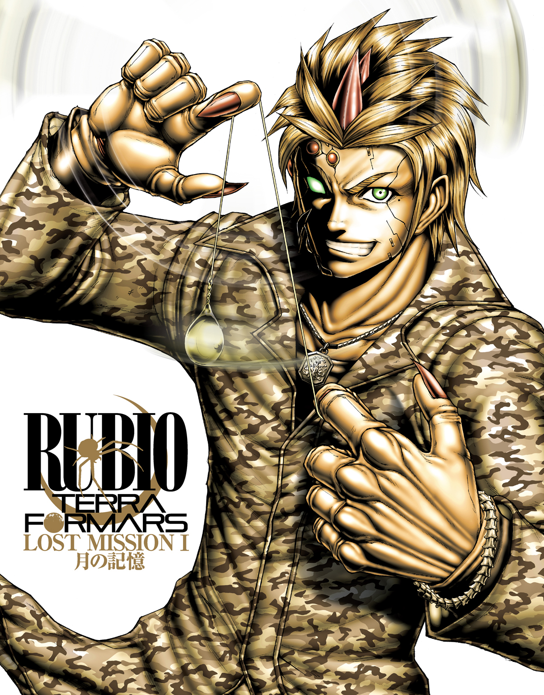

| テラフォーマーズ LOST MISSION I 月の記憶 | |
| 東山彰良 | |
この本は縦書きでレイアウトされています。
また、ご覧になる機種により、表示の差が認められることがあります。


CONTENTS
この作品はフィクションです。実在の人物・団体・事件などには、いっさい関係ありません。
プロローグ A GIRL IN THE TREE かぐや姫
日本という国には、かぐや姫というお姫様のおはなしがあるそうだ。
竹取りのおじいさんが、ある日、林のなかで光り輝く一本の竹を見つける。その竹を割ってみたところ、なかからかわいい女の赤ちゃんがあらわれる。おじいさんはびっくり仰天して、赤ちゃんを家に連れ帰る。すると、おばあさんも目を白黒させて驚く。その女の子があまりにもきれいだし、おじいさんとおばあさんには子どもがいないし、それにおじいさんとおばあさんはとても善い人たちなので、赤ちゃんは大事に育てられ、やがてとても美人さんになるのだ。
「かぐや姫は美人さんになって、それからどうなるの？」わたしは尋ねる。
「男の子たちをみんな虜にしちまうのさ」パパ・キタザワはにっこり微笑って、答えてくれる。「そう、いまのおまえみたいにね」
「あたし、男の子たちを虜にしてるの？」
「スカイラーや、このへんの男どもはみんなおまえに夢中なんだよ」
「ふぅん」
わたしはすこし考えてみるのだけれど、やっぱり「虜にする」とか「夢中になる」とかの意味は分からない。
わたしには知らない言葉がたくさんある。
そのせいなのかもしれない。わたしがなにも思い出せないのは。言葉は川に打つ投網のようなものだ。言葉を知らなければ、記憶という魚を捕ることはできない。
だから、わたしは一生懸命に言葉を学ぶ。たくさん本を読む。
パパ・キタザワにジャングルのなかで見つけてもらったとき、わたしもかぐや姫みたいに木のなかにいたそうだ。
大きな木の洞のなかにいたわたしは、素っ裸で、体にはかすり傷ひとつなく、そしてなにも憶えていなかった。
はじめのうちは、口すらきけなかった。
でも、パパ・キタザワといっしょに暮らしてふたつの雨季とひとつの乾季が過ぎたいま、言葉はものすごい速さでわたしのなかへ戻ってきている。わたしはかつてそれらの言葉を話していたのだけれど、どうしたわけか、すっかり忘れてしまっていた。
パパ・キタザワは口をきかないわたしを家に連れ帰り、何日も何日も辛抱強く語りかけてくれた。かぐや姫と違うところは、パパ・キタザワのうちには、おばあさんがいないことだった。やさしいおばあさんは、ずっと前に悪党に殺されてしまった。
パパ・キタザワは、おばあさんのぶんまで、わたしにやさしくしてくれた。ひと言、ひと言、ゆっくりと、はっきりと話しかけてくれた。八十キロ離れた町からわたしのために洋服をどっさり買ってきて、着方を教えてくれた。わたしの体を洗い、長い髪を梳かした。ナイフとフォークの使い方を、口に入れていいものと悪いものの違いを、毒のある虫とない虫の見分け方を、ひとつひとつ教えてくれた。
それでも、わたしはまるまるひとつの雨季をとおして、口がきけるようにはならなかった。
あのころのことはよく憶えている。一生懸命わたしに話しかけてくれるパパ・キタザワの顔を、諦めの色がすこしずつ染めてゆくのを、わたしはちゃんと憶えている。
きっかけは、「美人」というひと言だった。
なにを訊かれてもきょとんとしているわたしを見て、パパ・キタザワは首をふりながら、悲しそうにこう言った。
「こんなに美人なのに、神様はなんて無慈悲なことをしなさるんだろう」
それまでパパ・キタザワの言っていたことなんかひと言も分からなかったのに、このとき「美人」という言葉がはっきりと聞き取れた。すると、まるでつがいで泳ぐ魚のように、もうひとつの言葉がすいっと目の前をよぎった。
グアパ......声に出してつぶやいていた。ビューティフル......
「こりゃたまげた」パパ・キタザワが目を丸くした。「おまえはスペイン語だけじゃなく、英語も話せるのか！」
そこが突破口だった。
言葉を堰き止めていた壁に穴が開き、いろんな単語や文章がどっとわたしのなかへ流れこんできた。少年、少女、ボーイ、ガール――知っている言葉もあれば、知っているような気がするだけの言葉もあったし、ぜんぜん知らない言葉もたくさんあった。
「たぶん、度忘れしとったんだろうな」パパ・キタザワはうれしそうに手をたたき、胸の前で十字を切った。「ほれ、むかし勉強したことは、たとえ忘れても、ちょっと勉強すればまた思い出したりするじゃないか。きっとおまえはスペイン語と英語でしょっちゅう美人さんと呼ばれとったんだろうなあ」
だけど、それ以外のことはまるで思い出せなかった。自分がどこのだれで、歳はいくつで、どうして裸で朽ち木のなかにいたのか。
一度、わたしとパパ・キタザワは筏に乗り、ボートに乗り、ぎゅうぎゅう詰めのバスに乗り、汽車に乗り、親切な人の車を何台も乗りついで、カラカスの偉い医者のところへ行ったことがある。
ドクトールはわたしの体に針を刺して血を採ったり、眼の奥を覗きこんだりしたけれど、記憶喪失ということ以外、けっきょくなにも分からなかった。
わたしたちはまた八日と七晩をかけて親切な人の車に乗り、汽車に乗り、ぎゅうぎゅう詰めのバスに乗り、ボートと筏を乗りついでネグロ川のほとりに、わたしたちのジャングルに帰ってきた。
それから、ここを離れたことはない。
「なあに、記憶なんざ厄介なだけさ」パパ・キタザワはそう言った。「生きとりゃ、忘れてしまいたいこともあるさ」
政府の人が何度かやって来てわたしたちを追い出そうとしたけれど、そのたびにパパ・キタザワは彼らをライフルで追い返してしまった。
「このへんはリカバリー・ゾーンだからな」パパ・キタザワはわたしに教えてくれた。「お偉いさんたちの取り決めで、人は住んじゃいかんことになっとるが、わしらのような百姓は土地から離れては生きていけんからなあ」
わたしたちは、今日まで、そうやって生きてきた。
畑を耕し、パパ・キタザワはときどき森でバクや猿を撃ち、わたしはネグロ川で魚を捕まえる。大きなカメが捕まることもある。近くの町へ行けば、わたしに話しかけてくる男の子たちもいる。そんなときはいつでも、パパ・キタザワがライフルをちらつかせて、追っ払ってくれる。
わたしの名前はスカイラーかもしれないし、そうじゃないかもしれない。
だけど、そんなのは、なんでもないことだ。パパ・キタザワがわたしを「スカイラー」と呼び、わたしは「はい」と返事をする。わたしはこの老人を「パパ」と呼び、パパは穏やかな声で「なんだね」と返事をしてくれる。
森は豊かで、川がわたしたちを裏切ることはなく、大地はタロ芋の神様に祝福されている。
わたしたちは満ち足りている。
「ねえ、パパ、かぐや姫は男の子たちとどうなったの？」
「どうもなりゃせんよ」パパ・キタザワはタロ芋畑を耕す手を休め、日によく焼けた顔をわたしに向ける。「かぐや姫のうちは月だから、月に帰ってしまうんだ」
「どうして？」
「だれだってうちが一番だろ？」
わたしは畦道にしゃがんだまま、すこし考える。「うん、そうね」
「男の子たちがいくらガッカリしても、それはかぐや姫にはどうしようもないことなんだよ」
「あたしのおうちはここね？」
「そうだよ」
「だったら、あたしが帰ってくるのもここね？」
「そうだよ」
「かぐや姫は月に帰ってからどうなったの？」
「さあな、どうなったんだろうな」パパ・キタザワはうんと腰をのばし、額の汗を手でぬぐう。「でも、そんなに美人さんなんだから、きっと幸せに暮らしたんじゃないのかな。たぶん、月の男の子たちもかぐや姫に夢中になったはずだから」
「あたしもここでパパといっしょだから幸せだわ」
「そりゃよかった」
「パパはどうしてかぐや姫のおはなしを知ってるの？」
「ベネズエラに渡ってくる前、わしのじいさんのじいさんのそのまたじいさんは日本に住んでいたからだよ」
陽が翳り、遠くで雷がゴロゴロ鳴る。森のなかでカエルたちが鳴きだす。ヒキガエルやヤドクガエルだ。ヤドクガエルには毒があるので、触ってはいけない。わたしは水のにおいのする空気を胸いっぱいに吸い、木々の上に暗い雲がかぶさってくるのを眺めやる。
「雨が降るわ」
返事はない。
「パパ？」
「家のなかに入っていなさい」
「......？」
パパ・キタザワの顔つきは、まるで別人のように険しくなっている。畑を耕す鍬を放り出し、柵に立てかけてあるライフルを取り上げる。
わたしはパパ・キタザワの視線を追う。そして、ジャングルのなかでこちらをじっと見つめている男に気づく。
役人じゃない。リカバリー・ゾーンからの立ち退きを勧告する政府の人なら、どんなに暑くてもちゃんと背広を着てやって来るからだ。
男は兵士のようなモスグリーンのズボンに、ボロボロの半袖シャツを着ている。
もちろん、ワバ族でもない。わたしの知るかぎり、先住民たちはそもそも服など着ない。ブラジルから流れてきた悪党でもないことは、彼が鉈も銃も持っていないことで分かる。くたびれたロバを一頭引き連れているだけだ。
「動くなよ、この金鉱掘りめ！」それでも、パパ・キタザワはライフルを構える。「今度わしらの川に水銀を流したら、どてっ腹に風穴を開けてやるからな！」
１ BLUE BUTTERFLY アマゾンの宝石
一目惚れってやつを信じるかい？
バグズ手術を受けて、生きてふたたびこの世に戻ってきたとき、おれは世界のすべてに一目惚れしちまったんだ。
おれが目を覚ましたのは六月の、うだるような暑い朝だった。手術を受けたのが二五九九年の二月だったから、まるまる四か月も昏睡していたことになる。
となりのベッドで、チビがすやすや寝ていた。
「おい」四か月もしゃべらなかったせいか、思うように声が出ない。「おい......チビ、大丈夫か？」
チビはこんこんと眠り続けた。しかし、やつの腕には点滴の針が刺さっているから、すくなくとも死んではいないようだ。
おれは胸を撫で下ろした。戦友が死ぬのは、いつだっていやなものなんだ。
四か月。
気だるそうに回る天井のファンを見つめながら、おれはゆっくりと手足を動かしてみた。すると、体のいろんなところに、筋力維持パッチが貼られていることに気づいた。
昏睡しているおれたちの筋肉が萎えてしまわないように、このパッチからは微弱な電流が一定のリズムで出ていて、絶えず筋繊維を刺激してくれるんだ。
それでも、四か月間動かしてない体は、なまりきっていた。動かそうとすると、古くなった蝶番みたいに、あちこちがギシギシと軋んだ。おれはゆっくりと、すこしずつ手足を動かし続けた。
なんとか半身を起こすことができたときには、昼近くになっていた。
パッチをはがし、点滴の針を抜くと、おれはそろりそろりとベッドを抜け出した。足腰がすっかりヤワになっていて、廊下の壁にもたれかからなければ、立つことすらままならなかった。おれはひどく苦労して、ふらつく足でよろよろと外へ出た。
とたん、度肝を抜かれた。
光が、風が、木々の緑が、虫の声が、地面からたちのぼる蒸気が、空を飛んでゆく色鮮やかな金剛インコの群が、いっぺんにおれのなかへ流れこんできた。いままで毎日見てきたあたりまえの風景なのに、おれはすっかり圧倒されて、思わず尻餅をついてしまった。
おれは生きている！
手術は成功したんだ！
そう思うと、すこしだけ涙が出た。
手あたりしだいに、なんでも触れてみた。土のにおいを嗅ぎ、石の硬さにはしゃぎ、ぺんぺん草の生命力に驚いた。
洗われたように真新しい世界が、目の前に広がっていた。
おれはジャングルの木々に一目惚れし、おれたちを食ってやろうと狙う川のなかのピラニアに一目惚れし、湿地帯のカエルたちのやかましい鳴き声に一目惚れし、真昼の熱気に一目惚れした。いつもなら見つけしだい殺していたゴキブリどもにさえ、一目惚れした。
分かるかい、この気持ち？
バグズ手術の成功率は、医療設備の整った先進国で受けても、せいぜい三十パーセントくらいのものなんだって話だ。ほんとうかどうかは知らないが、コントレラス隊長が言うのだから、たぶんそのとおりなんだろう。
つまり、十人受ければ、七人が死ぬ。
ただでさえ自殺行為なのに、それがアマゾンのジャングルの闇医者の手にかかれば、その成功率たるや、笑っちまうほど低くなる。コントレラス隊長はおれたちに、成功率は十パーセント以下になるだろうと言った。
「しかも」と、隊長は志願者たちに、つまりおれたちに言った。「たとえ手術が成功しても、きみたちが昆虫の能力を発揮しようと思えば、きみたちの寿命を犠牲にせねばならない」
隊長はその理由をなんだかんだと説明したが、おれにはチンプンカンプンだった。中南米リカバリー・ゾーン解放戦線の兵士、つまりおれたちのような若者は、小学校さえろくに出てないやつが大半なんだ。だから、生き物の時間は体重の四分の一乗に比例する、なんて言われてもなあ。
ない頭を必死に使っておれが理解できたのは、大きい動物は寿命は長いが動きはのろい、小さい動物は寿命は短いが動きは速い、バグズ手術によって素早い動きを手に入れたいなら、寿命を担保にしなきゃならない、ということくらいだった。
「小さい動物はかわいそうだな」
おれが小声でそうつぶやくと、マルコス・ピアザのやつがせせら笑った。
「話を聞いてなかったのか、ルビオ？ 図体がでかかろうが、小さかろうが、心臓が一生に鼓動する回数も、細胞が分裂する回数も同じなんだぞ。だとしたら、ゾウだろうが、ネズミだろうが、アリだろうが、一生の時間の感覚は同じじゃねえか」
「ふぅん、そんなもんなのか」
「生理的時間ってやつさ」
ニヤリと笑ったマルコスは、意味もなく腕の筋肉を隆起させた。それが、おれを軽くイラッとさせる。
ジャングルのなかは毒虫だらけだ。マラリア原虫を持っている蚊、ダニ、ノミ、ブヨ――とくにピウンというブヨのなかにはフィラリア原虫を持つやつがいて、こいつに刺されると、卵が体のなかで孵り、目ん玉の裏側にずっと寄生しちまうんだ。
それなのに、このマルコス・ピアザときたら、筋肉を自慢したいばっかりに、ピッチピチのタンクトップしか着ない。むき出しの両腕を埋め尽くす刺青と、無数の切り傷が、このコロンビア男の育ちの悪さを物語っている。いつも胸にぶら下げているジャガーの牙でこしらえたペンダントも、いけ好かない。
「あの、コントレラス隊長......」チビがおずおずと手を挙げて質問した。「寿命がなくなるって......どれくらいなくなるんですか？」
「それは分からん」隊長は包み隠さずに話した。「バグズ手術には、いまだ解明されていない部分がたくさんある。先進国はこの手術の存在そのものすら公表していない。我々がベルウッド博士のことを知り得たのは、アジアの同志が教えてくれたからだ」
えーと、まとめてみよう。おれたちが闇医者からバグズ手術を受ければ、十人に九人は死ぬ。そんで、たとえ手術が成功したとしても、おれたちが虫どもの能力を使えば、寿命がなくなるってことか。
「おい、チビ、びびっちまったのか？」と、ホセ・モレロスが冷やかした。「やめるなら、いまのうちだぜ」
しかし、チビはもちろん、バグズ手術をやめたりしなかった。
手術に志願した五十二人の兵士のだれひとり、逃げ出したりしなかった。逃げる理由が、まったくない。おれたちのほとんどが十六歳から十九歳で、解放戦線の兵士は、だいたい二十一歳になる前に、みんな戦いのなかで命を落とす。どうせ、三、四年のうちに、みんなこの世から消えていなくなる。
だとしたら、手術を受けていま死のうが、寿命がごっそり奪われようが、いったいだれが気にする？
それに、おれたちは、とうのむかしに革命に命を捧げている。リカバリー・ゾーンの土地を奪い返し、それを農民に返す。そのために、中南米の各地から、このジャングルに集まってきたんだ。
ベルウッド博士の診療所の周囲は、木々を伐り拓いただけの空地だ。十メートルも進めば、熱帯植物に侵食された廃墟が広がっている。博士の診療所自体、打ち捨てられたビルを再利用していた。
かつては、この場所にも町があったんだ。
すべてが一変したのは、おれが生まれるずっと前のことだ。二五〇〇年あたりから、地球は増えすぎた人口の重みに耐えかねて、悲鳴をあげていた。各地で食糧不足が叫ばれ、貧富の差が拡大し、紛争が頻発した。
人々は、それまでの食生活をあらためなければならなかった。豚肉を一キロ生産するのに、穀物が四キロ必要となる。牛肉一キロなら、穀物は七キロだ。一キロの牛肉なんて、男がふたりでかかれば、一食分にすぎない。でも、穀物が七キロもあれば、一家四人が半月は食っていける。
この穀物を生産するために、各国はこぞって農地を増やそうとした。森林の伐採を続けた。そのせいで、今度は地球の温暖化が、シャレにならないくらい進んじまった。森は人間が出した二酸化炭素を吸収してくれる。で、二酸化炭素ってのは、温暖化の元凶なんだ。つまり、これ以上木を伐り続けたら、地球は地獄の台所みたいになっちまうってことさ。
南極の氷が溶け、太平洋のいくつかの島が完全に水没し、平均気温がどこでも三、四度上がってくると、それまでにない新しい病原体が生まれたんだ。
一番恐ろしかったのは、おれが生まれる前に流行ったストーン熱だ。
この伝染病はおれの生まれ故郷、グランメキシコにも押し寄せてきた。父ちゃんが、いまのおれくらいの歳だったころのことだ。父ちゃんには八人の兄弟がいたが、そのうちの六人がストーン熱で死んだ。
ストーン熱は空気感染する。こいつに罹ると、ウイルスが出す分解酵素のせいで、脳みそがスープみたいに溶けちまうんだ。
アメリカの学者、ダグラス・ストーンは、遺伝子的観点から、ストーン熱ウイルスはエボラ出血熱の突然変異種だと断定した。アフリカの乱開発のせいで、新しいウイルスが誕生したのだと、国連の会議で発表した。もしこのまま環境破壊を続ければ、アマゾン流域やボルネオ、インドでストーン熱は新たな進化を遂げるだろう、と。
全世界が震撼した。
それというのも、ストーン熱による死者は、推定で二億人を超えていたからだ。第二、第三のストーン熱ウイルスが、さらなる殺傷力をともなって生まれることを想像して、人々は半狂乱になった。
このただならぬ事態に対処するため、国連が採った方策こそが、リカバリー・ゾーンの設定だったんだ。
二五八〇年八月十日、インドでムンバイ議定書が採択された。そこには、人間の居住を禁止するリカバリー・ゾーンを設定した国には、先進国から莫大な援助を受けることができると謳われていた。
アマゾン川流域の国々、つまりアマゾン川本流が貫くブラジルとペルー、そして支流がいくつも走るベネズエラやコロンビアは、ムンバイ議定書に調印した。おれの国グランメキシコも、いくつかの州をリカバリー・ゾーンに指定し、住民を強制移住させた。
もう、分かるだろ？
ムンバイ議定書から二十年近い年月が流れ、リカバリー・ゾーンとして囲いこまれた土地は、いまやジャングルに吞みこまれてるってわけさ。
住民が強制退去させられた町は、植物に侵食され、野生動物が棲みついている。ジャングルは蘇りつつある。そして、第二のストーン熱は、いまのところ発生していない。
でも、おれたち百姓はどうなる？
じいちゃんは、土地を政府に召し上げられたことを恨みながら、死んでいった。父ちゃんは他人の土地を耕し、いまも他人のために作物を育てている。身を粉にして働いても、息子をろくに小学校にもやれやしない。
そもそも、おれたち百姓が、いつ南極の氷が溶けるほど木を伐った？
そりゃたしかに、おれたちも木を伐り、畑を焼く。だけど、地球温暖化を引き起こすほどの森林伐採をしたのは、おれたちじゃない。
何世紀にもわたって森を壊してきた多国籍企業の連中は、たぶん、クーラーの効いた部屋で、肉を食いながら、地球の環境問題を憂えているのだろう。リカバリー・ゾーンをもっと拡大するべきだと言うその同じ口で、今度買う新車やマンションやヨットの話をしてるんだ。
おれは頭が悪いから、むずかしいことは分からない。それでも、一生真面目に大地と格闘してきたじいちゃんや父ちゃんがすこしも間違ってないことは、分かるつもりだ。
大事なのは、無差別に人々を追い出して、あちこちに無人地帯をつくることじゃない。森や土に敬意を払わない連中だけ締め出せばいいんだ。おれたち中南米リカバリー・ゾーン解放戦線は、それを信じて戦っている。
目を覚ましたあと、診療所を出たおれは、あてもなくそのへんをうろつき回った。
つる草のからまる廃屋や、木に突き破られたビル、猿たちが棲みついているバスを眺めながら、森のなかを散策した。錆びついて、いまにも倒れそうな信号機に、大きな蛇が巻きついていた。
コケの生えた瓦礫を踏みしめて森の奥へ分け入ると、目の前を大きな青い蝶がふわふわとよぎった。ブラジル人たちがモルフォと呼ぶやつで、アマゾンの宝石と言われるだけあって、優雅な美しい蝶だった。
その蝶を追っていくと、さらさらと水の流れる音が聞こえてくる。そういえば、四か月ものあいだ、体を洗ってない。ちょうどいいやと思い、おれは下草を踏み分けて、水の音のするほうへ向かった。
暗いジャングルのなかで、その川にだけ光が射しこんでいた。
木を回りこんだおれは、ハッと息を吞んだ。
鬱蒼と茂る木々の切れ目から射しこむ光のなかで、無数のモルフォが飛び交っていた。梢の葉に濾された光は薄緑色に染まり、川面に落ちてキラキラと砕けている。涼しげな音をたてて流れる水に、モルフォたちの青い影が、点々と揺らめいていた。
だけど、おれが思わず息を吞んでしまったのは、なにも蝶の美しさに心を奪われたからじゃない。
見たこともないきれいな女の子が、裸で水浴びをしていたんだ。
淡い緑色の光を受けて、彼女の濡れた体が白く輝いて見えた。まるで森の妖精みたいだった。長い黒髪を腰まで垂らし、水をすくい上げて蝶とたわむれている。もし彼女が妖精なら、きっとモルフォたちの女王に違いない。ガラにもなく、おれはそんなふうに思ってしまった。
あまりにも無防備に見とれていたものだから、ちょっと動いた拍子に木の根に足を取られ、思いっきり土手を転げ落ちてしまった。
「わあああ！」
ドッシーンと尻を強打し、そのせいで金剛インコがいっせいに飛びたった。
川のなかの女の子が、身を起こしてこっちを見ている。
「あわあわあわ......ち、違うんだ」おれは跳び上がって、しどろもどろで取りつくろった。「べつにきみを覗いてたわけじゃなくて......」
すると、女の子は小首をかしげ、体ごとこっちを向いた。
「わっ！」おれはとっさに背を向けてしまった。「み、見てませんから！ おれ、なんにも見てませんから！」
ひたひたと近づいてくる足音が聞こえ、続いて声がした。
「あなた、だれ？」
「お、おれは......おれは、ベルウッド博士の手術を受けに来た、その......あの、解放戦線の兵士です」
「パパのバグズ手術を受けに来たの？」
バグズ手術というひと言が、おれをふりむかせる。
「わっ！」
すぐさま顔を戻してしまった。
彼女はまだ裸のままだった。
「お名前は？」
「えっと、ル、ルビオ......」胸の奥で心臓が大暴れしていた。「みんなには、ルビオって呼ばれてますです、はい」
「金髪？」
「はい、この髪のせいで、そう呼ばれてます」
「じゃあ、ルビオは手術が成功したんだね」
「そのようです」
「あたしはね、スカイラーっていうんだよ」
「お、お目にかかれて光栄です、スカイラーさん......あっ、いやいやいや、てゆーか、お目にかかってませんから、おれ、ほんっとうに見てませんから！」
「じゃあ、あたしたち、仲間ね」
「え？」
「よろしくね、ルビオ」
「.........」
濡れた髪がおれの首筋にふれ、彼女の温かい吐息が髪にかかる。一瞬のことで、身じろぎすらできなかった。
「ルビオの髪、とってもきれいね」スカイラーは、背後からおれの髪に顔を押しつけ、深く息を吸った。「麦わらのにおいがする」
それから、おれの肩に両手をかけ、頰にちょこんとキスをしてくれたんだ。
おれは彼女の唇を感じた場所に手を当て、しばらく立ち尽くしていた。我に返ってふりむいたときには、スカイラーはどこにもいなかった。
風が木々を揺らめかせ、青い蝶たちが音もなく川辺に舞っていた。
なんだったんだ、いまの？ 幻でも見たんじゃないかと思った。ひょっとして、おれって手術が失敗して、もう死んでるんじゃないのか？
そうじゃなきゃ、あんなきれいな女の子が見えるはずがない。
おれは、蝶たちでさえ不審がるほど長いことたたずみ、それからコントレラス隊のキャンプ地へとぼとぼ歩いていった。
ずっとむかしに、テレビで観た『真夏の夜の夢』という映画を思い出した。たしか、シェークスピアが書いたやつだ。惚れた腫れたの恋愛ものだった、としか憶えてない。男女が好き合い、どっちかの父親がふたりの交際を認めず、若いふたりは妖精の森へ逃げこむ。で、森の妖精に、瞼に媚薬を塗られちまうんだ。
目を覚ましたとき、最初に見た者に恋をしてしまう媚薬を。
ここは森のなかで、しかもアマゾンは年中夏だ。まだ夜じゃないけど、それがどうした。決定的なのは、スカイラーはおれが四か月の眠りから目覚めて、はじめて目にした女だってことだ。
「バカか、おれ」
失笑してしまった。
でも、そう考えただけで、愉快な気分になった。おれはアハアハ笑いながら駆けだし、倒木を飛び越えたり、水溜りを踏んだり、鳥たちをびっくりさせたりした。森の奥でジャガーのうめき声がしたが、ちっとも気にならなかった。
もう一度訊くけど、一目惚れってやつを信じるかい？
２ GUERILLAS 遊撃隊ブギ
五十二人がバグズ手術を受けて、成功したのは、おれを含めて四人だけだった。マルコス・ピアザ、チビ、色男セウ・フアレス――それだけだ。手術の前にチビを冷やかしたホセ・モレロスは、もたなかった。
いつも不機嫌で、右目の下に大きな泣きボクロのあるベルウッド博士から、術後の注意をあれこれ受けた。やれ昆虫の能力を引き出す注射を打ちすぎてはいけないだの、ひょっとすると部分的にしか昆虫化できないかもしれないだの、首尾よく変身できたとしても昆虫には必ず天敵がいるだのといった、まあ、どうでもいい話だった。
おれたちが昆虫化するのは、生きるか死ぬかのときだけだ。そんなシチュエーションは、考えつくかぎり、ひとつしかない。
そう、政府軍に囲まれたときだ。
昆虫化して、政府軍のやつらをひとりでも多く殺す。薬が切れたら、やつらにぶっ殺されて、それで一巻の終わり。
それだけのことさ。
おれたちが知るべきは、能力の使い方だけなのに、ベルウッド博士は目を揉みながら、憂鬱そうにこう言うだけだった。
「そんなこと、わたしに分かるわけがないだろう。魚はだれに教わらなくても泳げるし、蜘蛛はだれに教わらなくても虫を捕って食う。注射を打って変身すれば、おのずと分かるようになるはずだ」
「でも、博士......」と、ここでも小心者のチビが挙手して質問した。「もし分からなかったら？」
「そのときは」と、ベルウッド博士はうんざりしたように言った。「諦めたまえ」
それから、ひとりに三本ずつ注射が配られた。
おれたちは軍服の腕にある、専用ポケットにそれをしまった。
「手術前のパッチテストで、おまえたちには自分に適合した昆虫の種類を伝えてある」ベルウッド博士がテントを出ていくと、コントレラス隊長が言った。「おまえたちの能力は、ゲリラ戦に特化したものだ。いいか、仲間同士でも、けっして他人に打ち明けるな。秘密というものは、必ず漏れるものだということを肝に銘じておけ。とくに、セウ、娼婦なんかにベラベラしゃべるんじゃないぞ」
全員がどっと笑った。
「次の作戦は追って通達する」コントレラス隊長が締めくくった。「体力が回復するまで、しばらく休んでいろ――人民に土地を」
「人民に土地を！」おれたちは気をつけの姿勢を取り、力強く復唱した。「人民に土地を！」
「おい、ルビオ」バグズ手術成功者のための講習会が終わるや、マルコスが誘ってきた。「今夜、アマンダたちのところへ行こうぜ」
だけど、おれはそれどころじゃなかった。急いでテントを飛び出して、ベルウッド博士を追った。
「博士！ ちょっと待ってください、博士！」
おれのあわてっぷりを不審に思ったマルコスと色男セウも、テントから出てくる。
ベルウッド博士は、ゆっくりと自分の診療所へ帰っていくところだった。おれの声に気づき、足を止めてふりかえる。
「すみません、ちょっとお話があるんです」髪に手櫛を入れながら、おれはグランメキシコの男らしく単刀直入に切り出した。「博士......いや、お父さんと呼ばせてください」
ロニー・ベルウッド博士のハシバミ色の目に、警戒の色がよぎった。コントレラス隊長の話では、すでに五十近いということだが、もっとうんと老けて見える。国籍はアメリカで、お兄さんのトーマス・ベルウッドは二五七七年に火星へ行き、二度と帰ってこなかったバグズ一号の乗組員だったらしい。
「お父さん」おれは息を整えながら、キメ顔をつくった。「どうか、ぼくと娘さんとの交際を認めていただけませんか？」
「.........」
「ぼくは本気です。いや、まだ正式に申しこんではいませんが、まずはお父さんの了承を得てからと思いまして。それくらい本気だってことです」
「わたしには娘はおらん」
「いや、お気持ちは分かります。おれが......いや、ぼくがあなたでも、解放戦線の兵士なんかと自分のかわいい娘を付き合わせたりしないでしょう。でも、お父さん、恋は止められないのです。そして、ぼくはどんなことをしてもスカイラーのハートを......」彼女の名前を口にしたとたん、もともと白いベルウッド博士の顔がさっと青ざめた。「えっと......娘さんのハートをですね......そのお、できれば射止めたいなあ、なんて......」
「そんな娘は知らん！」
「.........」
大股でのっしのっし歩み去るベルウッド博士を、おれは呆然と見送るしかなかった。
このじじい、急に怒りだしたりして、いったいどうしたってんだ？ このおれじゃ、スカイラーとつり合わないってことかよ？
頭をはたかれてふりむくと、そこにマルコスと色男セウがいた。
「なーにやってんだ、てめえは？」マルコスが言った。
おれは遠ざかるベルウッド博士を見やってから、ふたりに向き直った。
「くそったれ、ぜってーにスカイラーをおとしてみせるぜ」
ふたりが顔を見合わせた。
「スカイラーってだれだよ？」色男セウが訊いてくる。
「あのアメリカ人の娘さ」おれは教えてやった。「おれはもうスカイラー・ベルウッドに首ったけなんだ。言っとくけど、もしおまえらがおれと張り合おうってんなら、血を見ることになるぞ」
「昏睡中に夢でも見たんじゃねえのか？」マルコスは目をすがめ、「おれはおまえより一週間も前に目を覚ましたけど、このキャンプにゃそんな女いねえぞ」
「はあ？」
「こんなところに女なんざいるわきゃねえだろ、アホ」色男セウが続く。「もしいたら、このセウ・フアレス様がとっくにいただいてるっつーの」
「いやいやいやいや」おれは首をぶんぶんふった。「てゆーか、おれ、この目で見たし。キスだってしてもらったし」
「どこでだよ？」
「ジャングルんなかの川さ。一か所だけ光が射しこむところがあるだろ？ モルフォがたくさんいる川べりさ」
「川？」
「おいおいおいおい、川までないって言いだすんじゃねえだろうな？」
「いや、川はある」
「だろ？ おれはそこでスカイラーに......」
「けど、その川は何十キロも続いてんだぞ」色男セウがかぶせた。「いったいどのへんでその女を見かけたんだよ？」
「どのへんって......」
「おれらはみんな、今回の手術のために南米各地から集まってきた」色男セウが言った。「だから、このへんの土地勘はねえ。賭けてもいいけど、たとえそんな女がほんとうにいたとしても、もうぜってーに見つかりっこねえぞ」
「だーから、こいつは夢を見たんだって」マルコスがおれの背をどつく。「さあ、町へ繰り出そうぜ。アマンダのやつがおまえを連れてこいってうるせえんだ」
一目散に森へ駆けていくおれに、ふたりがいっぺんに怒鳴った。
「おい、ルビオ！ 帰ってこい、ルビオ！」
「スカイラーはぜってーにいるんだよ！」
おれが怒鳴り返すと、ふたりは肩をすくめ、勝手にしろとばかりに手をふり上げた。
おれは記憶をたよりに、ジャングルのなかを闇雲に走り回った。走っては立ち止まり、立ち止まっては川のせせらぎが聞こえやしないかと、耳を澄ませた。それから、また走った。くたくたになるまで駆けずり回ったが、川はおろか、モルフォ一匹見つけられなかった。
ちくしょう、やっぱ夢でも見てたのかな......？
不機嫌の時限爆弾と化したおれはキャンプへ戻り、マルコスたちといっしょにジープで町へ繰り出した。
ピントの町はアマゾン川のほとりにあって、一番近い文明社会のマナウスまで、直線距離にして二百キロほど離れている。
もちろん、リカバリー・ゾーンのなかにある。
ムンバイ議定書では、リカバリー・ゾーンには、人は住んじゃいけないってことになっている。だから町には水道もガスもないし、もちろん電気だって通ってない。それでも、人々はどこからともなくやって来て、好き勝手に住みつく。
人が集まると、町ができる。だから、リカバリー・ゾーンのなかには、ピントみたいな小さな町があちこちにあるんだ。
ジャングルのなかにいるのは、おれたちみたいなゲリラだけじゃない。先住民たちは先住民たちの保護区で暮らしているし、お天道様に顔向けできない金鉱掘りや、都会で食い詰めたやつらが身を隠している。
だれかが発電機を持ちこみ、廃墟に灯りをともせば、そんなやつらがふらふらと吸い寄せられる。で、だれかが音楽を持ちこめば、そこに恋の花が咲く。そして、だれかが酒を持ちこめば、まるで窓からハエが入ってくるように、そう、喧嘩や殺人だってしょっちゅう起こるんだ。
もちろん、リカバリー・ゾーンには警察なんかいない。だから、よほどのバカじゃなきゃ、こんな危ないところには近づきもしないだろう。
この日も、町は先住民虐殺事件のことで持ちきりだった。
どうやら、おれたちが昏睡しているあいだに、またワバ族が、無法者のガリンペイロに殺されたようだ。
「四十人だぜ！」町角で、男たちが唾を飛ばして言い合っていた。「みんなマシンガンで蜂の巣にされて、川に流されたんだとよ。ありゃ見せしめだぜ」
「ガリンペイロの仕業かどうか、分からねえじゃねえか」
「たしかにな。先住民保護区に反感を持ってんのは、ガリンペイロだけじゃねえからな」
こういう事件が、ときどき起こる。逆に、ワバ族にガリンペイロが殺されることだってある。
そもそも先住民保護区は、政府の許可なしには入れないことになっている。無許可で金を掘るなんざ、もってのほかだ。
問題はリカバリー・ゾーンの設定で、人の住める土地がうんと減っちまったってこと。ワバ族を目の敵にするやつらは、人口の一パーセントにも満たない先住民が、国土の十パーセントを占める広大な保護区にのうのうと暮らしているのが気に食わないんだ。
おれに言わせれば、ジャングルはワバ族のもんだ。白人が好き勝手にしていい場所じゃない。ワバ族は何千年も前から、そこで暮らしてんだからな。
だけど、そう思わないやつのほうが多い。そう、マルコス・ピアザやセウ・フアレスのように。
「ひゃっほーい！」
マルコスと色男セウには、先住民虐殺事件なんか、どこ吹く風だった。ラム酒の瓶をふり回し、とっととお気に入りの娼婦の腰を抱いて、お持ち帰りしようとした。
「おい、ルビオ、なにやってんだ！ アマンダが待ってるぞ！」マルコスが叫ぶと、色男セウがゲラゲラ笑った。「恋だぜ、恋！ 生きてるうちに楽しみな、ルビオ！ 革命だって恋のためさ！」
どこかで男の怒鳴り声がし、続いてだれかが発砲したが、ふたりは気づいてさえいないようだった。娼婦と乳繰り合いながら、しけこむ部屋を探しに消えていった。
ううむ、いつもながら、こいつらのくそ度胸には頭が下がるぜ。
陽は落ち、あたりを闇が包んでいた。町のところどころに、しょぼくれたネオンがまたたいている。その光に集まってきた虫たちが、ネオンのまわりに群れていた。隣り合ったジャングルからは、ときおり猿たちの甲高い声が、生温かい風にのって届いた。
「ねぇえ、ルビオ」ものすごく短いスカートを穿いたアマンダ・ディアスが、しゃなりしゃなりとやって来た。両手をおれの腰に回す。「あの約束、憶えてる？」
「ああ......うう......えーと......」
「手術が成功したら、あたいの男になるって言ったよね？ だから、無料で遊ばせてあげたんだから」
「ぐむにょごにょごもにょ」
「え？ なに？」
おれは息を大きく吸いこみ、意を決してアマンダの肩を摑まえた。
「なに？ どうしたの、ルビオ？」
「おれの話を聞いてくれ、アマンダ、じつは......」
ズシッ！
言い終わらないうちに、アマンダのパンチが顔面にめりこんだ。
「な、なにを......」
「あらあ、ごめんなさーい」アマンダはカラカラと笑った。「あんたに女ができたんじゃないかと早とちりしちゃってえ、やーん、あたいのおっちょこちょい。やだ、鼻血！ だいじょうぶ、ルビオ？」
「.........」
「でも、そんなことないわよねえ、だってさんざんあたいの体をもてあそんだんだもんねえ。いまさらそんなこと言われたら、あたい、あんたのこと刺しちゃうかも♥」
「え？ うう......えーと」
「で？」彼女の目がナイフのようにギラリと光る。「話ってなあに？」
おれは怖気をふり払い、息を吸い、そして、一気に言った。
「好きな女ができた！」
アマンダが目をぱちくりさせた。
「おれも男だ！」威勢よく啖呵を切り、地面にドッカとふんぞり返ってやった。「さあ、煮るなり焼くなり好きにしてくれ！」
短い沈黙があった。
へへん、いくら娼婦たちの姐御でも、ここまで腹のうちをさらけ出した男を無下にはしまい。おれはそう踏んだのだが、甘かった。相手はアマンダだったんだ。
鋭い口笛がピューッと飛び、アマンダの怒鳴り声が響き渡った。
「あんたたち、こいつをやっちまいな！」
「え？」
ドドドドッと突進してきた娼婦たちに、おれは寄ってたかってフクロにされてしまった。
「わああああ、ごめんなさい！ ごめんなさい！」
頰を張られ、腹を殴られ、彼女たちの長い爪でひっかかれた。
「アマンダ姐さんをコケにしやがって！」娼婦たちが口々にわめいた。「惚れた弱みで、見逃してもらえるとでも思ったかい！」
「なめんじゃないよ、このゲス野郎！」ハイヒールで踏まれ、容赦なく蹴られた。「ちょっと面がいいからっていい気になりやがって、この三下！ 黒ナマズ！ ギャング野郎！」
「それくらいにしときな！」
アマンダがそう言うのがあと二秒遅かったら、おれは頭をたたき割られていたところだった。娼婦のひとりが、心底残念そうに鉄パイプを投げ捨てた。
おれはボコボコにやられて、虫の息だった。
「どんな娘なんだい？」アマンダはおれのそばにしゃがみ、タバコに火をつけた。「あんたが惚れるくらいだから、きっとションベンくさい娘なんだろうね」
「分かんねえ」しゃべると、口のなかに血の味が広がった。「もう二度と会えないかもしんねえ」
目顔で話を促すアマンダ。
「みんな、そんな女、見たことねえってさ」おれは鼻で笑った。「夢でも見たんじゃねえのかって」
「ふぅん」
「まあ、どうでもいいや。どうせ明日をも知れぬゲリラ稼業さ」
「次の作戦が近いの？」
「ああ」
「なにをするの？」
「言えねえよ」
「なにをするのか知んないけど、気をつけたほうがいいよ」煙といっしょに、アマンダが言った。「あたいの仲間の客に、政府軍の連隊長ってのがいるんだけど、こないだあんたんとこのコントレラス隊長とこそこそ会ってたらしいよ」
「え？」思わず体を起こしてしまった。「いまなんつった？」
「だからあ、政府軍の連隊長がコントレラス隊長と会ってたんだって」
「.........」
「ねえ、ルビオ、あんたいくつ？」
「昏睡してるあいだに、十七になった」
「じゃあ、あたいのふたつ下ね」
「なんでそんなことを訊く？」
「あたいはたくさんのゲリラを見てきた。偉い人も、あんたみたいな下っ端もね」言葉を切る。「だから知ってるんだけど、人間ってのは偉くなると人が変わっちまうよ」
「コントレラス隊長のことを言ってんのか？」
「みんなさ。はじめは純粋だったやつらも、戦いに明け暮れてるうちに、いつの間にか薄汚れてっちまうんだ」
「隊長は立派な人だ」
「みんなそう言うよ。そして、自分は絶対に変わらないってね」
「隊長はニカラグアのリカバリー・ゾーンを解放して、土地を農民に返したんだぞ」
「そのあと、ニカラグアの農民たちがどうなったか、知らないのかい？」
「それは隊長のせいじゃない」
アマンダが鼻でせせら笑い、おれは奥歯を嚙みしめた。
三年前、つまり二五九六年の二月三日、ニカラグア政府は、リカバリー・ゾーンを不法占拠したとして、農民たちを虐殺した。その数は、一万人とも二万人とも言われている。しかも、たったの数十分でだ。
数十分でそれだけの数を殺そうと思えば、でっかい爆弾でも落とすしかない。だけど、ニカラグアのリカバリー・ゾーンには、爆弾が使われたような形跡はなかったそうだ。
ニカラグア政府がどんな武器を使ったのかは知らないけど、怖くはなかった。大虐殺のニュースを聞いて、十四歳のおれは、はらわたが煮えくりかえった。
で、矢も楯もたまらず、中南米リカバリー・ゾーン解放戦線の兵士に志願した。おれの村にサンチョ・カサソラって麻薬の売人がいて、そいつが解放戦線にツテがあったんだ。
父ちゃんはおれのことをぶん殴った。解放戦線なんかギャングの集まりだ、サンチョみたいなやつが麻薬を売って儲けた金を吸い上げて、武器を買ってるんだぞ。そうわめいて、おれを止めようとした。
ああ、お願いだからやめて、ルナ。母ちゃんが泣いた。あんたに人殺しなんかできるわけがない、ああ、神様、マリア様、なんであたしの息子を取り上げなさるの？
兄貴たちは、おれがいなくなれば食い扶持が減ると言って、よろこんだ。
おれは、じいちゃんの墓にポインセチアの花を供え、そのまま家を飛び出した。風の強い日だった。
「革命ってのは、政治と無関係ではいられない」アマンダが言った。「ものを壊すのは簡単だけど、壊したあと、大勢の人を束ねてなにかを守るのは簡単じゃない」
「......なにが言いたいんだ？」
「あんたは十七で、きれいな目をしてる」
「.........」
「あたいが言いたいのはね」そう言って、彼女はタバコを一服した。「作戦で死ぬやつってのは、みんなあんたみたいにまっすぐな目をしてるってことさ。自分で頭を使わずに、だれかに言われたことだけを信じて、そいつに命を預けるようなバカばっかりなんだ」
３ MAGICAL MYSTERY TOUR 任務
おれたちの次の任務は、ベネズエラとの国境まで出向いて、荷物を取ってくることだった。
アマゾン川をくだり、支流のひとつを通って、ネグロ川へ入る。国境まで行けば、解放戦線のシンパが、その荷物とやらを引き渡してくれることになっていた。
コントレラス隊長からは「アルバロ・キタザワ」という名前だけ知らされていた。作戦の全体図が、おれたち下っ端に知らされないことは、いつものことだ。学のないおれたちは、とにかく言われたことをやる。いままでもそうだったし、それはこれからも変わることはない。
そうは言っても、その荷物はかなりでかいみたいで、隊長はおれたちに牛一頭くらいまでのせられる筏をつくれと命じた。
そんなわけで、おれたち四人がいま乗っている筏は、チビが設計したバカでかいものになった。チビは肝っ玉は小さいけど、手先が器用で、機械にも強いので、筏にはエンジンもついている。
だから、目的地に着くまで、おれたちはぼんやりと泥色の濁流を眺めたり、うとうとまどろんだり、武器の手入れをしたり、ピラニアを釣ったり、女のことでも考えていればよかった。
スカイラー。
寝そべって、青空を見上げていたおれは、彼女のことばかり考えていた。それはヤリたいとか、そういうことじゃない。おれが考えていたのは、もし彼女とのあいだに子どもが生まれたら、どんな名前にしようかなとか、そんなことだった。どんな家に住もうかな、庭にどんな作物を植えようかな、カーテンの色はなんだろうとか、そういった淡いことばかりが頭に浮かんだ。
彼女のことを考えると、胸が苦しくなり、泣きたい気持ちになる。夢のなかでもいいから、もうひと目だけ会いたいと願った。
朝から晩まで、変わり映えのしない風景が、どこまでも続いてゆく。
明るいうちは筏に揺られ、日が暮れれば川辺にテントを張った。ゆるやかに蛇行する、偉大なるアマゾン川。チビが言うには、国境まではだいたい八百キロくらいだろうとのことだった。
ある夜、釣り上げたピラニアを焼いて食ったあと、おれたち四人は焚火を見つめながら放心していた。この船旅をはじめてから四日目のことで、おれたちはすでにネグロ川に入っていた。
真っ黒いジャングルのなかで、カエルたちが鳴いていた。すぐそばで鳴いている。そのカエルを狙って、毒蛇が集まってくる。
こんな夜は、迂闊に動かないほうがいい。だから、気の利くチビがみんなのぶんのコーヒーを淹れてしまうと、いよいよ沈黙が深まった。
「ねえ」静寂が恐ろしいのか、チビが口を開いた。「きみらはなんで解放戦線に志願したの？」
だれも、なにも言わない。
マルコスはナイフを研いでいて、色男セウはラジオのダイヤルをいじっている。おれは焚火のなかに、揺らめくスカイラーを見ていた。
薪がパチッとはぜ、火の粉が舞った。
「おれは」おれが口火を切った。「ニカラグアの大虐殺を見て、政府のやり口に我慢がならなかったから、かな」
チビがうなずいた。
「おれのうちは代々百姓だ。土地を取り上げられたとき、じいちゃんが言ってた。『弱い者いじめは南米の伝統なんだ』って。『グランメキシコも中国みたいに、リカバリー・ゾーンの設定に反対してくれりゃよかったんだ』」
みんなが笑った。
「中国は人が多すぎるからな」色男セウが言った。「ムンバイ議定書なんか批准した日にゃ、国がひっくり返っちまうのさ。中国っていやあ、おれは前に中国の女と付き合ったことがあるが、気の強さってことじゃあ、ラテンの女どもとタメを張れるのは、中国の女だけだな――おまえはなんで志願した、チビ？」
「ぼくは......食べるために。うちは兄弟がたくさんいて、しかも父さんがストーン熱で死んじゃったから、母さんの負担をすこしでも減らしたくて。だから、コンピュータの勉強をしようと思って、リオ・デ・ジャネイロで電気工をしてたんだ。コンピュータは素晴らしいよ。コンピュータを制する者は世界を制する。ぼくはネットの世界にハマリすぎて、とうとうはした金のために、他人のコンピュータをハッキングするようになった。で、警察に捕まったんだけど、その警察が解放戦線のシンパだったんだ」
「で、見逃してやるかわりに、ってわけだな？」
「うん」
「おれはもっと単純だ」と、色男セウ。「解放戦線の兵士はモテるからさ。女ってのは、金と権力と命知らずに弱い。おれにゃ金も権力もねえ。だからモテるためにゃ、命知らずになるしかねえんだ。まあ、キバッて生きても、気軽に生きても、一生は一生さ。おれは好きなことをやって、とっととこんな世界におさらばしてやるのよ――おい、マルコス、そういやおめえとこんな話、したことねえな」
マルコスは黙々とナイフを研いでいる。その隆起した筋肉に彫られた刺青、そして無数の刃傷が火に照り映え、体に黒い影を幾筋もつけていた。
色男セウが大きなあくびをした。
「おれはバッグだった」ナイフを研ぎながら、マルコスがつぶやいた。「おれが生まれたのはコロンビアだ。おれの村では、ほとんどのやつが麻薬組織のために働いていた。おれの両親も運び屋だった。人の体んなかに麻薬を隠して運ぶのは、むかしからある方法だ。ひでえやつらは、死んだ赤ん坊の腹を裂いて、そんなかに麻薬を隠して国境を越えるんだ。そんな赤ん坊は、おれの地元ではバッグと呼ばれていた」
チビがごくりと唾を吞み、おれと色男セウは顔を見合わせた。
「だけど、国境警備隊もバカじゃねえ」マルコスは、ぽつり、ぽつり、と言葉を継いだ。「赤ん坊がちゃんと生きてるかどうかを、たしかめるようになった。だから、運び屋どもは、バッグを生かしておかなきゃならねえ。むかしみたいに腹を裂いて、そんなかに麻薬を詰めこむわけにゃいかねえんだ。おれの体の傷は......麻薬を隠した痕さ」
森のなかから、カエルの断末魔が届く。蛇に食われたのだろう。
「六歳だか七歳になったころ、おれは麻薬を運んでる途中でひどい感染症を起こした。親父がおれの太腿を切り裂いて、そんなかに隠していた麻薬を取り出した。それから、おれをジャングルんなかに置き去りにした。すっかり空っぽになっちまった気分だったよ。このまま死んじまうのも悪くねえと思った。どうせおれは空っぽのバッグなんだ。で、ひとりぼっちで死にかけてるところを、コントレラス隊長に拾われたってわけさ」言葉を切り、胸にさげたジャガーの牙のペンダントを握りしめる。「このペンダントは、そんとき隊長がくれたもんだ。ジャガーの牙は勇気と忠誠のしるしなんだと言ってた。『わたしについて来い』と隊長は言った。『きみが勇気と忠誠を誓ってくれたら、わたしはきみに生きる理由をやろう』、そう言ってくれたんだ......おれにとっちゃ、命の次に大事なもんさ」
しばらくのあいだ、口を開く者はいなかった。
「じゃあ」おれは訊いてみた。「ニカラグアのリカバリー・ゾーンを解放したとき、おまえもそこにいたのか？」
「ああ」マルコスはうなずき、研いだばかりのナイフを火にかざした。「おれは十五だったが、もういっぱしの兵士だったからな。それに、隊長の行くところには、どこでもついて行く。あの人が成功率十パーセントの手術を受けろと言えば、おれはよろこんで受ける。あの人が死ねと言えば、おれはいますぐにでも死ねる」
ちくしょう、とおれは思った。聞いたか、アマンダ？ コントレラス隊長は、おまえが思ってるような人じゃないんだ。
約束の場所に着くと、丸一日待った。
夜が明けるころ、おれたちの荷物を積んだトラックが、ガタゴトと土手を下りてきた。
おれたちはヘッドライトの光に目を細め、ぬかりなく戦闘に備えた。こういうときは、どんなことでも起こり得る。事前に情報が漏れ、政府軍がシンパのふりをして近づいてくるかもしれないのだ。
川辺で停まると、トラックの運転席から男が呼ばわった。
「人民に土地を」
それでも、おれたちが武装を解除することはない。トラックに四方からマシンガンを向けながら、注意深く近づいていった。
「名乗れ」色男セウが鋭く言った。
「キタザワ」男が返す。「アルバロ・キタザワ」
「百姓か？」
「このネグロ川のほとりで、自分が食うぶんくらいのタロ芋をつくっとるよ」
「リカバリー・ゾーンのなかでか？」
「ほかにどこがある？」
色男セウがうなずき、おれに目で合図を送る。
おれもうなずき、さっさとトラックの荷台に飛び上がる。防水シートにくるまれた、おれたちの荷物。伏兵はいない。荷物の陰にも、防水シートのなかにも。おれは荷台を飛び降り、みんなにうなずく。
「ベネズエラの同志からはひとりで行けと言われた」アルバロ・キタザワが言う。「しかし、あんたらの荷物は一トン近くあるぞ」
「チビ、筏を持ってこい」
マルコスにそう言われて、チビが下流のほうへ走っていった。
「へへへ、こいつを試してみたくて、ウズウズしてたんだ」
そう言うなり、マルコスはたくましい二の腕に巻いたケースから注射器を取り出し、なんの躊躇もなく、自分の首筋に針を突き刺したんだ。
止める間もなかった。
おれたちは目を見張った。
ドクン！
マルコスの体のなかから、心臓の脈打つ音が、伝わってきた。
「うおおおおおお......ガガ、ぐううう......うわあああああ！」
白眼を剝き、明けゆく空に向かって咆哮するマルコス。
森のなかで猿たちがそれに呼応して吠え、金剛インコたちが梢のなかでざわついた。
見る見るうちに、マルコスの体は昆虫の甲殻に包まれ、頭に大きな角が生えだす。もともと太かった腕や太腿は、すぐに倍ほどの太さになった。
おれたちは度肝を抜かれていた。
アルバロ・キタザワは口をぱくぱくさせ、胸の前で何度も十字を切った。
ようやくマルコスが口を開いたとき、おれと色男セウは、反射的にやつに銃口を向けちまった。もしマルコスが邪悪なものに変身しちまったんなら、持っている弾丸を全部ぶちこんでやるつもりだった。
「おれは工兵だ、荷物運びはまかせろ」
「な、なんだ、それは？」おれが恐る恐るそう訊くと、色男セウがあとを継いだ。「いったいなんのバグズ手術を受けたんだ、マルコス？」
「世界一重たいカブトムシ」マルコスはドンッと胸を張った。「ゾウカブトだ」
「.........」
「ん？ どうした？」マルコスは筋肉もりもりの腕に力をこめ、「かっこよすぎて、口もきけねえか？」
「ざけんな、この野郎」おれは言ってやった。「ゾウカブトなら、肩んとこにも角が生えてるはずだぞ」
「.........」
「おまえのそれは、どう見たってふっつーのカブトムシだよね」
「はあ？」口をゆがめ、ケンカ腰でつっかかってくるマルコス・ピアザ。「ふつうってなに？ なにをもってしてふつうって言うの？ 言っとくがなあ、ゾウカブトってのは、カブトムシんなかじゃ、木にしがみつく力が一番強いんだぞ」
「どーでもいいことを偉そうに言うな」誤解のないように、おれはビシッと言ってやった。「とにかく、そんなんゾウカブトじゃねえ。だいたい、ゾウカブトはグランメキシコのもんなんだぞ。グランメキシコ出のおれが言うんだから間違いねえ。おまえのそれは、角の生えたカナブンだ」
「ちょっと待った！」と、色男セウが参戦してくる。「聞き捨てならねえな。ゾウカブトはべつにグランメキシコにだけ生息してるわけじゃねえぞ。我がエクアドルにだってちゃあんとマルスゾウカブトってのがいるぜ」
「ああ、そりゃたぶんグランメキシコのゾウカブトの子孫だ」と、おれ。「ハトコとか？ 本家本元のオリジナルはうちのゾウカブトだよ」
「テキトーなこと言ってんじゃねえぞ、てめえ」色男セウの額にビキビキと青筋が立つ。「エクアドルにケンカ売ってんのか、この金髪野郎」
「事実を言ったまでさ」
「エクアドルのゾウカブトはなあ」やつはマルコスを指さし、「こんな中途半端な色の、ぽっちゃり系じゃねえぞ。漆黒の、それはそれは威厳のあるカブトムシなんだ」
「だーれが中途半端な色のぽっちゃり系だ！」マルコスが吼える。「てめえらまとめてやっちまうぞ、こら！」
「やれるもんならやってみろや、このぽっちゃり系！」と、色男セウ。
「あっ、分かった！」と、おれ。「マルコス、おまえ、たぶん間違えてメスのゾウカブトで手術されちゃったんだ、うん、そうに違いない」
「てめえ、この立派な角が目に入らねえのか！」
おれと、マルコスと、色男セウは、おたがいの胸倉を摑んで怒鳴り合った。ラテンの血には、こういうとき一歩も退くなと書かれているので、みんな殴り合いも辞さない構えだ。もしチビが割りこんでこなかったら、ほんとうに流血の大惨事になっていただろう。
「早くしないと、薬の効果が切れちゃうかもしれないよ」
そのひと言で我に返ったおれたちは、おたがいに向かって捨てゼリフを吐きつつも、自分の仕事に戻った。
軽くマルコスのやつをからかいはしたが、実際、変身したやつの怪力はたいしたもんだった。一トン近くある荷物をひょいと肩に担ぎ上げると、ドスン、ドスン、とぬかるんだ地面を踏みしめ、難なくおれたちの筏に積んでしまったんだからな。
これにはさすがの色男セウも、思わず感嘆の口笛を漏らしてしまった。
おれはアルバロ・キタザワに、いま見たことを他言しないように釘を刺した。
「リカバリー・ゾーンを解放するために、マルコスは自ら進んで人間兵器になる手術を受けたんだ。もしあんたがあちこちでベラベラ言いふらしたりしたら――」
「見くびるな」年寄りがぴしゃりと言った。「リカバリー・ゾーンを解放するためなら、たとえマリア様がタバコを吸うところを見たとしても、だれにも言わんよ」
おれがうなずきかけると、彼もうなずき返し、それからトラックをＵターンさせて、ガタゴトと走り去ってしまった。
さてと。
おれたちは筏の上の荷物を囲んだ。モスグリーンに塗られた、サッカーボールを半分に割ったような、妙につるりとした機械だった。高さは、身長百八十センチのおれの顎くらいまである。小さなテントくらいの大きさがあった。
「なんじゃこりゃ？」マルコスが腕組みをした。「爆弾にしちゃあ、あんまり迫力がねえな」
「ここ」と、チビが指さす。「ここのところのモニターは、たぶん指紋や網膜を認証するための装置だよ」
「だれの指紋だよ？」と、色男セウ。「コントレラス隊長のか？」
「てゆーか、この字はなんだ？」
おれは背伸びをし、荷物のてっぺんに書かれている字を見た。それで、みんなも爪先立ちになった。
「なんて書いてんだ？」だれかが言った。「てゆーか、ほんとうに文字なのか、これ？」
「たぶん、日本の漢字だよ」チビが教えてくれた。「日本のアニメで見たような気がする」
おれたち四人はしばし途方に暮れた。
「まあ、いいや」ふんぎりをつけるように、マルコスが手をパンッとたたいた。「さあ、とっととこいつを持って帰ろうぜ」
おれたちはうなずき、筏に飛び乗ったが、マルコスの前にチビが立ちはだかった。
「なんだよ、チビ？」
「マルコス、きみは乗せられない」
「はあ？」マルコスに胸倉を摑み上げられると、チビの足が地面から五十センチほども離れた。「てめえまでケンカ売ってんのか？」
「変身したきみは重たすぎる」チビは落ち着いて言ってのけた。「筏が沈んでしまう」
「.........」
「しばらく川沿いを歩いて、薬が切れてから筏に乗ってくれ」
「定員オーバーだとよ、マルコス。きびきび歩かねえと、置いてっちまうからな」
色男セウがニヤニヤしながら声を張り上げたので、おれとしてもなにか気の利いたことを言わずにはいられなかった。
「ジャングルんなかで、かわいいメスのゾウカブトが見つかるかもしんねえぞ」
マルコスは忌々しそうにチビを投げ捨て、おれたちをののしりながら、岸辺をドスドス歩きはじめた。
おれたちは笑いながら、筏を岸から離し、ネグロ川の流れにのせた。
４ A TRIBE 部族
その日は、ネグロ川のほとりで野営することになった。
マルコスと色男セウが筏を岸につなぎ、チビは石で地面を囲い、即席の囲炉裏をつくった。おれは日が暮れる前に、薪にする木を拾ってこなければならなかった。
六月のアマゾンは雨季だ。
三月から雨が降りだし、八月まで雨季が続く。いっぺんにだーっと降って止むこともあれば、何日も何日も降り続くこともある。荷物を受け取ってから、ここにたどり着くまでの一昼夜に関して言えば、ずっと降りっぱなしだった。
だから、あまり濡れてない木を拾い集めるためには、森の奥へ入っていかなくてはならない。鬱蒼と生い茂る木の葉が傘になって、よく探せば薪に使える木端が見つかるんだ。
おれは、どんどんジャングルの奥深くへと分け入った。
なんとか薪を拾い集めて、仲間たちのところへ帰ろうとしたとき、森の奥から赤ん坊の泣き声が聞こえた。
はじめは猿だろうと思ったけど、そうじゃなかった。
下生えに身をひそめて覗いてみると、裸のワバ族の女の子がひとりで立っていた。地面にバナナの葉を敷き詰め、その上に、まだ血のついている赤ん坊を横たえていた。女の子は、赤ん坊を無表情に見下ろしていた。
冷たい汗が背中を流れ落ちた。どうやら、知らず知らずのうちに、先住民保護区に足を踏み入れていたようだ。
あたりに、ワバ族の男は見あたらない。つまり、とおれは思った。あのワバ族の女の子は、たったいま出産したばかりなんだ。
ワバ族の女の子は、出産をするために、ひとりで森へ入る。そして、生まれたばかりの赤ん坊を育てるのか、殺すのかを、たったひとりで決めるんだ。育てることに決めたら、赤ん坊を抱いてうちに帰る。殺すと決めたら、赤ん坊をアリの巣に突き落とす。
おれのいるところからでは見えないが、赤ん坊が横たわっているすぐ先には、白アリか軍隊アリがいるに違いない。
女の子が身をかがめ、赤ん坊に腕をのばす。
おれはごくりと唾を吞んだ。
次の瞬間、女の子は、はじけるような笑顔を見せて、赤ん坊を抱き上げたのだった。
おれは詰めていた息をそっと吐き出した。そして、赤ん坊を抱いて歩み去る女の子を見送りながら、こう思った。あの赤ん坊はきっと大事に育てられ、やがて立派な戦士になり、そして保護区へふらふら迷いこんできたおれのようなうっかり者の首をかき切るんだろうな。
薪を抱えて立ち上がったときだった。
すぐ近くで悲鳴があがった。
さっきの女の子に違いない。
全身に戦慄が走った。ワバ族にかかわるのは危険だ。彼女をたすけたとしても、感謝されるどころか、逆に殺されかねない。
だけど、考える前に、体が動いていた。
薪を放り出すと、おれは下生えを飛び出した。倒木を飛び越え、悲鳴のするほうへ駆けつけた。
ふたりの白人が、ワバ族の女の子に襲いかかっていた。女の子は赤ん坊を守ることに必死で、思うように逃げることができない。
かっこうからすると、白人たちはどうやら、違法な金鉱掘りのようだった。
「おい、アントニオ、逃がすんじゃねえぞ！」下卑た笑い声をあげて、女の子を押し倒そうとしている。「ケケケ、ひさしぶりの女だぜ！」
「どけ！」
叫ぶなり、おれは腰から拳銃を抜いて撃った。
男が吹き飛ぶ。弾はどうやらそいつの肩に当たったようだ。地面に倒れたそいつが、大声で毒づいた。
「ちくしょう、撃たれた！ 撃たれた！」
もうひとりはライフルを背負っていたが、それをこっちに向ける余裕はない。おれの銃口はすでにそいつの眉間を狙っている。回れ右をすると、そいつは一目散に森のなかへ逃げこんでいった。
おれはそいつを追うかわりに、倒れた男のほうへ近寄った。落ちていたそいつの銃を遠くに蹴飛ばそうとしたとき、それがブラジル政府軍支給のグロックだということに気づいた。
なんでガリンペイロが、政府軍の鉄砲を持ってんだ？
女の子は赤ん坊を抱いて、うずくまっている。
「大丈夫か？」
手を差し伸べたが、彼女はますます身を固くしただけだった。赤ん坊は、火がついたみたいに泣いていた。
「もう大丈夫だよ」彼女にスペイン語が分かるだろうかと思いながら、おれは声をかけた。「悪いやつらはもうやっつけたから」
バッグが木の根元に落ちている。中身をあらためると、はたして軍の認識票が出てきた。〈ブラジル陸軍第二十三師団第六大隊所属アントニオ・サパタ軍曹〉。
「おい」おれは倒れている男に尋ねた。「おまえ、政府軍だな？」
「くたばりやがれ、ゲリラめ！」
「なんで金鉱掘りのふりをして先住民保護区にいる？」
しかし、そいつはおれに撃たれた肩を押さえて、痛い、痛い、とわめくばかりだった。
バッグの中身を、地面にぶちまける。ナイフ、水筒、コンパス、タバコ、そして地図が一枚――広げてみると、どうやらアマゾン流域の地図のようだった。先住民保護区が赤い線で囲まれている。いくつかの数字があり、その真ん中になにやら記号のようなものが書き記されていた。
つい顔を近づけてしまった。
目をこすってよくよく見てみたが、やはり見間違いなんかじゃない。先住民保護区の真ん中に書かれている記号――
「どうなってんだ？」声が出た。「なんでおれたちの荷物に書いてある字が、政府軍の地図にも書いてあるんだ？」
あまりにも突飛な事態に、おれは周囲への注意を怠ってしまった。
シュッ！
風を切る音がしたと思う間もなく、地図に穴が開き、おれの顔を矢がかすめた。
いつの間にか、裸のワバ族の男たちに取り囲まれていた。十人や二十人ではきかない。すでに弓に矢をつがえて、おれを狙っているやつもいる。全員がコトリとも音を立てずに、無表情な目をこっちに向けていた。
おれは後ずさりした。
歩み出た男がなにか言う。頭に金剛インコの羽でつくった、極彩色の飾りをつけている。おれには、彼らの言葉は分からない。
その男が怒って手をふり上げた。
「！」
その手には、さっき森に逃げこんだ男の生首が握りしめられていた。
こっちには拳銃がある。弾もたっぷりある。が、おれが一発撃つうちに、矢が十本おれの体に突き刺さるだろう。
どう考えても、ここで死ぬのがおれの運命だった。
赤ん坊を抱いた女の子があわててその男にすがりつき、大声でなにか言った。金剛インコの頭飾りの男は、おれをにらみつけたまま、黙って彼女の話を聞いた。どうやら、こいつがリーダーのようだ。
女の子は手をふり回し、赤ん坊を持ち上げ、生首に唾を吐いた。
男は静かに話を聞き、それから、手をさっとふった。
いっせいに、矢が放たれた。
おれに向けてではなかった。数本の矢が、倒れている政府軍の男の体に立った。男はすぐに動かなくなった。
リーダーの男がなにか言う。すると、ワバの戦士たちは、やって来たときと同じように、静かに森のなかへ消えていった。
それだけだった。
彼らを追いかける前に、赤ん坊を抱いた女の子が叫んだ。
「ありがとう」
ワバ族の女の子は、たどたどしいポルトガル語で、そう言ったんだ。
その夜、焚火を囲んで、みんなでラジオを聞いているときも、おれは金鉱掘りに化けた政府軍のことを考えていた。
いったい、やつらは先住民保護区でなにをやっていたんだ？
〈〉ってのは、いったいなんなんだ？
「ねえ、ちょっと聞いてよ」そう言って、チビがラジオのボリュームを上げた。「この前、太平洋に落ちた人工衛星は、いまだに欠片すら見つかってないらしいよ」
思考が中断されたおれは、ラジオの声に耳を傾けた。
アナウンサーが疑問を爆発させていた。その人工衛星がどの国のものかわかっていないだけじゃなく、なぜ政府も国連もその後なにも発表しないのか、そもそもほんとうに人工衛星だったのか、ひょっとするとミサイルだったのではないかと、まくしたてていた。
「人工衛星？」マルコスが腕に止まった蚊をたたきながら言った。「いつの話だ、そりゃ？」
「たしか二、三週間くらい前だったと思うけど」と、チビ。
「落っこちた人工衛星がどの国のもんだろうが、おれらになんか関係あんのか？」
色男セウがそう言うと、マルコスが「ちげえねえや」と返した。
人工衛星か......おれは何気なく夜空を仰ぎ見たが、アマゾンでは雨が降り続いていて、空は分厚い雨雲にすっぽりとおおわれていた。
５ SKYLER IN CHAINS スカイラー
おいおい、なんだ、この展開？
いまにも火を噴きそうな無数の銃口を見回しながら、おれは状況が理解できずにいた。
えーと、ちょっと待てよ、おれたちは隊長の命令で、往復十日もかけて、この荷物を取ってきたんだよな？
なのに、なんでこんなことになっちまうんだ？
隊長はおれたちを出迎えに来てくれたんじゃないのか？
森のなかでワバ族に遭遇した三日後、おれたちはつつがなく川を引き返し、解放戦線のキャンプに帰り着いた。
岸辺にたたずむ隊長の姿が見えたから、マルコスのやつがうれしそうに手をふったっけ。
そこまでは、問題ないよな？
雨はあがり、川の流れは穏やかで、真昼の太陽をギラギラと照り返している。
それから、どうなった？
そうだ、チビが筏を岸に着け、マルコスが荷揚げするためにゾウカブトに変身しようとしたんだ。
「いやいや、それにはおよばんよ」首筋に注射を打とうとするマルコスを、コントレラス隊長が制した。「その荷物はこちらで陸揚げするから」
おれたちは顔を見合わせた。こちらで陸揚げすると言ったって、川岸にいるのは隊長ひとりだけだった。
「ごくろうさん」
コントレラス隊長がにっこり笑った。陽によく焼けたその顔から、白い歯がこぼれた。
おれたちは任務をやり遂げた達成感で、胸がいっぱいになった。
さあ、疲れただろ、ゆっくり休むといい――隊長の口から、そんな言葉が出てくるのを、誇らしい気持ちで待った。
でも、そうはならなかった。
コントレラス隊長が腕をさっとふり上げると、四方の藪のなかから、兵士たちがわらわらと出てきた。
「！」
全員、自動小銃を構えている。
おれたちは筏の上で、おたがいに顔を見合わせた。なにがなんだか分からなかったけど、おれたちのキャンプに政府軍の兵隊どもがわんさかいることだけは、見間違えようがなかった。
政府軍どもの動きは素早かった。おれたちに銃を突きつけ、あっという間に変身用の注射器を取り上げてしまった。
「なにしやがる、この野郎！」
抵抗した色男セウは銃床で殴られ、頭から血を流して川んなかに落っこちた。ザブン、と大きな水柱が立った。
注射器をもぎ取られたマルコスは、自分の目が信じられない、というマヌケ面で隊長を見つめていた。それは、おれとチビも同じだった。
いったいなんなんだよ、この展開!?
すると、隊長がちょっと困ったように笑った。
「きちんと説明してやらないのは、きみらに不公平だな」
おれは目をすがめ、自動小銃でこちらに狙いをつけている兵隊どもをにらみつけた。
「きみらは旅の途中で、政府軍の兵士を殺したな？」
おれは目を見開いた。アントニオ・サパタ軍曹、そしてワバ族の戦士に首を斬り落された男――
「裏切り者というのは、どの社会にもいてね」川から引き上げられる色男セウをちらりと見やってから、コントレラス隊長は話を継いだ。「ワバ族とて例外ではない。原始的な生活にうんざりしているワバ族もいるんだ。で、わたしたちのために働いているそのワバ族が言うには、きみらのうちのだれかが政府軍の兵士を殺し、地図を盗んだ」
いま、おれの尻ポケットに入ってるやつだ。
「地図を取り返すつもりはない。問題はきみらがそれを見てしまったということだ」
「な、なにを言ってんです？」マルコスがふらふらと出張る。「おれたちはそんな地図なんか知りません......それより、なんで隊長と政府軍が......」
「わたしはね」と、コントレラス隊長がかぶせた。「革命の夢から覚めたのだよ」
「.........」
「三年前のニカラグアを覚えているか、マルコス？」
マルコス・ピアザの顔は、いまにも泣きだしそうなくらい、歪んでいた。
「わたしたちは、ニカラグアの農民たちのために戦った。そして、リカバリー・ゾーンを解放した......」鼻で笑う。「いや、解放したと思った。農民たちに感謝され、これまでの戦いがむくわれたような気がした。マルコス、おまえもその場にいたから、覚えているだろ？」
おれはマルコスの拳が固く握りしめられるのを見た。
「ところが、政府軍は農民たちを皆殺しにした。たったの数十分で、何万人も虐殺した」言葉を切る。「きみたちがわたしのために運んできた、その高速中性子放射砲でね」
おれたちはいっせいに荷物を見た。
「高速中性子放射砲......？」チビのかすれた声が聞こえた。「つまり、これのなかには小型の原子炉があるってことですか？」
「中国人はこれをと呼んでいる。まあ、ブーメランという意味だ」
口を開く者はいない。
「半径一メートルから五十キロまで射程を設定できる。中性子線は建物を透過して、生き物の細胞だけを破壊する。つまり、射程内においては......」
「建物や道路を壊さずに......」チビはごくりと唾を吞み、「生物だけが死ぬ」
「そのとおりだよ。これは、環境にもっともやさしい大量破壊兵器だ」
「！」
「ニカラグア政府はこれを数基、リカバリー・ゾーンのなかで起動させた。そのせいで農民は死に絶え、森への被害は少なくてすんだ」
「てめえ......」おれは思わず前に出ていた。「そんなもん、どうしようってんだ？」
「ブラジル政府は、ムンバイ議定書にサインしている」コントレラス隊長......いや、コントレラスのくそ野郎がぬかした。「だから、リカバリー・ゾーンに手をつけるわけにはいかない。そんなことをすれば、アメリカや日本からの援助が打ち切られるからね。しかし、この国の人口は爆発的な勢いで増え続けている。食糧の生産が追いつかない。農地が必要だ。そこで、お偉いさんたちは考えた。ムンバイ議定書に矛盾しない形で、ブラジルの農地を増やすことはできないものか？ そして、ついにその方法を思いついた。それは......」
「先住民保護区......」頭の悪いおれでも、それくらいのことは分かる。これで、地図の謎が――先住民保護区のなかに書きこまれた〈〉の意味が分かった。「てめえら、ワバ族を殺して土地を奪うつもりなんだな？」
「待ってください、隊長！」チビが叫んだ。「けど......でも、でも、そんなことをして、あなたになんのメリットがあるんですか!?」
「わたしの手は政府軍の血で汚れている」コントレラスが言った。「この作戦が成功すれば、過去の破壊活動を御破算にしてもらえるそうだ。だから、この作戦は絶対に失敗は許されない。万全を期して、きみたちにバグズ手術を受けさせたのも、そのためだ。わたしはこの作戦を成功させて、新しい身分と土地をもらう」
「！」
「もともとは、ガリンペイロどもの仕業にするつもりだった。ガリンペイロどもが先住民と殺し合いをしているのは、だれでも知っていることだからね」
おれはピントの町で小耳にはさんだことを思い出した。四十人のワバ族がマシンガンで殺されて、川に流されたという血なまぐさい事件のことを。
ワバ族の娘を襲ったあの政府軍の兵士どもが、ガリンペイロのふりをしていたのは、そういうことだったのか！
「しかし、わたしは政府に一石二鳥の提案をさせてもらったよ」コントレラスは静かに続けた。「先住民殺しを解放戦線の仕業にすれば、政府は議会をねじ伏せて、ゲリラ撲滅の予算を大幅に吊り上げることができるとね」
「！」
「わたしはね、チビ、もう疲れたんだよ。虫けらのように死んでゆく仲間たちや、きみたちのような若者を見すぎた。もう、たくさんだ。の存在を知ったときに、わたしを襲ったとてつもない無力感を想像できるかね？ 革命はね、カードの塔と同じなんだよ。せっかく積み上げても、風が吹いただけで、たちまち無に帰する。があるかぎり、リカバリー・ゾーンの解放など金輪際無理だと悟ったんだ」
コントレラスが話しているあいだにも、政府軍の兵隊どもはてきぱきと働き、クレーンで高速中性子放射砲を吊り上げて、陸に揚げた。
コントレラスがパネルに触れると、高速中性子放射砲の天蓋がガコッと持ち上がり、緑色のレーザーが四方に放射された。
おれたちは、いっせいに身をすくめた。
「どうやら、きみたちは丁寧に任務をやり遂げたようだな」満足げにそう言うと、コントレラスは顔をパネルに近づけ、網膜を認証させた。「うん、きちんと作動している」
「や、やめてくれ......」マルコスがわななき声でたのんだ。「やめてくれ、隊長、こんなことは、やめてくれ......」
コントレラスはやつに冷たい一瞥をくれただけで、手早くパネルをたたいていった。
セッテイ、カンリョウ
がしゃべった。
シャテイ、十キロメートル、五フンゴニ、キドウ、ソウイン、タダチニ、タイヒ、セヨ
キャンセル、スル、ニハ、モウ、イチド、モウマクニンショウヲ、ウケヨ
おれの背筋を悪寒が走った。娼婦のアマンダの言葉が、頭のなかで、サイレンのようにけたたましく鳴った。「作戦で死ぬやつってのは、みんなあんたみたいにまっすぐな目をしてるってことさ」アマンダはそう言った。「自分で頭を使わずに、だれかに言われたことだけを信じて、そいつに命を預けるようなバカばっかりなんだ」と。
くそったれ！
「どうだね？」コントレラスがニヤリと笑った。「悪魔に頰ずりされているような気分になるだろう？」
「かっこつけてんじゃねえぞ、バカ野郎」嚙みしめた歯のあいだから、おれは言葉を押し出した。「ここでそんなもんを起動させたら、てめえも死ぬんだぞ」
「わたしは死など恐れない」
「おれもさ」
おれたちは、おたがいから目をそらさなかった。
にらみ合ったまま、じりじりと時間だけが過ぎてゆく。
シャテイ、十キロメートル、四フンゴニ、キドウ、ソウイン、タダチニ、タイヒ、セヨ
キャンセル、スル、ニハ、モウ、イチド、モウマクニンショウヲ、ウケヨ
汗が毛穴という毛穴から噴き出し、いまにも吐きそうだったが、おれはじっと動かなかった。
「マルコス」と、コントレラスは穏やかな声で呼びかけた。「きみとはずっといっしょだったから、チャンスをやろう」
「チャンス......？」
「ルビオを殺せ」
「！」
マルコスの目が泳ぐ。
おれは荒くなる呼吸を、必死で抑えた。
「ルビオを殺せば、おまえをわたしたちの一員として、迎え入れよう」
マルコスは二の足を踏んだ。
「そのペンダントをやったとき、わたしが言ったことを憶えているかね？」
そのひと言で、マルコスの瞳孔が散大した。おれには分かった。やつが見ているのは、父親に見棄てられた日の自分なんだってことが。
「きみがわたしに勇気と忠誠を見せてくれたら、わたしはきみに生きる理由をやろう」
なにかが、マルコスのなかでブツリと切れた。その音が、はっきりと聞こえた。まるで操り人形のようにおれに向き直ると、やつはゆっくりと銃口を持ち上げた。
「やめろ、マルコス！」色男セウが叫んだ。「おまえの生きる理由ってのは、そんなゲス野郎に利用されることなのか!?」
「うるせえ！」銃口が流れ、色男セウの胸でピタリと止まる。「てめえにおれのなにが分かるってんだ!?」
「負け犬のセリフを偉そうに吐いてんじゃねえよ」おれは銃口の前に出た。「撃てよ、マルコス」
やつが目を剝く。
「どうせ、おれらみてえなゲリラなんざ、地獄に堕ちるしかねえんだ」おれは言った。「だったらおれは、てめえみてえな負け犬のいねえ地獄へ行ってやるぜ」
「おう」と、色男セウ。「あの世でおれらを見かけても、ぜってーに声なんかかけてくんじゃねえぞ」
チビがうなずいた。
「ちくしょう！」銃口が持ち上がる。「ちくしょう、ちくしょう、ちくしょう......やってやるよ、てめえら、まとめてぶっ殺してやらあ！」
おれたちは一歩も退かなかった。
銃口が震えていた。引き金にかけた指も。おれたちは、生と死の細い線の上で、死神に踊らされていたんだ。
マルコスの腕に力がこもる。それから、空気が抜けたみたいに――落ちた。
コントレラスが肩をすくめた。
「できねえ......」マルコスは、ほとんど泣いていた。「こいつらは、おれの大事な仲間だ......そんな真似できるはずがねえ」
「撃て、マルコス」と、コントレラス。なにも期待していないような口調だった。「こいつらの戯言に耳を貸すな。あの世など存在しない。生きているいまがすべてなんだ」
「たのむ......隊長、おれにこんなことさせないでくれ......こいつらを殺すくらいなら――」
「いっそ自分を殺してくれ、か？」
「......！」
コントレラスは首をふり、にっこり微笑って溜息をついた。ゆっくりと、ほとんど優雅とすら言える足取りでマルコスに近づくと、やつの胸からジャガーのペンダントをむしり取った。
マルコスの顔が歪んだ。
「どうやら、きみにはこのペンダントをつける資格はないようだ」
それから拳銃を抜き、三発撃ったんだ。
吹き飛んだマルコスが川に落ちる。
「マルコス！」おれは川へ飛びこみ、やつを抱き上げた。「マルコス、しっかりしろ、マルコス！」
「ルビオ......」弾は三発とも、マルコスの分厚い胸板に命中していた。ドクドクと流れ落ちる血が川面に広がってゆく。やつの顔が濡れているのは、とめどなく溢れる涙のせいだった。「隊長は、すげえ人なんだ......おれを、バッグだったおれを......たすけてくれた......」
マルコスは笑おうとした。
おれはそのとき、絶望ってやつの、ほんとうの貌を見たような気がした。マルコスはずっと、この貌を隠して生きてきたんだ。何度も体を切り裂かれてバッグにされ、父親に森のなかに捨てられ、そしていま、こいつはまた心から信じていた人間に裏切られた。
絶望ってやつは、たぶん、希望の双子の弟なんだ。
「しゃべるな、マルコス！」
「おれは、大丈夫さ......言ったろ？」口からも血が溢れた。「隊長が死ねと言えば......おれはいますぐ死ねるんだ......」
チビと色男セウも飛びこんできて、おれたちはみんなでマルコスを岸まで引っぱり上げた。
「てめえ......」おれはコントレラスをにらみつけた。「マルコスはなあ、てめえを親父みたいに思ってたんだぞ」
「だったら、父親の言うことをちゃんと聞くべきだったな」と、やつは言った。「しょせんはバッグか」
シャテイ、十キロメートル、三フンゴニ、キドウ、ソウイン、タダチニ、タイヒ、セヨ
キャンセル、スル、ニハ、モウ、イチド、モウマクニンショウヲ、ウケヨ
政府軍の兵隊どもがザワつきはじめる。
このとき、兵隊をかき分けてコントレラスの胸倉を摑み上げたのは、右目の下に大きな泣きボクロのある老人――ロニー・ベルウッド博士だった。
「やめろ！」ベルウッド博士が吼えた。「いますぐ、こんなバカなことはやめるんだ！ ここにいる、ほかの者のことも考えろ！」
それでも、コントレラスはおれを冷たく見下ろし、動く気配を見せない。
動揺した兵隊たちが、右往左往した。
マルコスはおれの腕のなかで、死にかけていた。
「冗談だよ」ニカッと笑うと、コントレラスが肩をすくめた。「ちょっと点検をしてみただけさ」
兵隊どものあいだから、安堵の溜息と笑い声が漏れた。
コントレラスがゆっくりと、高速中性子放射砲のパネルに顔を近づける。
が、やつはけっきょく、キャンセルのための網膜認証をすることができなかった。
一陣の黒い風が、コントレラスの前をどっと吹き抜けた。
おれには、そう見えた。
次の瞬間、やつのそばにいた兵の顔が、血で真っ赤に染まった。
「え？」その兵が目をぱちくりさせた。「え？ え？」
ゆっくりとくずおれるコントレラスは、肩から上が消えてなくなっていた。
じょうじ
その黒くていびつな生き物は、口をあまり動かさずにそう言った――いや、鳴いた。
まるでセミのように、それは鳴いた。そいつの黒い腹の底から、直接こっちの鼓膜を揺さぶってくるような声だった。
いったいなにが起こったのか、おれにはさっぱり分からなかった。
ほんの二秒前までコントレラスとにらみ合っていたのに、いま、そのコントレラスの頭部は、突然降って湧いた黒い生き物の小脇に抱えられている。
「う、うわあああああ！」
我に返った兵隊が、自動小銃を乱射した。
弾はその黒い生き物に命中したが、そいつの体から流れ出たのは、白っぽい脂のようなものだけだった。
顔色ひとつ変えない。
七・六二ミリの被甲弾をぶちこまれたというのに、蚊に刺されたほどにも、感じていないようだった。
一糸まとわぬそいつの漆黒の体は、鋼のような筋肉におおわれていた。コントレラスの生首を無造作に投げ捨てたとき、短い毛でおおわれたその頭上で、虫の触角のようなものが揺れた。
じじじょう
目にも止まらぬ素早い身のこなしで、兵隊たちのあいだを駆け抜ける。そいつが走り抜けたあとには、手足がもげ、腹に穴の開いた兵隊たちが次々に転がった。
「うわあああああ！」
「う、撃て！ 撃て！」
おれたちのキャンプだった場所は、たちまち阿鼻叫喚の地獄と化した。
政府軍にはたっぷり弾薬が支給されている。だけど、そんなものでは、黒い怪物を倒すことができなかった。鉛玉を喰らって吹き飛ぶのは、同士討ちをやらかしてしまった兵隊どもだけだった。
黒い怪物が地を蹴って飛び上がり、ドスンと高速中性子放射砲の上に着地すると、がまた言った。
シャテイ、十キロメートル、二フンゴニ、キドウ、ソウイン、タダチニ、タイヒ、セヨ
キャンセル、スル、ニハ、モウ、イチド、モウマクニンショウヲ、ウケヨ
怪物は、無表情な真っ黒い目を、じっと兵隊どもに向けている。見ようによっては人のように見えなくもないが、自分がいましゃがんでいるのは大量破壊兵器の上だということは、知らないようだった。
発砲する者がいると、体からあのいやらしい脂を垂れ流しながら飛び出していき、そいつらの頭をもいだり、体に拳骨で穴を開けたりした。
総崩れになった兵隊どもが、散り散りにジャングルのなかへ逃げこんでゆく。
絶体絶命だった。
たとえこの怪物から逃げ延びることができても、たったの二分で、十キロの射程から逃れられる者など、いやしない。
だれもが半狂乱になったが、なかでもベルウッド博士の取り乱しっぷりは、群を抜いていた。
「だれか！ だれか早くあの機械を止めてくれ！」渦巻く混乱と悲鳴のなかで、おれはたしかに博士がそう叫ぶのを聞いた。「診療所には、スカイラーが......スカイラーがいるんだ！」
スカイラー！
「みんな、川に飛びこんで！」チビが声をふりしぼって怒鳴る。「中性子なら、水のなかはとおりにくいんだ！」
チビの声が聞こえた者たちは、我先に川へダイブした。聞こえなかった者は、流れ弾に当たって死んだり、黒い怪物に殺されたりしていた。
おれはマルコスを水のなかへ引きずり戻し、チビにあとを託して、ベルウッド博士目指して走った。
「博士！ ベルウッド博士！」人の波にもみくちゃにされながら、どうにか博士を捕まえる。「スカイラーが診療所にいるのか!?」
ベルウッド博士は唇をわななかせ、すがるようにおれを見つめるばかりだった。
「どこにいるんだ!?」おれはやつの肩を摑んで揺さぶった。「おい、スカイラーはどこにいるんだ!?」
「ち、地下室に......診療所の地下に......」
「くそったれ！」
おれは一目散にキャンプを駆け抜けた。
川沿いを全速力で走っていると、川に飛びこんだ兵隊たちのまわりで、派手な水飛沫が上がるのが見えた。
「ピ、ピラニアだ！」次々に悲鳴があがった。「ギャアアアアアア！」
コントレラスに撃たれたマルコスの血に呼び寄せられたんだ！ 走りながら、おれは思った。水のなかもだめ、陸の上もだめ、八方ふさがりじゃねえか！
だけど、だからこそ、おれはぐんぐん加速した。
どうせ死ぬんなら、最後にもうひと目だけスカイラーに会いたい。スカイラー、スカイラー、スカイラー、スカイラー！
シャテイ、十キロメートル、一プンゴニ、キドウ、ソウイン、タダチニ、タイヒ、セヨ
キャンセル、スル、ニハ、モウ、イチド、モウマクニンショウヲ、ウケヨ
血で真っ赤に染まった川では、ピラニアどもが人肉に喰らいつき、食いちぎり、体のなかへグイグイもぐりこんでいく。
水面には肉のかけらが浮き、臓物が流れていた。
おれは森のなかへ駆けこみ、そのままベルウッドの診療所まで一気に走り抜けた。
ドアを蹴破り、地下へ通じる階段を飛び降りる。地階は植物の根と、染み出した地下水に侵食されていた。水はおれの膝くらいまであった。
「スカイラー！」水をかき分けながら、おれは叫んだ。「どこにいる、スカイラー！」
「......だれ？」
聞こえるか、聞こえないかの返事が、暗がりから返ってくる。
「ルビオだ！」おれは声のするほうへ突進した。「待ってろ、すぐそっちへ行く！」
水から上がり、傾いた暗い廊下を走った。
「スカイラー！」
「ここよ」
その声が聞こえてきたドアに手をかける。鍵のかかった鉄の扉だった。おれはほとんど祈るような気持ちで、ドアノブに向かって発砲した。
ドアノブが吹き飛んだ。
扉を蹴破ったおれの目に飛びこんできたのは――濡れたコンクリートの上で、体を縮めているスカイラーだった。
「ルビオ」彼女はにっこり微笑った。「どうしたの？」
「説明している暇はない！ さあ、ここを出るんだ！」
おれは彼女の手を引っぱった。
スカイラーが立ち上がると、ジャラ、という鉄と鉄がぶつかり合う音がした。
「......！」
足首に鉄の枷をつけられ、壁につなぎ留められている。
「なんだ......これは？」
おれは彼女の足を縛めている、太い鉄の鎖を引っぱってみた。
ビクともしない。
「この前、こっそり診療所を抜け出して川で水浴びしたでしょ？」彼女が言った。「それでパパに、ここから出てちゃいけませんって言われてるの」
「うおおおお！」おれは罵声をあげて壁を殴りつけた。「あのくそったれの人でなし野郎め！」
スカイラーがビクッと体を強張らせた。
それを見て、おれは彼女をおびえさせたことを後悔した。彼女が鎖につながれていようが、いまいが、どうせもうたすからない。ここに来る前から、分かっていたことじゃないか。
「ごめん」おれはどうにか笑顔をつくった。「もう怒ってないよ」
「どうしてこんなところへ来たの、ルビオ？」
「きみに会いたかったんだ」
「あたしも」
「......え？」
「あの日、川であなたに会った日にね、パパにあなたのことを話したの」スカイラーが言った。「そしたら、顔をぶたれて、ここに閉じこめられちゃった」
「.........」
「こっちに来て、ルビオ」
おれは言われたとおりにした。
すると、スカイラーはあの日のように、おれの両肩に手をかけ、おれの髪に顔をうずめたんだ。
「あはは、ルビオの髪の毛、やっぱり麦わらのにおいがする」
「おれの名前はルナだよ」彼女のほっそりした手を取る。死ぬ前に、ほんとうの名前を知っておいてもらいたかった。「ルナ・ガルシアっていうんだ。よろしくな、美人さん」
「あたしが美人さん？」
「そうさ」おれは彼女の細い肩を抱きしめた。「こんな美人さんのためなら、おれは九回死んでもいい」
スカイラーが笑った。
スカイラーが笑ってくれて、ほんとうによかった。戦いに明け暮れた、こんなおれのくそみたいな日々の最後に、こんな素敵な笑顔を見ることができて、ほんとうによかった。
６ CREEPY SHOW 阿鼻叫喚
ううむ、いったい、なにがどうなってんだ？
おれはたしかにこの耳で、あのろくでもない大量破壊兵器が「射程十キロメートル、一分後に起動」と言うのを聞いた。
だけど、十分待っても、二十分待っても、おれたちはまだ生きている。だとしたら、次にやるべきことを考えなければならないのだが、その「次にやるべきこと」ってやつは、自分のほうからのこのこやって来たんだ。
「スカイラー！」濡れネズミで飛びこんできたロニー・ベルウッドは、おれには目もくれず、娘にすがりついた。「ああ、スカイラー、よかった、無事だったん――」
おれはやつに、おしまいまでしゃべらせなかった。こっぴどく殴り倒してやった。
「なにしてくれてんだ、ああ？」倒れたベルウッドの胸倉を摑み上げ、やつの青白い顔面にもう一発お見舞いした。「てめえ、自分の娘をこんなところにつないで、なにやってたんだよ!?」
「おまえになにが分かる!?」
やつの剣幕に、思わずたじろいでしまった。
「わたしが好きでこんなことをしているとでも思っているのか？ これはスカイラーを守るために――」
「守るためだあ？」おれは拳を握りしめて、腕をふり上げた。「そのせいで、スカイラーは死んでたかもしんねえんだぞ！」
「やめて、ルビオ！」スカイラーが叫んだ。「パパをいじめないで！」
「でも、スカイラー......」
「あたしが悪いの！ 外は危ないってずっと言われているのに、あたしがこっそり抜け出したりしたから......パパを放して。これ以上やったら、あたし、ルビオを許さない」
「.........」
彼女の美しい目はゆるぎなく、怒りと悲しみがないまぜになったような光をたたえていた。
ちくしょう、どんなダメな親父でも、彼女にとっては、この世でたったひとりの存在なんだ。
「分かったよ」おれは両手を挙げて、降参のポーズをとった。「だけど、これからきみのことは、おれが守る」
「ありがとう、ルビオ」
それから、ベルウッドにはっきりと言ってやった。「いいな？ だれにも、二度と、スカイラーを鎖でなんかつながせない」
ベルウッドが目を伏せた。
スカイラーの足枷がはずされると、おれたちは診療所を飛び出した。
ベルウッドはピラニアだらけの川にもぐって、運よく九死に一生を得たらしい。だとすれば、ほかにもまだ生存者がいるはずだ。
おれはスカイラーの手を引き、キャンプへとって返した。すこし遅れて、ベルウッドもついてきた。
森のなか、そして土手にも、政府軍の死体がごろごろ転がっていた。川にもぷかぷか浮かんでいる。バシャバシャと水飛沫を上げて、ピラニアたちが腹いっぱいご馳走にありついていた。すでに骨になっているやつもいた。
キャンプでは、数え切れないほどの死体が、折り重なって倒れていた。ほとんどがまったくの無傷だったが、なかにはあの黒い怪物に頭をもがれた者もいて、踏みにじられたコントレラスの亡骸もあった。
生存者たちが、なにかにたかっていた。
近づいてみると、うつ伏せに倒れた怪物を取り囲んで、兵隊どもが途方に暮れていた。その背中に、ゴキブリのような翅があることには、このときはじめて気がついた。
「ルビオ！」
名前を呼ばれて、ふりかえる。
チビと、色男セウだ！
「チビ！ セウ！」おれは駆け寄り、ふたりを抱きしめた。「生きてやがったか！」
「ピラニアどもの昼メシには、どうにかならずにすんだぜ！」色男セウがおれの背をバシバシたたき、チビが目を輝かせて訊いてきた。「でも、ルビオはどこにいたの？」
「診療所の地下だ」おれは言った。「なんでたすかったのかな？」
「水と分厚いコンクリートは、中性子線を遮蔽してくれることがあるんだ」
おれは、地下室の様子を思い出してみた。
たしかに、コンクリートの部屋だった。それに、地下水にも侵されていた。だけど、そのコンクリートはボロボロだったし、地下水だって、膝丈くらいしかなかった。
それでも、おれは生きている。それが一番重要で、それ以外はどうでもいい。どうしても理由が必要なら、運が良かった、とでもしておけ。
「マルコスは？」
色男セウが顔をしかめ、チビが首をふった。
「まだ息はあるけど、もうもたないと思う」
ベルウッド博士がおぼつかない足取りでやって来て、死んだ怪物を見て、絶句した。
「なぜ......なぜだ、なぜこれが地球にいる......？」
そのとき、なにかがおれの頭のなかで閃いた。
バグズ手術は、昆虫の能力といっしょに、昆虫の寿命までおれたちに移植する。理屈はよく分からないけど、生き物の心臓が一生に脈動する回数とか、細胞分裂をする回数とかは、同じらしい。だとすれば――
「おい！」落ちていたマシンガンを拾い上げると、おれは政府軍のただなかへ突っこんでいった。「さっきおれらから注射を取り上げたやつはいねえか!?」
叫びながら、やつらの足元を掃射してやった。
ガガガガガガガガ！
ガガガガガガガガ！
悲鳴があがり、兵隊どもが足踏みをして踊った。
「おれらから注射器を取り上げたのは、どいつだ!?」ひとりひとりの胸倉を摑み上げ、銃口を押しつけてやった。「べつに殺しゃしねえから、さっさと名乗り出やがれ！ おれは注射がほしいだけなんだ！」
すると、おれの気迫に押されたのか、ひとりがおずおずと注射器を差し出してきた。壊れずに残ったのは、二本だけだった。それをひったくると、おれはチビをどやしつけた。
「マルコスはどこだ!?」
チビは呆気に取られながらも、おれを連れて川べりに下りていった。
マルコスは泥のなかに倒れていた。水のなかに浸かったブーツに、ピラニアが喰らいついている。
おれは注射器のキャップをはじき飛ばし、やつの首筋に針を突き立ててやった。もしおれたちがほんとうに虫の細胞分裂を受け継いでいるなら、この注射でマルコスの細胞分裂の速度を飛躍的に高められるはずだ。
おれの思惑どおり、すぐにマルコスの体がドクンと脈打ち、額に青筋が立った。
「そうだ！ がんばれ、マルコス！」おれはやつの耳元でがなった。「おれたちは命を担保にバグズ手術を受けた！ 今度はちょいとばかり利子をつけて返してもらおうぜ！」
やつの胸に開いた穴から煙がシュウシュウと立ちのぼり、見る見るうちにゾウカブトの分厚い甲殻におおわれていく。瞼は固く閉ざされたままだが、ミシミシと音を立てて、頭から立派な角が生えだした。
「よう、兄弟！ その調子だ！ どうせくたばるんなら、残りの寿命をパアッと使っちまえよ！」
「しっかり、マルコス！」チビと色男セウも、いっしょになって叫んだ。「おい、マルコス、聞こえてるか？ もしてめえが生き返ったら、今度アマンダたちのところの花代はおれが持ってやるぜ！」
「......聞こえたぜ、セウ」薄目を開けたマルコスが、ニヤリと笑った。「今度と言わず、いまから繰り出そうぜ」
おれたちはワッと歓声をあげ、おたがいに抱き合って、仲間の生還を讃えた。
「隊長は......コントレラス隊長は？」
色男セウが舌打ちをし、チビが目を伏せた。
「死んだよ」おれは言った。
沈黙のなかで、マルコスの嗚咽だけが聞こえていた。
「気持ちは分かる――なんて言うつもりはないぜ」おれは、そう言ってやるのが精一杯だった。「だけど、もしおまえが空っぽのバッグなら、これからおれがガラクタでいっぱいにしてやるよ」
「ルビオ......」
「よく分かんねえけど、生きる理由ってのは、たぶん、そんなもんなんじゃねえの？ 仲間とバカやって、笑ってられりゃ、それでいいんだよ」
「おう、あんなくそペンダントなんか、お呼びじゃねえんだ」と、色男セウ。「おれらがてめえを、とびきり愉快なガラクタでいっぱいにしてやるぜ」
「おら、メソメソすんな」おれは手を差し出す。「さっさと起きやがれ、この空っぽのバッグ野郎め」
泣き笑いをしたマルコスが、おれの手を摑む。
やつの手は弱々しくて、震えてもいたけれど――とても熱かった。
生き残った政府軍はわずかで、しかもどいつもこいつも意気消沈していた。怪物の亡骸を回収しようと考えた者は、ひとりもいなかった。ジープに飛び乗ると、みんなそそくさとキャンプから逃げ出していっちまったんだ。
あとには、累々たる死体だけが残された。
チビと色男セウは両側からマルコスを支え、おれとベルウッド博士は怪物の死骸を戸板にのせて、診療所まで運んだ。
マルコスの傷はずいぶんふさがっていたけど、歩くのはまだすこししんどそうだった。
診療所に戻ると、先に戻っていたスカイラーが夕食を用意して待っていた。
「お帰りなさい」
にっこり微笑むスカイラーを見て、マルコスは口をパクパクさせ、チビは赤面し、色男セウは口笛を吹いた。のみならず、セウのやつは怪我人のマルコスをほっぽり出し、スカイラーの手にキスをしたんだ。
「待て待てい、この野郎！」おれとマルコスは、いっぺんにがなった。
「なにしやがんだ、彼女に近づくんじゃねえ！」
「わたくしはセウ・フアレスと申します、美しいお嬢さん」色男セウは、頓着しなかった。「人呼んでエクアドルの種馬、以後、お見知りおきを」
「やい、こら」おれはやつの胸倉を摑み上げた。「てめえ、なにいきなりスカイラーにちょっかい出してくれてんだよ、おお？」
「ふふん」色男セウがせせら笑った。「女がいりゃ口説く。おまえらグランメキシコではどうか知らねえが、おれがこんな美人をほっとくなんて思うなよ」
「てめえ、スカイラーに指一本でも触れたら、おれがこの手でぶっ殺してやるからな」
「そうか、スカイラーっていうのか......てゆーか、彼女、まだおまえのもんじゃないよね？」
「うっ」
「だったら、おれにも当然権利があるよね？」
「！」
額を押しつけて怒鳴り合うおれたちを後目に、チビがベルウッド博士に尋ねた。
「博士、この怪物のことを知ってるんですか？」
おれと色男セウは、おたがいの胸倉を摑んだまま、動きを止めた。
「先ほど、なぜこれが地球にいるんだ、みたいなことをおっしゃってたから」チビが言った。「なんなんですか、こいつは？ 地球外生物なんですか？」
ベルウッドは、床に横たえられた漆黒の化け物を見下ろし、かなり長いあいだ沈黙していた。なにをどう話したらいいのか、分からないみたいだった。
「これは......テラフォーマーだ」
おれたちは顔を見合わせた。
「二五七七年......つまり、いまから二十二年前、火星に向かったバグズ一号が突然通信を絶った」博士は、ぽつり、ぽつり、と言葉を重ねた。「バグズ一号には、わたしの兄......トーマス・ベルウッドも搭乗していた。兄たちの身になにが起こったのかは、分からない。しかし、未知の生命体に襲われたのは、間違いない。なぜなら、彼らはその生命体の頭部を、地球に転送していたからだ」
「つまり......」おれはごくりと唾を吞んだ。「その生命体ってやつが......」
「ああ」ベルウッド博士は化け物を顎でしゃくった。「これとまったく同じ生き物だった」
「テラフォーマーとは？」と、チビ。
「火星の地球化計画のことは知っているか？」
全員が首を横にふった。
「五百年ほど前のことだ。我々地球人は、火星を地球化する計画を実行に移した。火星に苔と大量のゴキブリを放った。そうすれば火星が暖まり、地中で凍っている二酸化炭素が溶け出し、火星の気温は上昇すると踏んだんだ。バグズ一号は、テラフォーミングの進行状況を確認し、火星のゴキブリを駆除するために地球を飛び立った。しかし、乗組員たちが二度と地球に帰ってくることはなかった。おそらく、全員がテラフォーマーに殺されてしまったのだろう。たったの五百年で、ゴキブリたちがこれほどの進化を遂げているとは......これほど凶暴に進化するなんて、だれも予測できなかったからな」言葉を切る。「テラフォーマーとは、火星で独自の進化を遂げた、ゴキブリたちのことだよ」
口をはさむ者は、いなかった。
「国連航空宇宙局は、極秘で対策に乗り出した」ベルウッド博士は続けた。「そのころ、わたしはアメリカのＵ－ＮＡＳＡの研究室で働いていた。わたしたちに極秘指令が与えられた。火星のゴキブリと対抗できる武器の開発、および人類の昆虫化という指令がね......きみたちが受けたバグズ手術は、そうやって生まれた」
「でも、どうやって？」マルコスが言った。「やつら、火星から飛んできたとでも言うのか？」
「分からない。しかし、数週間前に人工衛星が太平洋上に墜落した。もしかすると、それがなにか関係しているのかもしれない」
チビが、あっ、という顔をした。それは、おれたちも同じだった。高速中性子放射砲を積んでキャンプへ戻る途中、ネグロ川のほとりで聞いたラジオのことを、全員が思い出していた。
「ひょっとすると」おれは口を開いた。「そのテラフォーマーってやつらのせいで、人工衛星が落っこちたのかもな。で、人工衛星にくっついて......」
「バカか、おまえは？」すかさず色男セウが言った。「そんなもん、大気圏突入のときに燃えちまうだろうが」
「いや、そうとはかぎらない」と、ベルウッド。「五百年間宇宙線を浴びても死ななかったやつらだ、もしかすると大気圏の突入にだって、耐えられるかもしれない」
「だけど、中性子線を浴びたら死んだぜ」
「進化は生物を強めもし、弱めもする。やつらは人間のような肉体を得たかわりに、ゴキブリとしての原始的な能力を失ったのかもしれない」
全員が考えこんでしまった。
「じゃあ......」チビがおずおずと言った。「これから、どうするんですか？」
「まずは状況を把握したい。Ｕ－ＮＡＳＡのドイツ支部に兄の妻が勤務している」
「だったら、さっさと連絡しようぜ」マルコスが立ち上がる。
「いや、ここには衛星通信を利用できる設備がない」
「だったら、どうすりゃいいんだよ？」マルコスの声が大きくなった。「おれたちゲリラは、Ｕ－ＮＡＳＡのブラジル支部なんかにゃ行けねえぞ」
「あの高速中性子放射砲を手配した、きみらのシンパがいるはずだ」ベルウッドが言った。「あれは中国製だ。つまり、きみらの仲間のなかに、衛星通信を利用できる者がいる。そうじゃなければ、あんなものを取り寄せることなど不可能だ」
「！」
アルバロ・キタザワ――おんぼろトラックであの大量破壊兵器を運んできたじいさんの顔が、おれの脳裏をよぎった。
「ベネズエラだ」おれは言った。「ベネズエラの同志と連絡が取れりゃ、どうにかなるかもしれない」
「だったら、明日にでも出発しよう」
ベルウッド博士がそう言うと、全員がうなずいた。博士はまだなにかを言いかけたが、それが語られることはなかった。
ドッ！
鈍い音が診療所に響き渡った。
目を剝き、呆然と自分の腹を見下ろすロニー・ベルウッド。そこから突き出ている黒い手がなにを意味するのか、にわかには、だれも理解できなかった。
じょうじょう
死んだと思っていたゴキブリが、いつの間にか、むっくりと起き上がっていた。そいつがベルウッド博士を貫いていた腕を引き抜くと、博士がどっと倒れ伏した。
「うわああああ！」だれかが叫んだ。「い、生きてやがった！」
腰砕けになったおれたちは、まろびつつも、とにかくゴキブリから距離を取った。
「パパ！ パパ！ いやああああああ！」
「だめだ！」泣きわめくスカイラーを、おれは背中に隠した。「じっとしているんだ、スカイラー！」
マルコスが、続けざまに発砲した。
が、弾丸はゴキブリの残像に命中しただけだった。天井のコンクリートが削れて、おれたちの上に降りそそぐ。
ゴキブリはカサカサと恐ろしい速さで動き、壁をのぼり、天井にベタリと張りついてしまった。
じょう
無表情な黒い目で、おれたちを見下ろす。
「ふざけやがって！」
マルコスはしゃかりきになって発砲したが、右に左に逃れるゴキブリには、一発も当たらなかった。
「くそったれ！」全弾を撃ち尽くしたマルコスが、がなった。「薬だ！ 注射を寄こせ！」
「だめだよ！」チビが叫び返す。「きみはもう二度も注射を打っている、今度打ったら、死んでしまうかもしれない！」
「じゃあ、どうすりゃいいんだよ!?」
ドクン！
それがだれの鼓動なのか、すぐには分からなかった。
全身が金色に輝く生き物が、ゴキブリに負けない速さで壁を這い上がる。肩口に小さなトゲがたくさん生えていた。その生き物は、両手足でゴキブリに抱きつくと、すかさず針のように尖った口で、やつの黒い顔をチクリと刺した。
ギイイイ！
耳障りな声でひと声鳴くと、ゴキブリは金色の生き物をふりほどき、天井の隅に逃げていった。
金色の生き物は、まるで重力など存在しないかのように、ふわりと着地した。
「マルコスが工兵なら、おれはさしずめ拷問官だな」変身を遂げた色男セウが言った。「おれは愛のサシガメだ――ファースト・キスがゴキブリだなんて、ぞっとしねえがな」
サシガメ。
その名前を聞いて、おれは震え上がった。中南米には、吸血性のサシガメが何十種類もいる。むかし、じいちゃんがこいつに首筋を刺されて、何日も腕が上がらなかったことがある。刺されても、絶対に搔いちゃいかんぞ。サシガメを見かけるたびに、じいちゃんはそう言ってたっけ。ばい菌が入って、シャーガス病になるからな。シャーガス病ってのは、罹ったらまれに心臓が破裂しちまう恐ろしい病気さ。
が、見たところ、天井にいるゴキブリは、なんの痛痒も感じていないようだった。
じじょう
頭の触角をゆらゆら動かしている。これから攻撃に転じるのか、それとも逃げようとしているのか、その無表情な顔からは読めなかった。
おれたちは注意深くゴキブリを警戒したが、色男セウだけは、もう戦いは終わった、とばかりにくつろいだ様子だった。
体を小刻みに震わせたかと思うと、ゴキブリは金色のセウに飛びかかっていった。
セウ・フアレスは逃げない。
ゴキブリは、人間の体を貫通できるほどの拳を、色男セウにたたきつけた。
バシャッ！
おれたちは目を見張った。
セウの腹を殴ったゴキブリの拳が、粉々に砕けた――というより、水風船みたいに破裂した。
おれたちはびっくりしたが、ゴキブリのやつが一番びっくりしているみたいだった。ギイイ、ギイイ、と断末魔の声をあげた。破裂した腕からドロドロの体液がどんどん流れ出す。そして、ついにバタリと倒れると、それきり動かなくなってしまった。
流れ出る白い体液が、ゴキブリの体の下で、ゆっくりと広がっていった。
「今度こそ......死んだよね？」チビがおっかなびっくり言った。
「フォーウ！」色男セウが指をパチパチ鳴らして、軽快なステップを踏んだ。「とろけるキスだったろ、ゴキブリ野郎？ サシガメってカメムシはな、こうやってほかの虫を溶かしてから食うんだぜ。おれの口づけには、消化酵素がたっぷり入ってるのさ」
色男セウがくるくる回ると、まるでミラーボールみたいに全身がキラキラ光り輝いた。
その夜、おれは泣きじゃくるスカイラーを一晩中抱いていた。スカイラーの体は、いつまでも、いつまでも、震えていた。
７ THE RIVER 襲撃
筏をつくって、アマゾン川からネグロ川を進めば、ベネズエラとの国境まで四、五日で行けるだろう。
だが、おれたちは密林を歩いていくことに決めた。水路で行くより倍以上の時間がかかるけど、そうするだけの理由があった。
まず、テラフォーマーが一匹だけとは限らないこと。森のなかで遭遇しても危ないが、やつらには翅がある。もし筏に飛んでこられたら、やつらの攻撃を防ぎようがない。
次に、もし筏の上で戦闘になれば、必ずだれかが川に落ちる。アマゾン川には、ピラニアよりたちの悪い魚がわんさかいる。毒針を持つ淡水エイ、電気ウナギ、そして最悪なのが、カンディルという小さいナマズだ。こいつは丸い口をしていて、生き物の体に吸いついて、肉をねじ切る。しかも、ヒレにかえしがついていて、いったん体内への侵入を許してしまうと、傷口を切開しない限り、取り除くことができない。アンモニアのにおいに反応するから、人間の性器から入ってくることもある、いやらしいやつなのだ。
最後に、いまが雨季だということ。増水し、流れの速くなった川で筏を操るのは、至難の業なんだ。下手をすれば、岩にぶつかって木端微塵ということにもなりかねない。
そんなわけで、翌日、おれたちはそれぞれ旅の準備にとりかかった。
マルコスと色男セウは、武器弾薬の補給をした。幸いにして、そこらじゅうで死んでいる政府軍が、銃も弾もたっぷり持っている。マルコスたちは、たちまち小さな町をひとつ殲滅できるくらいの銃火器をかき集めた。サブマシンガン、自動小銃、そして、大量の手榴弾。
弾薬帯を両肩からたすきにかけたマルコスは、刺青だらけの腕と相まって、山賊にしか見えなかった。
おれとチビは、死んだベルウッド博士の診療所を物色した。チビを狂気乱舞させたのは、博士がサイクロンというパソコンを持っていたことだ。
「これさえあれば」と、チビは目を輝かせた。「ぼくは政府のメインコンピュータにだって侵入してみせるよ」
おれのほうは、博士の金庫を三時間かけてこじ開け、なかにしまってあった変身用の注射器をごっそりいただいた。全部で七本あったので、マルコスには一本、残りをみんなで分けて二本ずつ持った。

父親の死を忘れるためか、スカイラーは一生懸命、食料をかき集めた。缶詰や乾パン、小麦粉のトルティージャ、そしておれらの食事に欠かせないタバスコをバックパックにいっぱい詰めた。もちろん、そのバックパックを背負うのは、おれの役目だ。
診療所で最後のまともな昼食をとったあと、おれたちはジャングルに分け入った。
雨雲が西の空をふさいでいて、すぐに雨が降りだした。雨足はさほど強くない。密林の木々が、傘がわりになってくれた。
おれたちは一路、北西へ進路を取った。陸路で行くもうひとつのメリットは、直線に近いコースを取れるということだ。どうせ、ジャングルには道路なんてない。おれたちはチビのコンパスに従って、ベネズエラに向かって一直線に進むだけでよかった。
しつこくスカイラーにちょっかいを出してくる色男セウと二度ほど殴り合いのケンカをしたが、そのたびにスカイラーが笑ったので、おれはやつの色目を気にしないことにした。たとえ一瞬でも、彼女がベルウッド博士のことを忘れられるなら、それくらいのことは、なんでもない。
でも、マルコスのやつが、しきりにグランメキシコをバカにするジョークを飛ばしてくるのには、はらわたが煮えくりかえった。
「メキシコ人の一団が走っています」やつのジョークはなぞなぞの形をとった。「なぜでしょう？」
すると、色男セウが「集団脱獄したから」と答える。で、ふたりして、聞こえよがしに、ワッハッハッハと大笑いしやがるんだ。
「畑仕事がないとき、メキシコ人はなにを取って暮らしているでしょう？」
「うーん、なんだろうなあ？ 魚？」
「鼻くそさ」
ワッハッハッハ！
「なぜメキシコはオリンピックの陸上競技で勝てないのでしょう？」
「足の速いやつはみんな、走ってアメリカに逃げていっちまったからさ」
ワッハッハッハ！
「自転車に乗ってるメキシコ人を見かけたら、どうしますか？」
「そりゃ走ってって、とっ捕まえるしかねえだろ」
「だって」そう言って、ふたりはニヤニヤしながら、おれをふりかえるのだった。「それは、盗まれたおれの自転車かもしれねえからな」
ワッハッハッハ！
マルコスがコントレラスの一件から立ち直ったのはよかったが、ここまで図に乗られると、おれとしては面白くない。
「たいがいにしろよ、おまえら」堪忍袋の緒が切れたおれは、指をバキバキ鳴らしながら、やつらに詰め寄った。「これ以上、ひと言でもメキシコ人をバカにしやがったら、そこらじゅうに散らばった自分の歯を探すことになるぞ」
「あはははは」
「.........」
「あははは、マルコスって面白いね」なのに、スカイラーはいつでも、こらえきれずに吹き出しちまうんだ。「あはははは」
ううむ、ならぬ堪忍、するが堪忍だ。
それに、泣いている顔よりも、スカイラーは断然、笑った顔のほうが素敵だしな。
こんな感じで、二日ばかりジャングルを進むと、ジャプラ川に行きあたった。アマゾン川の支流のひとつで、この川を越えてさらに北上すれば、ネグロ川に行き着く。ベネズエラはその先だった。
茶色の濁流は増水しており、上流から小枝や動物の死骸が流れてきた。
おれたちは川のほとりに立ち尽くした。
どう見ても、泳いで渡れそうにない。川幅は、狭いところでも、たっぷり四、五百メートルはありそうだった。だけど、浅瀬を探して迂回するとなると、すくなくとも一日がふいになる。
「ぼくの出番だね」
おれたちはいっせいにチビをふりかえった。やつの手には、すでに注射器が握りしめられていた。
「ロープを持ってるのはだれ？」チビが言った。
色男セウが手を挙げる。
「向こう岸まで足りる？」
セウがうなずくと、チビは注射器を首筋に刺した。
ドクン！
例の鼓動が、チビの体内で、はじけた。
おれたちは、息を吞んだ。
メキメキと音を立てながら、チビの手足がのびていく。それだけじゃない。手足の先に、細かい毛がびっしりと生えてくる。
「ううう......うううう......」
うめきながら、チビは地面にうずくまってしまった。脂汗がやつの頰を流れ落ちる。チビは歯を食いしばって、変身にともなう苦痛に耐えた。頭に触角が生え、長くのびた手足が、関節のところでクキッと折れ曲がる。
「おい......大丈夫か、チビ......」
マルコスの問いかけに、チビは手を持ち上げて応えた。
「ぼ、ぼくはやっぱり後方支援だね......」荒い呼吸を整え、ふらふらと立ち上がる。「だって、アメンボだもん」
アメンボってのは、ほら、あれさ――えーと、強くはないかもしれないけど、とにかく水の上を歩けるんだ。いまの状況では、それが一番大事だろ？
色男セウがロープの端を木に結わえつけると、チビが反対端をしっかりと腕に巻きつけた。
「向こう岸の木にロープを結んだら、ひとりずつ渡ってきて」
そう言うと、ふわりと濁流の上に着水した。まだコツがよく摑めないのか、体がグッと沈みこむ。
「なるほど、アメンボって手足の毛のおかげで沈まないのか」
体勢を立て直すと、チビは四つん這いのまま、川をスイスイ漕いで進みだした。流れが速いせいで、すこしずつ流されていく。そのたびにやつは軌道修正し、上流に体を向け直した。
そうやって慎重に川を渡り、ついに向こう岸にたどり着いたんだ。
「おーい！」ロープをピンッと張ると、チビが大きく手をふった。「渡っておいでよ！」
まずはマルコスが行った。両手両脚でロープにぶら下がり、イモ虫みたいに、すこしずつ体を前に押し出して進む。
マルコスが首尾よく川を渡りきるのを見届けてから、色男セウがロープにすがりついた。同じ要領で、どんどん渡っていく。
向こう岸に着くと、やつらはロープを結び直してくれた。
「ルビオ！」全員で、おれとスカイラーを手招きしてくれた。「いいぞ！」
おれはスカイラーに向き直り、「おれの背中にしがみついていてくれ」
彼女はうなずき、言われたとおりにした。
おれは彼女をおぶったまま、ロープにしがみついた。体を伸び縮みさせ、すこしずつ川を渡っていく。さすがにキツかったが、歯を食いしばり、腕で体を引っぱり、足で押し出した。
川の真ん中をすこしすぎたあたりで、マルコスたちがなにかわめいているのが、耳に入った。
続いて、ロープがガクンと大きく揺れた。
「......？」
首を持ち上げたおれの目に、うしろからものすごい速さでロープを這ってくる一匹のゴキブリが映った。
「！」
漆黒の体、見開いた無表情な目――まるで昨日のやつの、生き写しみたいだった。
ちくしょう、やっぱりまだいやがった！
ゴキブリはほとんど音を立てず、グングン追い上げてくる。
おれは焦ってスピードを上げようとしたが、それがいけなかった。体を大きく伸ばしたとき、スカイラーが手を滑らせて、川へ落っこちてしまったんだ。
「きゃっ」
短い悲鳴が聞こえたときには、もう遅かった。濁流に持っていかれるスカイラーが、目の端に映った。
「スカイラー！」
川に飛びこんで彼女をたすけようとしたそのとき、ゴキブリの黒い顔がグッと迫ってきた。
「！」
やつはおれに向かって、腕を一閃させた。
おれはとっさにロープを摑んでいた手を放し、足だけで体を支えて、背をのけぞらせた。顔面スレスレを、ゴキブリの拳がかすめる。もし手足を同時に放して川に飛びこもうとしていたら、おれのどてっ腹にでかい風穴が開いていただろう。
「ルビオ！」チビが怒鳴った。「スカイラーはぼくにまかせて！」
川へ身を投じる巨大なアメンボの姿が、視界をかすめた。
迷っている余裕はない。水面を滑ってゆくチビを信じるしかなかった。おれは後ろ宙返りの要領で、手足を順ぐりに放し、ロープをたぐり、くるくると後退した。
そうやって、元の川岸に着地するなり、首筋にはじめての一発をぶっ刺したんだ。
ドクン！
とたん、心臓が爆発した。
燃え盛るアドレナリンが、体中を駆け巡る。ヤベェ、息ができねえ。おれは口を大きく開けて、空気を貪った。ドクドク脈打つこめかみは、いまにも破裂しそうだった。
視界がいっぺんに広がる。
前方のゴキブリに目を据えたまま、おれは同時に空を飛ぶ鳥や、赤い花の蜜を吸う鮮やかな蝶も見ることができた。
「ううう......うう......」
背中が焼けるように熱をおび、肩が盛り上がってくるのが分かった。頭蓋骨が内側から突き上げられ、二本の角が生えてくる。
「うおおおお！」
手足に力が漲った。
ベルウッド博士は言った。魚はだれに教わらなくても泳げるし、蜘蛛はだれに教わらなくても虫を捕って食う。注射を打って変身すれば、おのずと分かるようになるはずだ、と。
おれは息を整えながら、敵をにらみつけた。
博士の言うとおりだ。
おれは、ジャングルの伏兵――投げ縄蜘蛛だ！
向こう岸では、チビがスカイラーを川から引き上げている。マルコスがザブザブと水のなかへ入り、スカイラーを抱き上げた。
「こいよ、ゴキブリ野郎......」こちらに向き直った漆黒の敵を、おれは指先で呼んだ。「おれの美人さんを傷つけた罪は重いぞ」
じょうじじょう
ドッと突進してくるゴキブリ。
瞬間移動のような速さだ。
おれは、手のひらに開いた穴から、粘球のくっついた糸を繰り出した。
どう使うのかは、すっかり分かっている。
投げ縄蜘蛛の粘球には、蛾をおびき寄せるフェロモンが練りこまれていて、ふり回す糸の半径に入ってきた蛾を仕留めて、落とす。
が、おれの敵は、ちっぽけな蛾なんかじゃない。
だから、人間大のゴキブリでも逃げられないように、粘球の粘度をグンッと増す。むかしの中国には、トゲのついた鉄球を鎖でつないだ武器があった。鎖鉄球ってやつだ。おれの糸の先についているのはベトベトの粘球だから、さしずめ、スティッキースターだな。
「おら！」
おれの放ったスティッキースターは、空気を切り裂き、ロープの上を這ってくるゴキブリ目がけて飛んでいく。
「いけえええ！」
が、捕まえた、と思った次の瞬間、やつの体がくるりとロープの下へ回りこむ。
スティッキースターは空を切り、そのまま対岸まで飛び、木に当たり、たまたま居合わせた運の悪い猿たちをがんじがらめにした。
「くそっ！」
ゴキブリがロープの反動を利用して、飛びかかってくる。
おれは身をかわし、腰の拳銃を抜き、至近距離から撃ちまくった。
ドンドンドンドン！
数発が命中し、やつの体から、あの汚らしい脂が飛び散った。
こんなものが効かないことは、こっちだって先刻ご承知だ。だから、やつが弾丸に押されて後ずさりした隙に、しかるべき間合いを取った。同時に、手のひらから粘球と糸を出し、ぐるぐる回転させて勢いをつけてから――放った。
二発目は、川原に着地したやつの足にからみついた。遠心力のついた粘球がおもりになって、糸がぐるぐるとやつの両足を縛めていく。
ゴキブリがどっと倒れた。
「やったか!?」
ゴキブリはもがき、ゴロゴロ転げ回るが、おれの糸は頑丈で、ちょっとやそっとじゃ切れない。
ギイイイ！
ひと声鳴くと、やつは足が封じられたことなどおかまいなしに、腕だけで這い進み、おれの足目がけて攻撃を繰り出す。
とっさに飛びすさらなければ、足がもげていただろう。
ゴキブリはおれの着地点を抜け目なく読み、地を這い、次々に攻撃をしかけてくる。そのせいで、おれは着地と同時に、また飛び上がらなければならなかった。
空中で、次のスティッキースターを飛ばす。
「そらっ！」
今度も狙いどおりだった。両腕が胴体にぐるぐる巻きにされると、ようやくゴキブリの動きが止まった。
おれは、おれの糸に動きを封じられたゴキブリを見下ろした。
「くそ、手間かけさせやがって......」
が、ホッとしたのも、束の間だった。
「危ない、ルビオ！」
サシガメに変身した色男セウがさっと飛んできて、おれの頭目がけて飛んできた石をたたき落とした。
「！」
あと〇・一秒でも遅かったら、おれの頭は粉々に砕けていたはずだ。
「ジャングルんなかに新手がいるぞ......しかも、一匹じゃねえ！」
やつの言うとおりだった。
森と川辺の境で、数匹がこちらをうかがっていた。
「......？」
おれは目をすがめた。
やつらの真ん中にいるのは、どう見ても、ワバ族の戦士だった――目元がいやに翳っているが、間違いなく人間の顔だ。だけど、それにしては、微妙に崩れた面相をしている。皮膚が溶けているというか......まるで、パーティのときにかぶる、あのふざけたマスクのようだった。
いや、違う！
おれは目を疑った。
「なんだ、あいつ......」色男セウも、それは同じだった。「人間の生皮をかぶってんのか？」
セウの言うとおりだった。
真ん中のやつだけ、ワバ族の男の皮をかぶっていた。そのことに気づくと、吐き気がかたまりになって、喉元にこみ上げてきた。
おそらく人間を胸のあたりで引きちぎり、内臓や骨をかき出し、まるで大きな甲冑でもかぶるように、そいつは人の生皮をかぶっていた。
そのせいで、顔と胸は人間なのに、その下がゴキブリという、異様なかっこうになっている。
戦慄した。
ワバ族の男の顔の下で、ゴキブリの黒い目がまたたく。それまで見てきたゴキブリどもの無表情な目とは違い、そいつの目には明らかに、なにかを訴えかけているような輝きがあった。すくなくとも、おれにはそう見えた。おれたちに、自分の美しさを認めてもらおうとでもいうように。
「あいつはヤベェぞ......」色男セウがつぶやいた。「ゴキブリのくせに、知性を感じさせやがる」
「いったん退こう」
おれの提案に、セウも反対しなかった。
色男セウが翅を広げて飛び立つと、おれも地面を蹴り、宙返りをしてロープの上に着地した。
ロープは細くて、おまけにゆらゆら揺れていたが、変身を遂げたおれは、まったく落ちる気がしない。ロープの上を一気に駆け抜けて、仲間たちの待つ向こう岸へ渡った。
マルコスがすぐさまロープを断ち切る。
ゴキブリどもには翅があるから、やろうと思えば、こっちに飛んでこられたはずだ。だけど、やつらはそうしなかった。ただ黙って、おれたちを見ていた。
「大丈夫か、スカイラー？」
「うん」
「いくぞ、ルビオ！」マルコスとチビは、もう森のなかへ駆けこんでいた。「とにかく、ここを離れよう！」
深い森のなかを、おれたちは急ぎ足で進んだ。
あの生皮のゴキブリから、すこしでも距離を稼ごうとした。
「ワバ族の頭飾りを見たことあるか？」色男セウが、だれにともなく尋ねた。「さっきのやつは、それを真似てんじゃねえのかな」
おれは、森のなかで遭遇したワバ族の男たちを思い起こした。あのリーダーの男は、たしかに、頭に金剛インコの飾りをつけていた。
「ワバ族の頭飾りは」色男セウが言った。「鳥やジャガーを切り裂いて、中身をくりぬいてつくるんだ」
「考えすぎだよ」マルコスが舌打ちをした。「ゴキブリにそんなことができるわけねえだろ」
それきり、また雨と沈黙がおれたちを包みこんだ。
おれも、できればマルコスの言うことを信じたかった。ゴキブリにそんな知恵はないと、思いこみたかった。
だけど、いくら自分にそう言い聞かせても、あの生皮のゴキブリを見たあとでは、ただの現実逃避にしか思えなかった。
あいつらには、知性がある。
そして、人間のやることを真似る学習能力もある。
このことがなにを意味するのかは、考えたくもない。いまはとにかくベネズエラへ行き、アルバロ・キタザワを見つけ出し、国連航空宇宙局のドイツ支部へ連絡を取る。そして、スカイラーを守り抜く。
それだけだった。
やがて陽が暮れ、おれたちは雨風が若干しのげる大木の下で火を熾した。缶詰を開け、トルティージャを焼き、簡単な夕食をとる。それからは、めいめいの内側に閉じこもって、黙って闇に目を凝らしていた。
チビだけが、ビニールシートを頭からすっぽりとかぶり、ベルウッド博士のノートパソコンをいじっていた。
おれはスカイラーと寄り添って、すこしウトウトした。
どれだけ眠っていたかは分からないが、肩を揺さぶられて起こされたとき、チビ以外の全員が眠りこけていた。
焚火は消えかけていた。
「んん......？」おれは寝ぼけ眼をこすった。「ああ、次はおれが番をする......おまえもすこし眠れよ、チビ」
「そうじゃないんだ」チビの声には眠気など微塵も混じっておらず、それどころか、せっぱつまった響きすらあった。「ちょっと見てほしいものがある」
「......？」
そのただならぬ面持ちに、おれは身を起こした。スカイラーを起こさないように木にもたれかけさせ、チビについていった。
チビはまず焚火に小枝をくべて、火をすこし大きくした。それから、パソコンの画面をおれに見せた。
「これ、だれだと思う？」
おれは目を凝らした。
ひどく痩せた男が写っている。白い上っ張りを着ているところを見ると、学者のようだ。研究室のようなところで撮った写真だった。眼鏡の奥で、ハシバミ色の目が笑っている。年のころは、二十七、八か。もし彼の右目の下に大きな泣きボクロがなければ、おれにはそれがだれだか、分からなかっただろう。
「これ、ベルウッド博士か？」
「うん」チビがうなずいた。「二五七五年、ベルウッド博士が二十五歳のころの写真だよ」
「......？」おれは首をかしげた。「それが、どうかしたのか？」
チビはタッチパッドに指を滑らせ、カーソルを動かし、次の写真を画面に呼び出した。
「次はこれを見て」
おれの注意を鷲摑みにしたのは、スカイラーのはじけるような笑顔だった。麦わら帽子をかぶり、チェックのワンピースを着た彼女は、ボーダーのポロシャツ姿のベルウッド博士の腕を抱き、全身で笑っていた。彼らのうしろには、青い海が広がっていた。
「あれ......？」
思わず画面に顔を近づけてしまった。だって、スカイラーはおれが知っているいまのスカイラーなのに、ベルウッド博士は一枚目の写真のベルウッド博士と大差なかったからだ。
時間の感覚をたぶらかされる。写真のなかのスカイラーとベルウッド博士は、どう見ても親子という感じじゃなかった。
「この写真のキャプションにはこうある」おれのもの問いたげな顔に、チビが応えた。「『二五七七年、ロニー二十七歳、スカイラー十九歳』」
「......え？」
「二五七七年に十九歳だったら」と、チビが言った。「スカイラーはいま四十一歳だということになる」
「いやいやいや、なに言ってんの？ そんなこと、あるわけないじゃん。四十一って......スカイラーはどう見たって、おれらくらいじゃん」
「ぼくにもわからないよ」
「.........」
「ぼくがコンピュータに詳しいことは、前に言ったよね？」
「ああ」
「ベルウッド博士のこのパソコンには、ロックがかかっているファイルがいくつかあったんだ。ぼくはこの二、三日、そのロックをはずすことに費やした。なにか役に立つ情報があるかもしれないと思ってね」
「はずれたんだな？」
「ほとんどのファイルは、博士の研究のメモや計算式で、ぼくが見てもチンプンカンプンだった。だけど、そのなかに博士の日記があったんだ」
「読んだのか？」
うなずくチビ。
「もういい」おれは急に怖くなって、この話を打ち切ろうとした。「いくら死んだからって、他人のプライバシーを覗く趣味は、おれにはない」
「待って」
「どうせ英語なんか読めねえし」
「翻訳ソフトにかけたよ」
「.........」
「きみも読んだほうがいい」チビは揺るがなかった。「もし、ほんとうにスカイラーのことが知りたいのなら」
８ DIARY OF A MAD MAN ベルウッドの日記
二五七七年十一月十二日
兄さんの乗ったバグズ一号が火星で消息を絶ってから、今日で八十三日目。おそらく、もう生きてはいないだろう。しかし、兄さんたちは火星生物の頭部のサンプルを、ぼくたちに転送してくれた。おぞましい、黒い生き物の頭部だ。どうやら五百年前に人類が火星に放ったゴキブリが進化したものらしい。ありえない！ だけど、そのありえないものを、ぼくは目の当たりにした。
すでに世界中から優秀な生物学者がカリフォルニアに集められ、『テラフォーマー』と名づけられた火星ゴキブリの研究がはじまっている。火星を人類の住める場所にするには、テラフォーマーを駆逐せねばならない。もしこんな生物が地球にやって来たらと思うと、背筋が凍る思いだ。
同僚たちと力を合わせ、一日も早くテラフォーマーの弱点を見つけ出さねばならない。
十二月二十四日
スカイラーとふたりきりですごすクリスマス・イヴ。それなのに、晩餐のあと、研究室に呼び戻されてしまった。研究室に戻ってみると、ほとんどの者たちが呼び戻されていて、やはりぼくのように不機嫌な顔をしていた。
しかし、そんな不機嫌など、たちまち吹き飛んでしまった。国連航空宇宙局の職員がぼくたちに向かって、『バグズ二号計画』を発表したのだ。二十二年後の二五九九年を目途に、次の有人探索機を火星へ送りこむという壮大な計画だった。アレクサンドル・グスタフ・ニュートンという大男が、新たなバグズ計画の最高責任者に就くことになった。そのニュートンが、ぼくたちの今後の研究方針を発表した。ニュートンは「バグズ二号の乗組員には、テラフォーマーに対抗できるだけの力を身につけさせねばならない。そのためには、地球上のあらゆる昆虫の能力を人体に移植する方法を模索し、これを必ず実現させる」という旨の就任演説を行った。
虫の力を人間に移植するだって？
そんなバカな！ こんな計画、すぐにダメになるに決まっている。Ｕ－ＮＡＳＡはいったいなにを考えているんだ？
二五七八年十一月六日
バグズ手術の研究がはじまって、間もなく一年が経つ。
ぼくは今日、この日まで、ほんとうにこんな荒唐無稽な手術ができるようになるかもしれないとは、まったく思っていなかった。
バカにさえしていた。
だけど、まさに今日、ニュートンが、テラフォーマーの頭部サンプルから、やつらの免疫寛容能力のシステムを解き明かしたのだ！
信じられない。
人間の昆虫化を妨げているのは、人体の持つ免疫である。もしその免疫の寛容能力を、ニュートンのふたつの論文『テラフォーマーの免疫寛容臓移植術』、『骨肉細胞における昆虫のＤＮＡ配列とのハイブリッド手術』どおりに高めることができるとすれば、この夢のような手術は、ほんとうに実現できるかもしれない。ただし、いまのところ、ニュートンの理論を正しく理解できている者が、それほどたくさんいるとは思えない。そのなかでも、日本のホンダという男が、ニュートンにもっとも近いところにいる。彼は研究室から一歩も出ず、一日二十四時間、昆虫の解剖を続けている。いったい、いつ寝ているのだろう？ 日本人の勤勉さには、まったく頭が下がる。
おれは画面をどんどんスクロールし、ベルウッド博士の日記を飛ばし読みした。
スカイラーに関することはめっきり減り、日記は〈バグズ手術〉のことばかりになったからだ。
バグズ手術は現に存在している。
それがどういう経緯で完成したのか、おれにはあまり興味が持てなかった。たとえば、そうだな......パソコンがすでに普及している状況で、パソコンの開発秘話をえんえんと読まされているような感じ、とでも言えばいいか。
とどのつまり、退屈だったんだ。
次にスカイラーのことが出てきたのは、二五八〇年以降だった。
二五八〇年七月四日
アメリカ合衆国独立記念日。
スカイラーといっしょにパレードを見に行く約束をしていたのだが、バグズ手術を受けた患者が死亡したので、急遽研究室に呼び戻された。
スカイラーは気丈に笑っていたけど、かなりガッカリしたに違いない。せっかくの休みが、これでまたフイになった。この二年半というもの、ぼくはずっと研究にかかりっきりで、ろくに家に帰っていない。それなのに、スカイラーは文句のひとつも言わずに、ぼくの帰りを待ってくれている。
現時点でのバグズ手術の成功率は十パーセント未満だ。ニュートンがどこから被験者を調達してくるのか、想像したくもない。ほとんどは、中南米やアジアのストリート・チルドレンを金で釣ってくるという噂だが......。
研究室へ向かう車のなかで、ラジオがストーン熱の続報を報じていた。
ついに中南米でも感染者が見つかった。このろくでもないウイルスは、アフリカ大陸だけで五千万人、ヨーロッパ全土で二千万、アジア・オセアニアでは、なんと七千万人も殺しているそうだ。
北米も時間の問題だろう。
こいつに罹ると、四週間の潜伏期ののち、脳みそがゆっくりと溶けだしていく。ぼくたち生物学者は、火星のテラフォーマーなんかより、まずはストーン熱の撲滅を図るべきなのではないだろうか？
八月二十五日
最悪だ。
数日前から、スカイラーは体がだるいと言っていた。だから、病院へ連れていった。ぼくは彼女に、大丈夫だ、心配ない、と言い続けてきた。だけど、いまにして思えば、それはぼく自身に言っていたのかもしれない。今日、血液検査の結果が出た。
ストーン・ウイルスの陽性反応。
いったい、どうすればいい？
このことを、どうやって彼女に伝えればいい？
九月十三日
研究室を無断欠勤しているせいで、留守番電話にジェシカ義姉さんからのメッセージが二十五件もたまっている。彼女はうすうす気づいているようだ。ぼくがやろうとしていることに。
ジェシカ義姉さん......Ｕ－ＮＡＳＡのドイツ支部に勤めてる、ロニー・ベルウッド博士の兄さんの奥さんか......。
おれは、続きを読んだ。
今日もひとり狩った。
この男で七人目だ。つまり、スカイラーがストーン・ウイルスに冒されていることが分かってから、ぼくはもう六人も殺していることになる。
今日の男は、路地裏で酔いつぶれていたホームレスだ。だから、睡眠薬を使わなくてすんだ。いつものように車に乗せ、自宅の地下室へ運びこんだ。スカイラーの病気が発覚した翌日、ぼくは研究室から薬品や器具を持ち出し、地下室を手術室に改造した。スカイラーに訊かれたが、これから家で研究をすることになったと噓をついた。
そのスカイラーは一週間前から、ほとんど意識がない。たまに目を覚ましても、ぼくのことが分からない。バラのように美しかった彼女の顔はやつれ果て、点滴で栄養を摂っている状態だ。
バグズ手術は昆虫の能力を人間に移しかえるものだが、ニュートンの論文が正しいとすれば、ほかの生物だって人体に適用できるはずだ。すくなくとも、ぼくはそう信じて、自分の手を悪に染めた。昆虫に近い節足動物を使った手術は成功した。だから、絶対にいけるはずなんだ。
しかし、ぼくがほんとうに成功させたい手術は、みんな失敗してしまった。
なぜだ？ なぜ再生しない？ なにかを見落としているのか？ それとも、やはり昆虫以外では、まだ無理なのか？
ちくしょう、ちくしょう、ちくしょう、ちくしょう！
スカイラーにはもう時間がない。ぼくはどうしても、ぼくだけのバグズ手術を完成させなければならない。
どうすればいい？ どうすればいい？
もしもぼくの求める答えを神が与えてくれないのなら、悪魔だっていい。どうか、どうか、教えてくれ！
いったいなにが足りないんだ？ 理論上は完璧なはずなのに、どうして再生してくれない。いったい、どうすれば再生してくれるんだ！
再生？
おれは青白く光るパソコン画面に見入った。
スカイラーとはじめて会ったときのことが、頭をよぎった。おれがバグズ手術の成功者だと分かると、スカイラーはこう言った。「じゃあ、あたしたち、仲間ね」
あれはつまり、スカイラーもバグズ手術を受けて、成功したってことだ。
でも、ベルウッド博士はいったいスカイラーに、どんな生き物の能力を移植したんだ？
十月十七日
スカイラーが昏睡状態に陥って十日、もはや一刻の猶予もない。
ぼくは、今夜、彼女に、成功率十パーセントに満たない手術を施す。もし失敗したら、ぼくは、自分の手で、愛するスカイラーを殺してしまうことになる。
おお、神よ、ぼくはあなたに許しを乞うつもりはない。ぼくの魂は、永遠に地獄の業火で焼かれる。
悪魔どもよ、ぼくはあなたたちの僕となる。ぼくの魂がほしければ、七回生まれ変わっても、ぼくはよろこんでこの哀れな魂を差し出そう。
だから、お願いだ、どうか、どうか、スカイラーをぼくから取り上げないでくれ！
日記は、ここで終わっていた。
おれは二五八〇年十月十七日のところを、読み返した。そして、もう一度読んだ。
いろんな思いが胸のなかでせめぎ合い、なにをどう考えたらいいのか、まるで分からなかった。
だから、パソコンを脇に置き、眠っているスカイラーのところへ行った。
じっと見下ろしていると、不意に彼女が目を覚ました。
「ごめん、起こしちゃったかい？」
「ううん」スカイラーは眠そうに目をしばたたき、それからにっこり微笑んだ。「夢を見てた」
「どんな夢？」
「むかし、パパといっしょにゾンビが出てくる映画を観たことがあるの。ゾンビ、知ってる？」
そこで、おれはウーウーうめきながら、ゾンビの真似をしてやった。
スカイラーが声をたてて笑った。
「その映画にね、娘がゾンビになっちゃう家族が出てくるの。ゾンビになった娘はお父さんを食べようとするんだけど、お父さんは娘をどうしても殺せないの。で、けっきょく娘に食べられちゃうのよ。夢のなかでは、あたしがゾンビになっちゃうの。で、パパを食べちゃうの」
「怖い夢だな」
「怖い夢？」スカイラーがきょとんとした。「ううん、素敵な夢よ」
「え？」
「だって、あたしがあたしじゃなくなっても、パパはやっぱりあたしのことを愛してたんだもん」
９ SACRIFICE バッグと呼ばれた男
「先住民保護区に入ったぞ」
おれがそう言うと、全員に緊張が走った。
キャンプ地を出てから、八日が過ぎていた。その間、ずっとジャングルのなかを歩きどおしだったから、みんなヘバッてきている。
それでも、ワバ族の存在は、ゴキブリどもと同じくらい、おれたちの神経をピリピリさせた。
ギラつく太陽が、木洩れ日となって降ってくる。雨のあがった密林のなかは、まるでサウナのように蒸し暑い。それに加えて、蚊やアブやブヨがひっきりなしに体を刺してくる。
おれたちが苛立つのも、無理のないことだった。
「そろそろラジオが入るんじゃないか？」気持ちを落ち着けようと、おれはチビに声をかけた。「この前、このへんで野宿したとき、みんなであの落っこちた人工衛星のニュースを聞いたよな？」
「ああ、そうだね」
チビがバックパックから手動発電式ラジオを取り出し、スイッチを入れる。ザーという空電の音に続いて、軽快な音楽が鳴りだした。
「おっ！ こりゃグランメキシコのマリアッチだぞ。マリアッチってのはな......」
が、おれがしゃべり終わる前に、マルコスがチビからラジオをひったくって、チャンネルを変えてしまった。
やかましいロックがジャカジャカ流れだす。
「おい」おれは怒気含みで、やつにつっかかった。「なにしやがんだ、てめえ？」
「ケッ、ダセェ音楽聴いてんじゃねえよ」
「なにを！」
ここは拳骨にものを言わせようとしたのだが、今度は色男セウがマルコスからラジオをひったくって、またチャンネルを変えてしまった。
辛気臭いタンゴがヒョロヒョロ流れだす。
「おい！」おれとマルコスは、いっぺんに色男セウに食ってかかった。「勝手に変えてんじゃねえよ！」
「やっぱタンゴはアルゼンチン人の心だぜ」
「なーにが『アルゼンチン人の心だぜ』だよ」マルコスがそう吐き捨てると、おれがとどめを刺してやった。「おまえ、エクアドルの田舎っぺじゃねえか！」
まあ、こんな具合で、殴り合いがはじまるんだ。
「ところで、どうやってアルバロ・キタザワを見つけるの？」
いがみ合うマルコスと色男セウをほったらかして、おれはチビの質問に答えた。「この前来たとき、あのじいさんはネグロ川のほとりでタロ芋をつくってると言ってた」
「リカバリー・ゾーンのなかで？」
「ああ」
「だったら、捜し出すのはそんなにむずかしくないかもね」
「日系人だしな」
「あのさ、ルビオ、ちょっと気になってることがあるんだけど」
「なんだ？」
「コントレラス隊長が、ぼくらのうちのだれかが政府軍の兵士を殺して、地図を盗んだと言ってたよね？」
「言っとくが、おれは肩を撃っただけだぞ」おれは尻ポケットからその地図を引っぱり出し、チビに見せてやった。「この地図を持ってたやつらを殺したのはワバ族だ」
チビはその地図を広げて、ためつすがめつした。そして溜息をつき、絶望したように天を仰いだ。
「ああ、やっぱりな」
「なんだよ？」
「ぼくたちはすでに高速中性子放射砲の射程内にいるかもしれない」
「はあ？」と、おれ。「なに言ってんだ？ あれは、おれらのキャンプに置きっぱなしじゃん」
「え？」チビが目を丸くした。「キャンプにあるやつと、地図に書いてあるやつは別物でしょ？」
「......え？」
「だって、もし同じものだとしたら、ぼくらはあのでっかい荷物をわざわざキャンプに持ち帰らずに、直接地図の場所に持っていったほうが早かったじゃないか」
「.........」言われてみれば、たしかにそうだ。おれはずっとあの高速中性子放射砲が一基しかないと思っていたのだけど、「じゃあ、もう一基あるってことか？」
「それは行って見てみないと、なんとも言えないけど、ニカラグアの大虐殺では、何基も使われたって言ってたし......それに、コントレラス隊長は、あれの射程は半径一メートルから五十キロまで設定できると言ってたよね？ しかも、発射時間も設定できる」
「......なにが言いたいんだよ？」
「たとえばの話だけど、もしあの高速中性子放射砲がすでに森のなかにあるとしたら、ぼくらはいままさにその射程内にいるってことになるよね？ だって、コントレラス隊長の目的がワバ族を皆殺しにすることなら、射程を最大に設定するはずだもの」
ぶるっと体に震えが走った。キャンプ地を埋め尽くす、累々たる政府軍の亡骸が眼間に揺れた。
「冗談じゃねえぞ」マルコスが話に加わる。「それって、いつ爆発するか分かんねえ時限爆弾を抱えてるようなもんじゃねえか」
「その喩え、喩えになってねえし」と、色男セウ。「で？ おれらが射程から抜け出すのに、あとどれくらいかかる？」
「ざっと二日ってところだね」チビは地図を見ながら言った。「でも、地図にある場所までなら三、四時間ほどで行ける」
おれたちは顔を見合わせた。
「どうする？」チビが言った。「ぼくなら、あの高速中性子放射砲のプログラミングを書き換えられるけど」
あの生皮のゴキブリが現れたのは、高速中性子放射砲があるかもしれない場所まで、あと数キロのところだった。
森の奥に気配を感じてふりむいてみたら、やつがそこにいた。
連日の猛暑と湿気のせいで、かぶっている生皮は腐乱し、ほとんど溶けかけている。その溶けたマスクの下から、おれたちのことを見ていた。
じじょうじ、じじょうじ、じょうじょうじじじょう
「歌ってやがるのか......？」
そんなはずはない。ゴキブリが歌なんか歌ってたまるか。だけど、色男セウがついついそうつぶやいてしまったのも、うなずける。
じじじょう、じじじょう、じじょうじじょう、じじょうじ
生皮のゴキブリは、地球人のおれたちの感覚からすれば、明らかに――歌っていた。
こいつは、楽しんでやがる。おれはそう思った。人間にも、へんなものに執着するやつがいる。奇抜なかっこうをするやつ、顔中をピアスだらけにするやつ、他人を痛めつけてよろこぶやつ、他人には理解できないものをコレクションするやつ――藪のなかからじっとこちらを見つめるこの生皮のゴキブリも、たぶん、そうなんだ。こいつは天真爛漫に、自分の好きなことをやってるだけなんだ！
後ずさりしただれかの足が、小枝を踏み折る。
パキッ。
すると、まるでそれが合図であるかのように、生皮のゴキブリが一気にせり出してきた。
「！」
おれたちは自動小銃を構え、一斉放火を浴びせてやった。
ガガガガガガガガ！
ガガガガガガガガ！
ガガガガガガガガ！
銃声が森のなかで谺し、猿や鳥たちが悲鳴をあげた。
やつは残像を引きながら、右へ左へと弾丸をかわしていく。一発も当たらないなんてことはあるはずがないのに、てんで効いてないようだった。
やつが跳び上がり、その黒い腕を大きくふりかぶる。
「危ない！」
とっさにスカイラーを押し倒したおれの髪が、やつの腕の巻き起こす風のせいで、ブワッと逆立った。スカイラーを仕留め損ねた腕が、大きな木をまっぷたつに斬り裂く。
どっと倒れた巨木の巻き上げる塵芥に、視界を奪われる。
おれは体勢を立て直し、スカイラーは短い悲鳴をあげ、その場にしゃがみこんだ。
生皮は、おれたちのまわりを、ものすごい速さでぐるぐる回りはじめた。攻撃する角度を見極めようとしているのだ。敵は一匹だけなのに、何匹もいるように見えた。
色男セウが手榴弾を投げつけたが、爆発音が轟いたときには、生皮は次の攻撃に入っていた。
カクッと直角に曲がったかと思うと、スカイラーに向かって突進してくる。そのあまりの加速に、草花がベタッと寝た。
なんだ、この野郎？ 自動小銃で応戦しながら、おれは内心、首をかしげた。なんでスカイラーばっか狙ってきやがる!?
弾丸の雨をかいくぐって、やつは一瞬にして、おれの目の前に立ちふさがる。そして、流れるような動きで、蹴りを飛ばしてきた。
「！」
避けきれない。おれはとっさにスカイラーにおおいかぶさった。
ゴンッ！
なにが起こったのか、すぐには分からなかった。生皮が吹き飛んで、大木の幹に体をしたたかに打ちつけた。
「いつまでもチョーシに乗ってんなよ、クソ野郎が」ゾウカブトに変身したマルコスが、拳をグッと突き出した。「来いよ、おれが相手になってやるぜ」
おかげで、おれと色男セウにも、注射をする時間ができた。
ドクン！
「おれがやつを捕まえる」投げ縄蜘蛛に変身したおれは、手からスティッキースターを垂らして、ぐるぐるふり回した。「あとはよろしくたのむぜ、拷問官」
「おう」サシガメに変身した色男セウがニヤリと笑った。「ゴキブリのスープをつくってやんよ」
が、事はおれたちの思いどおりには、運ばなかった。
森のなかから、ゴキブリどもがぞろぞろ出てきちまったんだ。
「!?」
木の上にもいた。
逆さになって、幹に張りついているやつも。
おれたちは、無表情な黒い顔に囲まれていた。やつらは屈強で、そこらじゅうにいた。まばたきもせず、黒い目をおれたちにじっとそそいでいる。
生皮のゴキブリは、ほかのゴキブリどものうしろに隠れてしまった。
「生皮がリーダーなのかな......？」押し殺した声で、色男セウが言った。
「ああ」と、おれ。「そうかもな」
「でも、でも、なんで......？」チビの声は、震えていた。「こいつら、あの川から、ずっとぼくたちを尾けてきたってこと......？ な、なんのために......？」
「ゴチャゴチャ言ってる暇はねえぞ！」
吼えるなり、マルコスは最初に飛びかかってきたやつを両手でガッシと抱き止めた。
ギイイイイ！
おれたちは、目を見張った。
マルコスの腕がたちまち三倍くらいの太さに膨らみ、つぎの瞬間、ゴキブリの背骨がバキバキバキと音を立てて砕けた。
白目を剝き、口から泡を吹くゴキブリ。
「ゾウカブトにしがみつかれて、逃げられると思うなよ！」マルコスは敵の黒い体をぎゅうぎゅう締めつけ、ついに気合いもろとも、半分に引き裂いちまったんだ。「かかってこいやあ！」
やつらは次から次に飛びかかってくる。
おれはスカイラーを背中に隠し、すかさずスティッキースターを飛ばした。背後からマルコスに襲いかかろうとした数匹を、まとめて縛りあげる。
翅を広げて舞い上がった色男セウが、身動きのとれないゴキブリどもに死の接吻をして回った。すぐに数匹が、水風船みたいにはじけて消えた。
「きゃ！」
スカイラーの悲鳴が、おれをふりむかせる。
生皮のゴキブリがすぐ近くまで来ていた。
おれは彼女を抱き上げ、そのまま大木の幹を駆け上がった。おれは木を垂直にのぼることができた。
生皮が翅を広げて飛びかかってくる。やっぱり、狙いはスカイラーだ。
「むんっ！」
おれがスカイラーを放り上げると、やつの黒い腕が彼女の残像を斬り裂いた。
ふわりと宙に舞うスカイラー。
おれはすかさず糸を飛ばし、空中の彼女をキャッチして、この胸に引き寄せた。
「大丈夫か、スカイラー!?」
「うん」
「怖いか？」
「ルビオがいるから平気」そう言って、気丈に笑顔まで見せてくれた。
おれはうなずき、彼女をしっかりと抱きしめ、襲いかかってくる生皮にスティッキースターを飛ばした。やつの広げた翅が糸を巻きこみ、そのせいで失速して墜落した。
地上では、マルコスと色男セウが、チビを守りながら戦っていた。
マルコスの豪腕がゴキブリの顔面を打ち砕き、しがみついて背骨をへし折る。
色男セウが針のような口で、やつらの体に消化酵素を注入していく。
そこらじゅうにもげた首や手足が散乱し、溶け出したやつらの内臓が水溜りをつくっていた。
おれはスカイラーを木の枝に座らせ、その枝に逆さに立って、仲間たちを掩護した。
低空飛行に転じた色男セウが、おれの捕獲したゴキブリに針を刺そうとしたときだった。やつの背に、生皮のゴキブリがベタッとへばりついた。
「！」
あっという間だった。色男セウの口を摑まえると、生皮はそれを一気に引き抜いた。
ズリュ！
「ギャアアアアアア！」悲鳴が森じゅうに響き渡った。「んんんんん......んんんんん！」
墜落した色男セウから、生皮はひらりと飛び下り、引っこ抜いたばかりの針を不思議そうに眺めた。針の根元には、気管だか食道だか、とにかく色男セウの体の一部がくっついていた。
「セウ！」
マルコスがたすけに駆けつける前に、生皮は手にした針で、色男セウの顔面を刺し貫いた。
色男セウの目から、色が消えた。
仲間をたすけようとのばしたマルコスの腕を、ほかのゴキブリが蹴り上げる。マルコスの腕が切断されて、藪のなかへ飛んでいった。
形勢が一気に不利になったのは、だれの目にも明らかだった。
おれは木から飛び下り、糸を飛ばしてゴキブリを捕獲した。おれの糸では、敵を拘束できても、致命傷は与えられない。だから、身動きのできなくなったゴキブリの頭に自動小銃を突きつけ、弾がなくなるまで引き金をしぼり続けた。
ガガガガガガガガガ！
ガガガガガガガガガ！
首から上が木端微塵になったゴキブリが倒れる。
だけど、やつらはまだ何十匹もいた。
片腕で戦うマルコスのまわりに、どんどん群がってくる。
「ルビオ！ マルコス！」
声のするほうに目を走らせる。
「ついて来て！」チビが叫んだ。「ぼくを掩護して！」
なにがなんだか分からなかったが、チビはもう走りだしていた。
おれはスティッキースターを飛ばし、マルコスにたかっていた数匹をまとめて縛りあげて、活路を切り開いてやった。
マルコスがゴキブリの輪から飛び出してくる。
「行くぞ、マルコス！」
一気に木を駆けのぼると、おれはスカイラーを片手で抱き上げ、そのまま枝から枝へと飛び移ってチビを追いかけた。
すぐに、チビがなにを探しているのか、分かった。おれは仲間たちより高い位置にいたから、見晴らしもきく。
だけど、最初にそれを発見したのは、スカイラーだった。
「あそこ！」スカイラーが指さす先には、ドーム型をした、モスグリーンの物体があった。「あのちょっと空地になってるとこ！」
チビがおれたちを見上げて、うなずく。
しんがりを守るマルコスは、片腕ながらも、追撃するゴキブリどもに足止めを食わせていた。
チビは倒木を飛び越え、水溜りを踏み散らし、毒蛇に咬まれそうになりながらも、どうにか目的地へたどり着いた。
「プログラムを書き換える！」バックパックから取り出したパソコンを、高速中性子放射砲の端子につなぎながら、チビが吼えた。「やつらを気絶させてやる！」
そして、パソコンの画面をにらみつけながら、恐ろしい勢いでキーボードをたたきだしたんだ。
見開いたチビの瞳には、画面を流れゆくマトリックスしか映っていなかった。
おれとマルコスは、そんなチビを敵の攻撃から守らなければならなかった。じりじりと迫りくる火星のゴキブリども。色男セウの死を悼んでいる暇など、なかった。
一匹が突進してくる。
おれはそいつの足に糸をからませ、前につんのめったところを、マルコスの鉄拳が脳天を打ち砕いた。
おれとマルコスは背を合わせ、ゴキブリどもと対峙した。
「おかしいと思わねえか、ルビオ？」
「ああ、こいつら、おれらを獲って食うわけでもないのに、なんだってこんなにしつこく狙ってくるんだ？」
火星ゴキブリどもの行動は、どうやら地球の野生生物の行動原則に当てはまらないようだ。地球上に存在するあらゆる生物がほかの生き物を襲うのは、空腹か、さもなければ縄張りを侵されたときだけだ。
唯一の例外は、そう、おれたち人間だ。
人間ってやつは、さしたる理由もないのに......もしくは、だれにも理解できない理由で、他人を攻撃する。平和のためと言って、何百万人もの同胞を平気で殺す。
つまり、とおれは思った。このゴキブリどもも、なにかおれたちには計り知れない理由で、人間を襲っているということなのか？
首筋の毛がザワつき、おれは反射的に体を開く。背後から飛んできた黒い拳が、空を切った。蜘蛛ってやつは、体中に細い毛が生えていて、それがセンサーの役割を果たしてるんだ。
そのゴキブリがふりかえるのと、おれがそいつの口に手榴弾をたたきこむのと、ほとんど同時だった。
ゴキブリの歯が砕け散る。
おれは手榴弾をたたきこんだその同じ手で糸を出し、そいつの口にぐるぐる巻きつけてやった。
グウウウウ！ グウウウウ！
そいつが、くぐもった声で鳴いた。なんとか糸を引きちぎろうとするが、おれの糸はそんなにヤワじゃない。
おれは頭上の枝に糸を飛ばし、するすると体を持ち上げた。
「さあ、召し上がれ」
マルコスがガバッと地面に身を伏せる。
ドゴンッ！
爆音が轟き、ゴキブリの頭が吹き飛んだ。
「まだか、チビ!?」ゴキブリを殴り倒しながら、マルコスが怒鳴った。「そろそろ疲れてきたぜ！」
「だ、だめだ......」
「なにがだめなんだ!?」
「ロックは解除できた、射程も二十メートルに設定した......」
「だったら、さっさと起動させやがれ！」
「でも......だけど......」キーボードの上で指を躍らせながら、チビは歯ぎしりした。「タイマーの設定ができないんだ！」
チビを狙ってきたゴキブリに向かって、スティッキースターを飛ばす。押されたゴキブリが、木の幹に縛りつけられた。
「どういうことだ!?」おれはがなった。「だれかがスイッチを押さなきゃダメってことか!? そんなことしたら、そいつは死んじまうぞ！」
「に、逃げよう......逃げるしかないよ......」
おれは尻込みしたが、マルコスは躊躇しなかった。ふらふらと立ち上がったチビの胸倉を摑み上げると、すさまじい気合いもろとも、渾身の力で投げ飛ばしたんだ。
「うおおらあああああああ！」
「うわっ！」チビの体が、まるでサッカーボールのように森の奥へぶっ飛んでいった。「わああああああ！」
「な、なにしやがるんだ、マルコス!?」
「やかましい！」
吼えるなり、マルコスはおれとスカイラーをいっしょに抱え上げた。
「は、放せ、バカ野郎！」
「こいつを起動させなきゃ、全員ここで御陀仏だぜ！」
「くそったれ、放しやがれ！」
「おれはもう三回も変身してんだ！」片手がないくせに、どんなに暴れても、やつの力強い腕から逃れることはできなかった。「どうせ寿命なんざ、もうたいして残っちゃいねえ！ ここでだれかが死ななきゃなんねえとしたら、おれ以外にねえだろうが！」
「や、やめろ、マルコス！ だったら、おれがやる！」
「おまえが死んだら、だれがスカイラーを守るんだ!?」
「......！」
「隊長に裏切られたおれがここまで生きてこられたのは、ルビオ、おまえのおかげだ」遠心力をつけておれとスカイラーをぶん投げる前に、マルコスはそう言って、ニヤリと笑った。「ありがとうよ、兄弟、楽しかったぜ」
やつの咆哮が耳元で炸裂し、たちまち小さくなった。
うおおおおりゃああああああああ！
ものすごい風圧が体にかかり、投げ飛ばされたおれとスカイラーはチビにぶつかり、もつれ合って倒れた。
「マ、マルコス！」
「おれはマルコス・ピアザ、天涯孤独のバッグよ！」それが、おれが聞いた、マルコスの最後の言葉だった。「冥土の土産に、ちょっくら付き合ってくれや！」
吼えるなり、やつは高速中性子放射砲の起動スイッチを、拳でたたきつけたんだ。
天蓋がガコッと持ち上がり、おそらく射程を示す緑色のレーザー光線が四方に放たれる。ヴーンという、低いうなりが耳に届いた。
「！」
おれとチビとスカイラーは、レーザー光線の外側にいる。ゴキブリどもは、やつらの黒い体をなめていく緑色の光を、不思議そうに目で追った。
数匹が、おれたちに向かって突進してくる。
が、一秒後、レーザーが警告するように三度またたき、それから、まるでカメラのフラッシュのようにカッと白熱した。
それだけだった。
爆風どころか、音すらしなかった。
飛びかかってきたゴキブリどもが、そのまま地面にドサドサッと落ちた。
高速中性子放射砲の天蓋がシューと音を立てて閉まったあとには、無数のゴキブリどもが、その場に静かに倒れているだけだった。
木の上にいたやつらも、ボタボタと落ちてくる。
おれとチビとスカイラーは、途方に暮れて立ち尽くした。
風が吹きぬけると、急にジャングルの物音が大きくなった。どこかで猿が梢を揺らし、金剛インコが鳴き、虫たちが蠢いている。それは、うろたえてしまうほど、いつものアマゾンだった。
拍子抜けするくらい、あっけない幕切れだった。
「マルコス......？」
やつは高速中性子放射砲に背をもたれて、穏やかに座っていた。うな垂れていたけど、口元に薄ら笑いを浮かべ、ちょっくらそのへんまで行ってくらあ、という感じで――逝ってしまった。
スカイラーが木洩れ日のなかにひざまずき、胸の前で両手を合わせ、祈りの言葉を唱えた。天にまします我らが主よ、今日、わたしたちは御許へ勇敢な魂をお送りいたします、願わくはわたしたちの友人、マルコス・ピアザの魂を御国に迎え入れ――
「あぁあ、バカが......くたばりやがったよ」おれは言った。「ちゃっちゃと後片付けをしちまおうぜ、チビ」
チビがすすり泣きながら、自動小銃を手渡してくれた。
「泣くな。マルコスのやつを埋めてやんなきゃ......それにセウも。くそ、余計な手間かけさせやがって」
スカイラーは、いつまでも、いつまでも、祈っていた。
もしも生きる理由なんてもんがあるとしたら、おれは思った。もしかすると、それは大切なもんを守るために死ぬことなのかもしれないな。
ありがとうよ、マルコス......胸のなかでそっとつぶやくと、視界が涙に霞んだ。セウもな、サンキューな。おかげで命拾いしたぜ、兄弟たち。
おれたちは手分けして、気絶しているゴキブリどもの脳天に、鉛玉を撃ちこんでいった。生皮のゴキブリは、とくに念入りに撃った。
森に吸いこまれていく銃声は、さながら、死者を悼む礼砲のようだった。
10 GERMAN LADY ジェシカ・ベルウッド
三人になったおれたちは、北上を続け、翌日ネグロ川のほとりに出た。
たまたま魚釣りをしていた人に出くわした。その男は釣竿で水面をバシャバシャたたいていた。こうすると、獲物が水に落ちたと思って、ピラニアどもが寄ってくるのだ。
その男に尋ねると、リカバリー・ゾーンのなかで畑を耕している日系人は、アルバロ・キタザワひとりしかいないとのことだった。
「ところで」と、おれは重ねて訊いた。「最近このへんで、へんな生き物を見なかったか？」
「へんな生き物？」
「全身真っ黒で、やたらとすばしっこくて、人間を襲うんだ」
「いんや」と、男はかぶりをふった。「あっ！ でもちょっと前に、森のなかでワバ族の死体を見たなあ」
おれたちは礼を言い、男が教えてくれたほうへ進路を取った。
ゴキブリどもは人間を襲う。照りつける太陽の下を歩きながら、おれは考えた。だけど、でたらめに襲っているわけではないということか？
襲う優先順位みたいなものがあるのだろうか？
そうじゃなければ、なんでおれたちばかりが襲われる？
おれたちの、どこがふつうの人間と違う？
考えられることは、ひとつだった。
おれとスカイラーとチビは歩き続け、その日のうちにアルバロ・キタザワの農場へたどり着いたんだ。
そこは、リカバリー・ゾーンの周縁にあって、森の木をちょっと切り拓いただけの、ちっぽけな農場だった。獣柵のなかに、ブタとニワトリが放し飼いになっている。粗朶づくりの小屋の屋根では、風見鶏が気だるそうに回っていた。
ちっぽけだけど、どこか懐かしい場所だった。すぐにその理由が分かった。ここは、おれのじいちゃんのにおいがした。一生土にまみれ、太陽に照らされた者だけが発する懐かしい空気を、おれは胸いっぱいに吸いこんだ。
畑でタロ芋を掘っていたアルバロ・キタザワは、おれたちを見て、とてもびっくりしているみたいだった。
「あ、あんた......」そう言って、陽によく焼けた顔を強張らせた。「もしかして、二、三週間ほど前の、解放戦線の若者か？ いったい、どうしたんだ？ ボロボロじゃないか！」
「突然、お邪魔してすみません」チビが説明した。「でも、急いでＵ－ＮＡＳＡと連絡を取らなくちゃいけないんです。それで、ここへ来れば、衛星通信の設備があるかもしれないと思って」
アルバロ・キタザワは多くを訊かなかった。ひとつ、うなずくと、ほとんど見ず知らずのおれたちを家のなかへ招き入れてくれた。それでこの年寄りは、おれのじいちゃんみたいに頑強で、頑固で、いつでも自分の直感だけを頼りに動く男だと分かった。アルバロ・キタザワは直感で、おれたちが敵じゃないと判断したんだ。
おれたちは彼のあとについて、こぢんまりした居間をとおり抜け、清潔な台所へ入っていった。そこで、アルバロ・キタザワは、おれとチビに食卓をどかせと命じた。
言われたとおりにすると、床に敷いたラグの下に、引き揚げ戸があった。老人がうなずいたので、おれが戸を揚げた。
すると、地下へ通じる階段が現れた。
「先に下りとってくれ」台所の勝手口から出ていく前に、アルバロ・キタザワはそう言った。「わしはちょっくらアンテナを立ててくるから」
地下室は狭く、暗かった。壁際に寄せた机の上に、旧式のコンピュータが一台置いてあるきりの、殺風景な部屋だった。
外で発電機の回る音がし、天井の裸電球が弱々しくともる。チビが早速コンピュータを立ち上げた。
階段を下りてくる足音に続いて、アルバロ・キタザワが部屋に入ってきた。チビがコンピュータの前から退き、アルバロ・キタザワがいくつかの操作をした。画面が移り変わり、二度ほどフリーズして再起動しなければならなかったけど、ついに国連航空宇宙局ドイツ支部の受付嬢が現れた。
受付嬢はドイツ語でなにか言ったが、おれたちがポカンとしていると、英語に切り替えて「ご用件は？」と訊いてきた。
チビがおれの背中を押した。
「え？ おれ？」おれはしどろもどろになりながらも、コンピュータの前に座った。「えーと、おれたちは......その......ロニー・ベルウッド博士の知り合いで、そちらのジェシカ......たぶん、ジェシカ・ベルウッドという名前だと思うんだが......その人に用があるんだ。もしかしたら、名字は違うかもしれない。二十年ほど前にアメリカでバグズ手術の研究をしていた、ジェシカという人を出してくれ」
画面のなかの受付嬢が、きょとんとなった。
「えーと......宇宙、ゴキブリは英語でなんて言うんだ」おれは身ぶり手ぶりを交えて、なんとか言いたいことを伝えようとした。「クカラチャ、エスパシオ、クカラチャ、でかい、アマゾン、アマゾン......ちくしょう、スペイン語が分かるやつはいねえのかよ......ジェシカ！ ジェシカ！」
受付嬢がうんざりしたように溜息をつき、また英語でなにか言った。すると、スカイラーがおれの肩越しに、なにか怒鳴り返した。
「This is about Terraformars（テラフォーマーに関することなの）！ We saw them, actually we were attacked（やつらを見たの、ううん、襲われたの）.We have to speak to Mrs.Jessica Bellwood（ミセス・ジェシカ・ベルウッドと話をさせて）. It's urgent（緊急なの）！ PLEASE（お願い）！」
その剣幕に押されて、受付嬢が目を白黒させた。早口でなにか言うと、画面がＵ－ＮＡＳＡの待ち受け画面に切り替わった。
「つないでくれるって」
スカイラーがそう言うので、おれたちはコンピュータの前で待った。
たっぷり二十分待たされたあとで、画面に女の人が現れた。痩せぎすの女性で、タバコを口の端にぶら下げている。初老くらいに見えた。
「どういうこと？」と、スペイン語で訊いてきた。「なぜあなたたちがテラフォーマーのことを......」
ここで、驚いたように口をつぐんだ。
「そこにいるのは......」彼女はまっすぐにスカイラーを見つめ、「あなたは......スカイラー・サマーズなの？」
「いいえ、あたしはスカイラー・ベルウッドです」
「.........」
「あなたの旦那さんの弟、ロニー・ベルウッドの娘です」
「ロニーの娘......？」
「はい」
「そう......そういうことになっているのね」ジェシカ・ベルウッドは気を取り直して、ひとつうなずいた。「つまり、ロニーの実験は成功したってわけね」
スカイラーが小首をかしげる。
「まあ、憶えてなくても、不思議はないわね」ジェシカ・ベルウッドはクックックと笑い、「なるほどねえ、ロニーは貴重なサンプルを残してくれたってことね」
「サンプル？」おれは画面に身を乗り出した。「それに、ベルウッド博士の実験って......」
「あなたは？」
「ルナ・ガルシアって言います。中南米リカバリー・ゾーン解放戦線の者です」
「中南米リカバリー・ゾーン解放戦線？」その目つきが鋭くなる。「つまり、ゲリラね？」
「.........」
「なぜ、あなたたちがスカイラーといっしょにいるの？ ロニーは？」
「死にました」
「......」女性は表情を変えずに、タバコを一服した。それから、落ち着いた声で言った。「ロニーがやつらのことをテラフォーマーって呼んだの？」
「はい」
「だったら、間違いないわね......あなたたちの現在位置は？」
「ベネズエラとブラジルの国境のどこか......ネグロ川のほとりの、リカバリー・ゾーンのなかです」
「どこでテラフォーマーを目撃したの？」
「アマゾンのジャングルのなかで」
「詳しく話して」
そこで、おれはこの二週間のことをかいつまんで話してやった。
コントレラスが先住民を虐殺しようとしたこと、そのときテラフォーマーが襲ってきたこと、ゴキブリどもは中性子線を浴びても死なないこと、ジャングルのなかで何度もやつらに襲われたこと、昨日やつらを大量に殺したこと、そのときに大事な仲間がふたり死んだこと、ベルウッド博士が国連航空宇宙局ドイツ支部にいる義理の姉さんと連絡を取るつもりでいたこと、ゴキブリどもが襲う人間には優先順位があるかもしれないということ――
「もしかすると」と、おれは続けた。「やつらがおれらをしつこく狙ってくるのは、おれらがバグズ手術を受けているせいかもしれない」
「あなたたちがバグズ手術を？」
「はい」
「ロニーが手術を？」
「そうです」
「ずいぶん犠牲者が出たでしょうね」
「たくさん死にました」
ドイツのおばさんは、じっとおれを見つめた。
おれも目をそらさなかった。
「たいしたものね」そう言って、ニヤリと笑った。「戦いながら、そこまで考えがおよぶなんて」
「つまり、あんたらは知ってたってことですか？ やつらがバグズ手術を受けた人間を襲うようにできてるってことを」
「数週間前に、太平洋上に人工衛星が落ちたのは知ってる？」
「はい」
「あれは、人工衛星じゃないの」
「人工衛星じゃない？」おれは目をすがめた。「どういうことですか？」
「これは最高機密に属する事柄なんだけど、あなたたちは現にテラフォーマーと遭遇しているのだから、知っておいてもいいでしょう」それから、一気に言った。「ほんとうは日本に降りる予定だったみたいだけど、あれはバグズ二号の脱出艇だったのよ」
バグズ二号......ロニー・ベルウッド博士の日記のとおりだ。人類はまた火星へ飛んだんだ。
「今度の乗組員は、みんなバグズ手術を受けていたの」
「ゴキブリどものことは、ちゃんと乗組員たちに伝えたんですか？」
「いいえ」
「そんな！」
「先進国の、それも一部の者しか、まだテラフォーマーのことは知らないはず」
「あんたらは、なにも知らないやつらを、ゴキブリどもの巣に送りこんだのか？」
「わたしたちですら、まだテラフォーマーのことは知らないことだらけなのよ。バグズ手術がやつらに対して有効かどうかもね。バグズ二号の任務は、表向きはゴキブリの駆除だけど、バグズ手術が実戦に役立つかどうかを見極めるという側面もあった」
「乗組員たちは......どうなったんですか？」
「ほぼ全滅したわ」
「！」
「あなたの言いたいことは分かる。人類のための尊い犠牲だった、なんて言うつもりもない。だけど、いまはわたしの話を聞いて。いいわね？」
おれは奥歯をぎゅっと嚙みしめた。
「生還した日本人乗組員の話では」と、ジェシカ・ベルウッドは続けた。「やつらは火星でも、人間の死体を回収しようとしたらしいわ。そもそも、バグズ手術はテラフォーマーの免疫寛容能力が基礎になっているの。もしかすると、やつらがバグズ手術を受けた人間に執着するのは、本能的に脅威に感じているからかもしれないわね......あるいは、同属嫌悪か」
おれは口を開きかけたが、このとき画面にべつの男が現れ、彼女になにか耳打ちをした。彼女がうなずき、ドイツ語でなにか言う。すると、男が画面から消えていった。
「いま、あなたたちのコンピュータの位置が特定できたわ」ジェシカ・ベルウッドがおれに目を戻す。「すぐに救助隊を送るから、そこで待っていなさい。九時間で到着するはずよ」
「分かった」それから、訊こうと思っていたことを訊いた。「だけど、なぜ火星のゴキブリが地球にいるんですか？」
「これも機密事項なんだけど」そうことわってから、彼女は話を続けた。「脱出艇にやつらの卵らしきものがくっついていたの。もしかすると、それがエクアドルあたりに流れ着いたのかもしれないわね」
「ということは......」チビがつぶやいた。「あいつら、まだ卵から産まれたばかりの子どもだってこと？」
「いまのところ、それはなんとも言えないわ」
「けど、そりゃおかしい」と、おれ。
「どうして？」
「一個の卵から何匹生まれるのか知らないけど、やつらは何十匹もいたんだ」
「.........」
「もしかして、あんたらも把握してないうちに、もう地球に入ってきてるやつらがいるんじゃ......」
「それはないわ」ジェシカ・ベルウッドは溜息をついて、首をふった。「ゴキブリが宇宙船をつくって、こっそり地球にやって来るなんて......」
「そうですね」おれは肩をすくめた。「ちょっと思いついたことを言ったまでです。やつらがどうやって地球に来たかなんて、おれには関係ない。現にやつらはいたし、まだいるかもしれない。問題はそこだ」
「ええ、一匹も逃がしてはならないわ」
「それより、おれが訊きたいのは......」
彼女が目顔で、おれに黙るように言った。
「......？」
「スカイラー」と、呼びかけた。「ロニーとは幸せに過ごせたの？」
「はい」スカイラーはすこし考え、「スカイラー・サマーズってだれ？」
「それは......」明らかに言いよどむジェシカ・ベルウッド。「わたしがむかし知っていた娘よ」
「あたしはスカイラー・ベルウッドよ」
「ええ、そうね」
「もしかして、スカイラー・サマーズってあたしのママ？」
「.........」
「あたし、ママの記憶がないの」スカイラーが言った。「ううん、ママだけじゃない。子どものころのことも、なにも憶えてない。パパは、それはストーン熱に罹ったせいだと言っていた。ストーン熱のせいで、記憶の一部が失われたんだろうって。だから、もしあなたがあたしのママのことを知っているなら――」
「ごめんなさい、わたしはあなたのお母さんのことはなにも知らないわ」
スカイラーが口をつぐんだ。
「ルナ・ガルシア」ジェシカ・ベルウッドはおれに目を移し、「スカイラーのことを見守るあなた、とてもいい顔をしてるわ」
「.........」
「どんなことがあっても、スカイラーを守り抜く覚悟はある？」
「はい」
「どんなことがあっても？」
「はい」おれは画面にしっかりと目を据えた。「どんなことがあっても、です」
「憶えておきなさい」ジェシカ・ベルウッドの表情がふと和んだ。「あなたのその強さは、好いた女との信頼関係から生まれたんだってことを」
おれはうなずいた。
「みなさん、しばらくのあいだ、ルナとふたりだけにしていただけるかしら？」
チビとアルバロ・キタザワが顔を見合わせた。
「機密事項を、大勢の人間にペラペラしゃべるわけにはいかないんでね」
ふたりがそれで納得したのかどうかは分からないけど、とにかくスカイラーを連れて、階上へ上がっていった。おれには分かった。ジェシカ・ベルウッドが人払いをしたのは、これからスカイラーに聞かれたくない話をするためだ。
地下室がおれだけになると、彼女の目が据わった。
「スカイラーはロニーの娘なんかじゃないわ」ジェシカ・ベルウッドが言った。
「どういうことなんですか？ おれはロニー・ベルウッド博士の日記を読みました。スカイラーがストーン熱に罹って、博士がそのために、なにか......なにか、恐ろしい実験をしていたんでしょ？ だけど、スカイラーがベルウッド博士の娘じゃないって――」
「ロニーはね」ジェシカ・ベルウッドは言葉を切り、深々とタバコを吸った。「バグズ手術の成功率が十パーセント以下だった時代に、昆虫以外の生物を使って、人体実験を繰り返していたの」
「！」
「問題は人体実験そのものじゃない」その声は煙にまみれていた。「人体実験をしなければ、今日のバグズ手術は生まれなかった。昆虫以外の生物を使ったことも、許されないわけじゃない。実際、昆虫以外の生物を使った新しい手術の研究はもうはじまっている」
おれは黙って話を聞いた。
「ロニーは素晴らしい生物学者で、最高の外科医のひとりだった。彼はストーン熱に罹った妻を......スカイラーをたすけようとして、なんの罪もない人をさらい、手術を施し......そして、首を切り落とした」
「ちょっと待った......いま、なんて......」
「スカイラーはロニーの娘じゃない」ジェシカ・ベルウッドが繰り返した。「ロニーの妻だったのよ」
「え？」
耳を疑った。
なにがなんだか、わけが分からない。
頭がこんがらがって、すぐには言葉が出てこなかった。
チビが見せてくれたあの写真。麦わら帽子をかぶり、チェックのワンピースを着たスカイラー。ロニー・ベルウッドの腕に抱きつくスカイラー。ふたりのうしろに広がる青い海。頭のなかで、チビの声が鳴り響いた。二五七七年に十九歳だったら、スカイラーはいま四十一歳だということになる――
「スカイラーがベルウッド博士の奥さんって......それって、どういう意味ですか？ 彼女は自分もバグズ手術を受けたと言っていました。そのおかげで、年を取らなくなったってことですか？」
「どこから話したらいいのか......この地球には、体を再生できる生物がいる。人類は二十世紀から、この分野の遺伝子工学を発展させてきた。二十三世紀に入ると、未分化幹細胞の研究が飛躍的に進んだ。どの遺伝子が細胞分化を司っているのか、再生開始のスイッチをどうすればオンにすることができるのか、だんだん分かってきたの」
再生......それは、ベルウッド博士の日記にも出てきてた言葉だ。
いったいどういう意味なんだ？
言葉の意味は分かる。だけど、再生なんて、不老不死と同じくらい、馬鹿げた考えだった。
「ロニーは最初、イモリの再生能力を人間に移そうと試みた。一般的には、イモリの再生能力は尻尾だけだと思われているけど、じつは手足を切り落としても再生するのよ。そして、イモリたちが再生するのは筋肉だけじゃない。中枢神経までも再生させることができるの。ロニーはそこに注目したわけね。でも、いくらバグズ手術中に被験者が死ななくても、そのあとで頭を切り落とせば、それは殺人以外のなにものでもない」
話がむずかしすぎて、おれの頭ではついていけない。
とどのつまり、ロニー・ベルウッドは人間の体を、イモリの尻尾に改造しようとしたってことか？
その実験で、罪もない人間の頭をちょん切っていたのか？
それとスカイラーをストーン熱から救うことと、いったいなんの関係があるんだ？
「残念ながら、イモリを使ったバグズ手術は成功しなかった」
「失敗したんですか？」
「これ以上はないというくらい、悲惨な失敗だったわ」
「でも、スカイラーは生きています」
「この話にはまだ続きがあるの」
「.........」
「ロニーの実験のせいで、死体の山だけが残った。わたしは、警察にマークされてしまったロニーとスカイラーを、グランメキシコに逃がした。もう絶対に人体実験はやめると約束させてね。スカイラーの容態はとても悪そうだった。だからわたしは、いくらバグズ手術を受けても死んだ人間を生き返らせることなんてできやしない、科学を過信してはいけないとロニーにキツく釘を刺したわ。でも、彼は――」
だけど、ドイツのおばさんは、これ以上話を続けることができなかった。
ガッシャーン！
ガラスの砕け散る音が階上で響き渡り、続いてチビの悲鳴が聞こえた。
「！」
おれは椅子を撥ね飛ばして、一気に階段を駆け上がった。
「どうしたんだ!?」
台所へ上がり、居間へ飛びこんだおれの目に、いくつかの光景がいっぺんに映った。破られた窓枠、腰砕けになったチビ、首のない死体、震える手でライフルに弾を装塡しようとしているアルバロ・キタザワ――
長い髪をたなびかせて、スカイラーがゆっくりとふりかえる。その顔に表情はなく、首から下は真っ黒だった。顔と体が、完全にバランスを欠いている。極めつけに、それは歌っていた。身の毛もよだつような、あのおぞましい声で。
じじょうじじ、じじょうじじ、じょうじょうじじ、じょうじじ
悪寒と戦慄が、おれを襲った。
「な、なんで......なんで、こいつが......死んだはずじゃ......」
アルバロ・キタザワのライフルが火を吹き、銃声が耳を聾した。
弾ははずれ、ソファに当たってクッションの羽毛を巻き上げた。
白い羽毛が、部屋中に舞った。
じょうじじょう、じょうじじょう、じじじょ、じじじょ
スカイラーの顔をかぶった生皮のゴキブリは、おれたちには目もくれなかった。ライフルを持っている人間など、眼中になかった。やつは歌いながら、破れた窓から外へと飛び出していった。
11 CURIOSITY 怪物
「スカイラー！」おれは、スカイラーの亡骸にすがりついた。「ああ......スカイラー、スカイラー......」
悲しみが無力感に変わり、それがドス黒い怒りに凝り固まってゆく。
「な、なんだ、いまの生き物は......」アルバロ・キタザワの声がした。「その娘だけを狙ったように見えたが......」
「チビ！」おれは頭を抱えてガタガタ震えているチビをどやしつけた。「おまえ、もう一本注射を持ってたな!?」
「お、追うの？ だ、だめだよ......まだほかにもいるかもしれないよ......」
「おれが使うんじゃねえ！」
「え？」
「さっさと寄こせ！」
チビの差し出した注射をひったくると、おれは一か八か、それをスカイラーの胸の真ん中に突き立てた。
なんの反応もない。
「な、なにをするんだ、ルビオ!?」
「スカイラーもバグズ手術を受けてんだ！ マルコスのときもこれで上手くいったろ!?」
「でも、でも......彼女はもう......」
が、チビの弱々しい声は、おれの耳には入らなかった。
怒りで、完全に我を忘れていた。おれに分かっていたのは、自分が完全に失敗してしまったことだけだった。
なんでだ？ 体が熱い。まるで全身を流れる血に、火がついてしまったみたいだ。なんで神様は、いつでもおれたちの一番大事なもんを奪っていくんだ!?
小屋を飛び出していこうとするおれに、アルバロ・キタザワが叫んだ。
「表にあるジープを使いなさい！」
おれは拳銃を腰にしっかりと差し、ほかの武器を――マシンガンやショットガンを、その屋根もフロントガラスもないジープに放りこんだ。
生皮のゴキブリは、のらりくらりと、森のなかへ戻ろうとしていた。この地球には怖いものなどなにもない、という感じで。
「ふざけやがって......」おれは奥歯を嚙みしめた。「てめえだけは、ぜってーぶっ殺す！」
「そんな、無理だよ！」チビが、がなった。「注射はさっきので最後だったんだ！ きみはもう変身できないんだよ！」
「うるせえ！」
運転席に飛びこみ、エンジンをかけると、おれはシフトレバーをドライブレンジにたたきこみ、アクセルペダルをベタ踏みにした。
泥を撥ね飛ばして、生皮のゴキブリを猛追した。
タイヤが滑り、車体が横に流れる。ステアリングを大きく切って立て直すと、おれはアクセルペダルを踏みつけた。
エンジンが高らかに吼えた。
あのとき、おれはたしかにこの手で生皮のゴキブリに鉛玉をぶちこんだ。敵の背中をにらみつけながら、おれはない知恵をふりしぼった。なのに、やつは目の前をのらりくらりと歩いてやがる。
ほかにもあいつみたいなやつがいるのか？
いや、違う、あの薄気味の悪い歌を歌うのはあいつだけだ。
つまり、どういうことだ？
マルコスが高速中性子放射砲を起動させる直前に射程から逃れ、おまけに自分がかぶっていた生皮を、ほかのゴキブリにかぶせて偽装工作をしたってことか？
気になることは、ほかにもある。
森のなかで、やつはスカイラーを執拗に狙ってきた。さっきも、チビやじいさんには、目もくれなかった。
ジェシカ・ベルウッドは、火星のゴキブリが人間の死体を回収しようとしたと言っていた。バグズ手術を受けた人体に執着しているのかもしれない、と。
だけど、それなら、なぜおれやチビを狙わない？ なぜ、スカイラーの頭だけを獲って、体を回収しない？
そこまで考えて、ぞっとした。
もしかすると、生皮のゴキブリは、そんなことなど、いっさい考えていないのかもしれない。
やつの関心は、自分を美しく飾り立てることだけなのかもしれない。
色男セウの声が、耳に蘇る。ワバ族の頭飾りは、鳥やジャガーを切り裂いて、中身をくりぬいてつくるんだ――
生皮のゴキブリがふりかえる。
スカイラーの顔で。
スカイラーの髪で。
「うおおおおおお！」
おれのなかでなにかがブチ切れ、ジープを加速させて、目の前のふざけたゴキブリに突っこませた。
が、ヒットした、と思った次の瞬間、やつはまるで時間をスキップしたかのような速さで、数十メートル先にいるのだった。
そして、またぞろふりむき、おれが追いつくのを待った。
「野郎......ふざけやがって」
おれは目を血走らせ、がむしゃらに車を飛ばした。やつの黒い背中以外、なにも見えなかった。もうすこし冷静だったら、やつがわざと車の通れる道を選んでいることが分かったはずだ。
だけど、おれはすっかり我を忘れていた。
スカイラーの亡骸をもてあそんだ生皮を、マルコスの死の陰でほくそ笑んでいたクソ野郎をぶっ殺すことしか、頭になかった。
片手でステアリングをさばきながら、おれはやつに向けて自動小銃をぶっ放した。
ガガガ！
ガガガ！
ジャングルの猿たちがおびえた金切り声をあげ、鳥たちがびっくりして飛び立ったが、肝心の生皮には一発も当たらなかった。
おれが追いつくと、やつは加速して、一気に引き離す。それからまた、のんびりと散歩でもしているような感じで、ぶらぶら歩いた。
じょうじょうじ、じょうじょうじ、じょじょじょ、じじょうじょう
「くそったれが！」
ガタゴト揺れるジープで倒木を乗り越え、水溜りを撥ね飛ばし、どんどん森の奥へと入っていく。
どれだけ進んだか、さっぱり分からない。
ずいぶん行ったはずだ。
気がつけば、あの場所に帰ってきていた。
ブレーキを踏みつけると、車体がザザザーッと滑って停まった。
「なんだ、こりゃ......？」思わず身を乗り出してしまった。「なんで......なんで、こんなことに......」
木洩れ日のなかにたたずむ生皮が、スカイラーの顔でじっとおれを見つめていた。空洞のような黒い目の奥で、気に入ったかい？ とでも訊いているみたいだった。
やつのすこし先に、あの高速中性子放射砲が見えた。
その場所は、そう、おれたちがやつらを皆殺しにしたはずの空地だった。
生皮は、仲間たちの死骸を、飾り立てていた。
ゴキブリどもの頭には金剛インコの羽や赤い花がつけられ、顔には猿やジャガーの生皮がかぶせてあった。陸ガメの甲羅を帽子のようにかぶっているやつもいれば、首に死んだ蛇を巻きつけたやつもいる。
高速中性子放射砲を取り囲むような形で、死んだゴキブリどもは、車座に座らせられていた。
そのせいで、真ん中にある高速中性子放射砲が、ゴキブリどもの祭壇のように見えた。
「！」
実際、それは祭壇だったんだと思う。
高速中性子放射砲の上に、供物のように横たえられているのは――マルコスの死体だった。
その顔には、アルマジロの生皮がかぶせられている。
おれの目には、マルコスの遺体が、ゴキブリの神に捧げられた生贄のように見えた。
「てめえ......」
腹の底から湧いてくるドス黒い怒りに、全身が打ち震えた。こいつは、おれとチビがこさえた墓をあばき、マルコスの体を掘り出しやがったんだ！
「これをおれに見せたくて、わざわざここまで誘いこんだんだな......」
生皮は死骸のあいだを歩き回り、横倒しになったやつをちゃんと座らせたり、顔の向きを調整したり、羽飾りを直したりしていた。
「やめろおおおお！」運転席に立ち上がると、おれはマシンガンを乱射した。「うおおおおおお！」
弾丸が、ゴキブリどもの死骸をなぎ倒していく。
ガガガガガガガガガガ！
ガガガガガガガガガガ！
弾が尽きると、新しい弾倉をたたきこんで、また撃った。
生皮の姿が見えないことには、気づいてさえいなかった。とにかく、撃って、撃って、撃ちまくった。
ガガガガガガガガガガ！
ガガガガガガガガガガ！
「おれのダチの体で、ナメたことしてくれてんじゃねえぞ！」
ジープを急発進させ、ゴキブリどもの死骸に突っこんでいく。やつらを撥ね飛ばし、轢きつぶし、死んだゴキブリどもを、もっと殺してやった。
ドンッ！
生皮が、ジープのボンネットに飛びのる。スカイラーの顔が、視界をふさいだ。
「！」
ステアリングを切ってやつをふり落とそうとしたが、やつのほうが速かった。腕をひとふりさせると、おれはジープからたたき落とされてしまった。
落下した拍子に、露出した岩で頭を強く打つ。
ヤベェ！
意識が飛ぶ前におれが見たものは、乗り手を失ったジープが木に激突し、ボンッと爆発炎上するところだった。
暗闇のなかで、体を揺さぶられている。
眠い。
だけど、おふくろは、おれを起こし続ける。ユッサ、ユッサ、と体を揺さぶる。ほら、ルナ、いつまで寝てるの？
「うーん......」
おれは目をぎゅっとつむり、体を丸めてブランケットにしがみつく。口のなかで、もごもごとつぶやく。
「もうちょっとだけ......あと五分だけ寝かせてくれよ、母さん......」
そんなに寝てると、脳みそが溶けちゃうわよ。そう言って、おふくろはブランケットをさっと引き剝がす。
ブンッ！
むき出しになったおれの体に、冷たい風がまとわりつく。そして、重力が――消える。
「え......？」
目を開けたとたん、天地がひっくり返っていることに気づく。空はおれの足下にあって、川はおれの頭の上にある。
「!?」
体が宙に浮いている。次の瞬間、川面にたたきつけられ、水柱が高々と上がる。
バッシャーン！
冷たい水が、たちまち世界を閉ざす。濁った水が鼻や口から一気に流れこみ、肺に残っていた空気を奪う。
「ガハッ！」
なにが起こったのか、まるで分からなかった。かろうじて理解できたのは、自分が川に落っこちたことだけだった。
おれは空気を求めて、もがいた。
どうしたわけか、足がまったく使えない。
「ガハッ......ゲホッ！ ゲホッ！」だから、必死で腕をばたつかせ、水をかき分けようとした。「た、たすけてくれ......たすけ......ゴブッ！ ゴホッ！」
視界は泥色の濁流にすっかり閉ざされ、自分の口からゴボゴボと吐き出される泡以外、なにも見えない。
最悪だ......水の底へ沈みながら、おれは思った。こんなところで溺れ死ぬなんて、最悪の死に方だ。
だけど、すぐに、そんなものは最悪でもなんでもないことを思い知った。
泡のカーテンを突き破って、口を大きく開けた魚が咬みついてくる。
「！」
まるでマシンガンの弾丸のように、獰猛な魚どもは次から次に、おれの顔目がけて突っこんできた。
ギザギザの鋭い牙で、おれの体を食いちぎっていく。
ピラニアだ！
おれは死に物狂いでもがいた。もがけばもがくほど、ピラニアどもを呼び寄せてしまう。そんなことは百も承知だけど、どうしようもなかった。
腹をすかせたピラニアはおれの唇に咬みつき、耳を食いちぎり、ほおを食い破る。手足に咬みつき、なんとか体に穴を開けてやろうと躍起になった。
もし、だれかがおれを引き上げてくれなければ、間違いなくやつらに食い殺されていたはずだ。
おれの体はふたたび宙を舞い、そのまま川原にたたきつけられた。
「ガハッ！」水のかわりに、空気が肺に流れこみ、激しく咳きこんでしまう。「ゲホ、ゲホ、ゲホ！」
森の上の太陽に、目を射抜かれる。光が目の奥で乱反射し、ジャングルの物音がくぐもって聞こえた。
おれは四つん這いになって、空気を貪った。
世界が白っぽく霞み、涙と涎が糸を引いて垂れる。泥でぬかるんだ川原に、おれの体から流れ落ちた水と血が滴った。
が、たすかったと思う暇もなく、あの歌が聞こえた。
じょうじじょうじじょうじ、じょうじいじい、じょじょうじ
ぎょっとして目をめぐらせると、生皮のゴキブリが川原にうずくまり、おれにくっついてきたピラニアを拾い上げては、ムシャムシャ食っていた。
耳をふさいでいた水膜が破れ、やつがベチャベチャ、クチャクチャと咀嚼する音が流れこんできた。
おれはとっさにやつから距離を取ろうと思ったが、このとき、両足首がつる草で縛りつけられていることに気づいた。
「！」
ピラニアをくわえたまま、生皮がつる草をグイッと引くと、おれは顔から泥のなかにつんのめってしまった。
やつはグイグイとおれを手繰り寄せ、そして肩に担ぎ上げた。おふくろに起こされていると思ったのは、やつの肩に担がれていたせいだ！
「や、やめろ......」パニクッたおれは、ほとんど懇願していた。「は、放せ......やめろ！ 放せ！ 放してくれ！」
やつは遠心力をつけて、おれを川にぶん投げた。
「うわあああああ！」
気がつけば、また水のなかだ。すぐさま、餓えたピラニアどもが群がってくる。生皮のやつは魚釣りをしているんだとピンッときた。
おれを餌にして、ピラニア釣りをしてやがるんだ！
で、そのピラニアどもはといえば、おれが骨になるまで、どこへも行くつもりはないみたいだった。瞼をかじられ、首筋に牙が食いこむ。やつらは寄ってたかっておれに咬みつき、ついばみ、身を翻して狂喜乱舞していた。
水中でのたうち回るおれの目に、つる草に食らいつくピラニアの銀色の腹が映る。もしつる草が食いちぎられたら、生皮はおれを水中から引き上げることができなくなってしまう。そう考えて、ぞっとした。
だから、身を折って、必死でつる草にしがみついた。
もうすこしで手が届くというところで、生皮のやつがグイッと引っぱる。体にものすごい力がかかったかと思うと、おれはもう宙に舞い上がっていた。
人喰い魚を体のあちこちにくっつけたまま、川岸へと引き戻される。
水にむせてゲエゲエ吐いているおれのかたわらで、生皮がうれしそうに魚を拾い上げて、口へ持っていった。
激しい眩暈と耳鳴りに襲われたが、もたもたしているわけにはいかない。次に川のなかへ落とされたら、間違いなくつる草は切れてしまう。そんなことになれば、ピラニアどもは今度こそおれの体を、最後のひとかけらまでたいらげてしまうだろう。
おれはブーツのなかに隠していたナイフを抜き、足に巻きついているつる草を断ち切った。
顔を上げると、生皮の顔がすぐ目の前にあった。
「！」
魚くさい息が、鼻先をよぎる。スカイラーの死に顔は不気味に白ばみ、ぽっかりと開いた眼窩の奥で、ゴキブリの黒い目がおれを見つめていた。
おれはとっさに、ナイフをやつの首筋に突き立てた。固い手応えがあり、刃が根元まで沈んだが、生皮はまったくこたえていないようだった。
それどころか、おれの手を払い除けると、自分の体からナイフを抜き取り、しげしげと観察した。刃先に触れ、陽にかざし、それからおれの顔の前でシュッと一閃させた。
血飛沫が飛んだ。
「グッ......！」
右の頰から耳にかけて、ザックリと切り裂かれていた。
生皮の口から、歌声がもれた。
じょじょじいじ、じょじょじいじ、じいじじじょう
ナイフの切れ味に気を良くしたのか、それとも血を流すおれの顔が気に入ったのか、それは分からない。
とにかく、やつはナイフをぶんぶんふり回した。
そんなことしなくても、やつが本気になれば、素手でおれの体にでっかい風穴を開けることができる。
つまり、こいつは好奇心の塊なんだ。地面をゴロゴロ転がって刃先を避けながら、おれは思った。人間の生皮をかぶるのも、仲間たちの死骸を飾り立てるのも、おれを餌にピラニアを釣るのも、ナイフをふり回すのも、こいつにとっては、楽しくて仕方がないんだ！
万力のような力で、足首をガシッと摑まれる。
「！」
生皮がナイフを高々とふり上げた。
刃先が光をはじいて、ギラリと光る。
おれは歯を食いしばった。
次の瞬間、空気を切り裂く鋭い音がしたかと思うと、生皮が体を仰け反らせた。
ギイイイ！ ギイイイ！ ギイイイ！
悲鳴をあげる生皮の目に突き刺さっていたのは――一本の矢だった。
「!?」
目を走らせると、森のなかに黒い生き物が数匹いた。
ゴキブリ！
が、そうじゃなかった。
全身を黒く塗ったワバ族の戦士たちは、すでに次の矢を放っていた。生皮の体に、続けざまに矢が立つ。
その一瞬の隙を衝いて、おれはやつに体当たりをくれた。
「くたばれえええ！」
渾身の力で、やつを川に突き落としてやった。
ドボンッと水柱が上がると、すぐにピラニアどもがバシャバシャと生皮に躍りかかった。
「死ね！」
岸へ這い上がろうとするやつの頭に、でっかい石をたたきつけてやった。
ドゴッ！
頭を砕かれた生皮が、ギイイ、ギイイ、と鳴きながら沈んでいく。
いつの間にか、ワバ族の戦士たちも川岸へ下りてきていた。
真っ黒い戦化粧のせいで面貌は分からなかったが、ひとりはあのときの――ガリンペイロに化けた政府軍の首を狩った、あのリーダー格の男のようだった。
彼がなにか言うと、ふたりの仲間がすぐ弓に矢をつがえて、川面に狙いをつけた。生皮が浮かんでくれば、たちまち矢が放たれるはずだ。
おれたちは黙って、沸き立つ水面をにらみつけた。すぐに、ピラニアどもが跳ね散らかす、白い水飛沫しか見えなくなった。
そのまま、時間だけがじりじりと過ぎていく。
やがて、ワバ族のリーダーが早口でなにか言った。すると、仲間のふたりが引きしぼっていた弦を緩め、腰にさげた箙に矢を戻した。
リーダーがおれに向き直る。そして、口を開きかけたときだった。バシャッと水の跳ねる音がしたかと思うと、次の瞬間にはもう、頭をもがれていた。
「うわああ......」あとずさった拍子に、おれは尻餅をついてしまった。「まだ生きてやがった！」
生きているどころではない。スカイラーの顔は無残に食い破られていたが、黒い翅をいっぱいに広げた生皮は、ほとんど無傷と言ってもいいくらいだった。
生皮は戦士の頭を摑み、おれたちの頭上をゆっくりと旋回した。その翅音が、ブーンと低いうなりをあげた。
残されたふたりの戦士たちは弓に矢をつがえようとしたが、ひどくあわてているせいで、なかなか上手くいかない。
すると、生皮がさっと降下してきて、彼らのあいだを疾風のように飛び抜けた。
「ギャアアアアア！」
耳をつんざく悲鳴に押されてふたたび舞い上がった生皮の手には、人間の手首のくっついた弓矢が握りしめられていた。
肘から先で両腕を切断されたワバ族の戦士は、大量の血を流しながら泣き叫んでいた。
最後の戦士が矢を放ったが、当てることはできなかった。
やつはゆっくりと飛び去り、木の梢に下りた。それから、見よう見真似で弓矢をいじりはじめた。新しいオモチャを手に入れた生皮の目には、ほかのことなど、まるで映っていなかった。
新しいオモチャ！
上手くいくかどうかはまるで自信がなかったが、おれはとにかく頭に閃いたことを即座に実践に移した。幸い、足首にはまだつる草が巻きついている。ちょうどいい長さで、しかも切れかけている。
腰から手榴弾を二個むしり取り、それを引きちぎったつる草の両端にしっかりと結びつける。
「おい、ゴキブリ野郎！」完成した新しいオモチャを、頭上にかざした。「どうだ！ 新しいオモチャが欲しくないか！」
つる草の真ん中を持って、二個の手榴弾をアメリカン・クラッカーのように、ガツ、ガツ、ガツ、ガツ、とぶつけてみた。ぶつかり合っては反発し、反発してはまたぶつかり合う手榴弾。
生皮は、すぐに関心を示した。梢の上から、じっとこちらをうかがう。
「ほーら、楽しいぞお！」なるたけ大きな音が出るように、手榴弾を派手にぶつけた。「こっちに来れば、こいつをおまえにプレゼントしてやるぜ！」
生皮が首をのばす。
おれは手榴弾の安全ピンを抜いて、景気よく打ち鳴らした。おれたちゲリラが使う粗悪な手榴弾の一番厄介なところは、爆発までの時間が読めないということだ。四秒で爆発することもあれば、九秒ほどかかることもある。
二、三......
心のなかで数えながら、手榴弾をぐるぐる回した。片方が九秒もってくれても、もう片方が四秒で爆発するかもしれない。
四、五......
生皮は動かない。手が汗ばむ。
六......
やっぱり動かない。手榴弾のアメリカン・クラッカーを凝視するばかりだ。
七......
やつが顔をそむける。おれの頰を汗が流れ落ちた。くそ、これまでか！
八......
やつが弓矢をポイッと捨てる。こちらも、もう限界だった。
九......
生皮が翅を広げて飛び立つのと、おれが手榴弾をぶん投げるのと、ほとんど同時だった。つる草につながれた二個の手榴弾をやつが空中で捕まえた瞬間――
ドンッ！
と爆音が轟き、続いてもう一個も炸裂した。
ドンッ！
白煙に包まれた生皮が落下してくる。その左腕から胸にかけて、完全に吹き飛ばされていた。
「やった！」
おれは思わず叫んでしまったが、最後のワバ族はすでに抜刀して駆けだしていた。奇声を発し、地面を蹴って飛び上がる。その勢いで、鉈を生皮の頭にふり下ろした。
仕留めたか!?
おれのいるところからは、生皮の黒い体が蜃気楼のように揺らめくのが見えた。
ワバ族の鉈が空を切る。
体を開いて白刃を避けた生皮が、流れるような動きで蹴りを放つ。やつはたったの一撃で、まるで溶けたバターをナイフで切るように、ワバ族の体を両断した。
ただの肉塊と化した上半身が地面に落ち、下半身がその場にドサッと倒れた。
じょうじ
生皮はもう歌ってはいなかった。手榴弾に吹き飛ばされた左腕を不思議そうに眺めやり、くんくんとにおいを嗅ぐ。それから、まるで機械仕掛けのように、おれに顔を向けた。
「ああ......ああ......く、来るな......来るな！」
くるりと回れ右をすると、おれはジャングルのなかへ駆けこんだ。頭が痺れて、なにも考えられなかった。
ここから逃げ出すことしか、頭になかった。
手榴弾を至近距離で喰らっても死なないばかりか、まるで何事もなかったかのように人間を切り裂く化け物に対して、このときはじめて、恐怖を覚えた。
圧倒的な恐怖だった。
しかもあいつは、成体ですらないかもしれない。あの好奇心も、それを物語っている。あれは、子どもの好奇心だ。
おれはひた走った。
背後に生皮がぴったりくっついているような気がして、何度もふりかえった。木の根につまずき、転んではまた立ち上がり、とにかく走りに走った。
火星には、あんなやつがわんさかいる。しかも、立派な大人のゴキブリが。もしやつらが地球にやって来たら、おれたちはひとたまりもない。
ああ、神様！ 走りながら、祈りまくった。どうか、どうか、おれを守ってください！ これからはちゃんと教会にも行きますから、どうか、どうか！
なにもかもが、悪い冗談としか思えなかった。コントレラスがおれたちを裏切ったことも、バグズ手術を受けたことも、地球に火星のゴキブリがやって来てしまったことも、仲間たちが死んだことも。
なにもかも投げ出して、どこかへ逃げてしまいたかった。どこかで頭を抱えて、ぶるぶる震えていたい。おれが臆病者だということ以外、いま、この瞬間、たしかなものなんかなにも――
スカイラー！
グッと歯を食いしばる。
たしかなものなら、まだある。心に一条の光が射しこんだ。それは、スカイラーのやさしい笑顔だった。
もしこのルナ・ガルシアがこんなところでくたばる運命なら、生皮のやつも道連れにしてやる！
ここで死ぬのも悪くねえぞ、マルコスの声が聞こえたような気がした。それでこそおれの兄弟だぜ。色男セウなら、こう言うに違いない。いいじゃねえか、ルビオ、すくなくともおまえは、愛を胸に逝けるんだぜ。
すると、急にまわりが見えた。
腰の拳銃を抜くと、おれは体を反転させ、連射した。銃声が木立ちのあいだで谺し、飛びかかってきた生皮が銃弾に押し戻された。
生皮が地面に伏せる。
おれは狙いをつけて引き金を絞ったが、やつは二本の足と一本の手を器用に使って、するすると木にのぼって隠れてしまった。
ゴキブリは痛みを感じないというが、どうやら火薬のにおいは憶えているようだ。おれの三十八口径ではたいしたダメージを与えられないけど、生皮に手榴弾の味を思い出させることはできたみたいだ。
地面にぽっかり開いた割れ目を飛び越えたとき、それがあの場所だということに気づいた。
「！」
血で汚れたバナナの葉が落ちている。木の枝にも、バナナの葉にくるまれた小さな包みがぶら下がっていた。
おれは知っていた。ワバ族の女は森のなかで赤ん坊を産んだあと、胎盤とへその緒を葉っぱに包んで、木にぶら下げるってことを。
藪から飛び出すと、黒焦げになったジープがあった。
心のなかで舌打ちをした。これじゃあ、使える武器なんかあるはずがない。それでも、焼けたジープに飛び上がり、助手席に目を走らせた。マシンガンは焼けただれ、銃身が飴みたいにねじれていた。
頭上の梢がザワつき、翅を広げた生皮が舞い下りてくる。
「くそったれ！」
ジープのそばにショットガンが落ちていた。
それに飛びつくと、撃てるかどうかもわからないのに、おれは仰向けに寝たまま、引き金を引いた。
ガウンッ！
銃口が火を吹き、生皮の翅を穴だらけにした。
グラッと右へ傾いた生皮は、そのまま失速して森のなかへと墜落していく。ワバ族の娘の出産場所のほうへ。
おれは飛び起きて、やつを追った。
藪を飛び越えて追撃した。横合いから殺気を感じて、反射的に体を開く。空ぶりした生皮の蹴りが、バナナの木をへし折った。メキメキと倒れていく木から、鳥や猿たちが逃げていった。
重いパンチがドスッと腹にめりこみ、体が宙に浮く。
「グハッ！」
胃を吐き出しそうになるくらいのパンチだった。だけど、もしやつが万全の状態なら、おれの腹には大きな穴が開いていただろう。
体をふたつに折って悶絶しながら、やつもかなりのダメージを受けていることを確信した。
迫りくる生皮は、穴だらけになった翅を上手くたためずにいた。
腹をかばいながら、ショットガンをぶっぱなす。
生皮の分厚い胸板に、無数の小さな穴が開いた。やつが散弾に押されて、ヨロめく。
「わかってるぜ」次弾を薬室に送り、引き金を引いた。「おまえらはこんぐらいじゃ死なないってことはな」
散弾を浴びるたびに、生皮がすこしずつ後ずさりする。
それが七発連射式のライオット・ガンであることを、おれは心から神様とマリア様に感謝した。先台をガチャリと引いて給弾し、四発目を放つ。生皮の顔が穴だらけになり、パンチをもらいすぎたボクサーみたいにフラついた。
五発目で、やつは亀裂の縁まで吹き飛んだ。
「だけど、その体に開いた穴が、けっきょく命取りになるんだ」
おれは引き金を引いた。
銃声が轟き、生皮が亀裂に落ちていく。それでも、やつは片手でどうにか崖っぷちにぶら下がっていた。
「その下は地獄だ」おれは亀裂の縁まで歩み出て、生皮を見下ろした。「おまえもワバ族の赤ん坊みたいに、軍隊アリに食われちまえ」
おれは撃った。
銃声が谺し、散弾を頭にたっぷり喰らった生皮が、奈落の底へと落ちていった。
軍隊アリってやつは、巣をつくらない。食い物があるあいだはその場所にとどまり、食い尽くしてしまえば、新しい場所に移動する。亀裂の深奥を覗きこみながら、おれはそんなことを思った。ワバ族が赤ん坊を食わせているかぎり、この場所にいる軍隊アリはどこへも出ていく理由がない。そして、いくらゴキブリどもの体が固くても、アリたちはショットガンで開いた穴を見過ごしたりはしないだろう。
ギイイイ！ ギイイイイイイイイ！
それは、まさに地の底から湧き上がってくる、生皮の断末魔だった。
と、地の底が蠢き、軍隊アリを体中にくっつけた生皮が、息も絶え絶えに這い上がってきた。
アリたちは、やつの体に開いた穴に、我先にと突撃していく。アリたちの突撃ラッパの音が聞こえたような気がした。まるでビデオの早送りを見るみたいに、生皮の黒い体が食い破られていく。
生皮と目が合った。
「どうした？」おれは言った。「歌ってみろよ」
それから、やつの黒い顔に狙いをつけて、最後の一発をくれてやった。
ガウンッ！
まるで地獄からのびてきた黒い手に摑まれたみたいに、生皮の体が闇の底へと落下していった。
あとには、ザワザワと這い回るアリたちの気配と、いつものジャングルの物音だけが残った。
終わった。
呼吸を整えてきびすを返そうとしたとき、だれかが膝カックンをした。
「あれ......？」
膝カックンだと勘違いしてしまうほど、その衝撃は軽く、おれは疲れきっていたんだ。
足を踏ん張って体を支えようとしたけど、できなかった。なぜって、おれの体を支えてくれる足は、もうなかったからだ。
地面にひっくり返ったおれの上に、黒い顔がぬっとかぶさる。
「！」
感情のない大きな黒目、頭の上で揺らめく触角、鋼のような体――そこにいたのは、生皮よりも、うんとでかい個体だった。
じじょう
切断されたおれの右足が、木の根元に落ちていた。
「.........」
不思議と、怖くはなかった。
傷の痛みすら感じない。流れ出る血の熱さも。ただ、おれもこれまでだな、と思った。
そう思うと、笑えてきた。
笑って死ねるなら、それはそれで悪くない死に方だ。ああ、ルナ・ガルシア、アマゾンの奥地でゴキブリに頭をつぶされて一巻の終わり、てところだな。
新手のゴキブリは、涙を流して笑うおれを見て、小首をかしげた。それから、目になんの光も宿さないまま、持っていた棍棒をふり上げた。
ちくしょう、もう一度だけ、スカイラーに会いたかったなあ......
おれは目を閉じ、来るべき一撃を待ち受けた。
が、待てど暮らせど、なにも起こらない。
それどころか、バシュッ、という間の抜けた音がしたかと思うと、ゴキブリがギイイイ、ギイイイと泣きわめいた。
おっかなびっくり薄目を開けてみる。
さっきのゴキブリはどこにもおらず、そのかわり、へんなコートを着た人たちが、おれを取り囲んで見下ろしていた。
大きな筒のような、見たこともない武器を持っているやつがいた。網に捕らわれたゴキブリを捕まえているのは、その丸刈りの、ずんぐりむっくりした男だった。
ゴキブリは暴れたが、網は頑丈で、破れそうになかった。筒みたいな武器は、どうやら捕獲銃みたいだ。
おれは彼らを見上げた。
ジェシカ・ベルウッドが差し向けてくれた、ドイツの救助隊じゃない。いくらなんでも、早すぎる。
それに、こいつらはどう見ても、アジア系だ。
「我收听到德国的无，真是幸。而且，我好在阿根廷，真是老天的保佑（ドイツの無線を傍受できたのは、ラッキーだったですね。しかも、我々はアルゼンチンにいたから、これはもう天佑としか言いようがないですなあ）」
眼鏡をかけ、立派な顎ヒゲを生やした男が、ニヤリと笑った。なにを言っているのか、おれにはチンプンカンプンだった。
「真没想到，它真的存在！ 下子我可以把火星螂回中国了（しっかし、ほんとうにいたんだねえ！ これで中国に火星ゴキブリのサンプルを持ち帰ることができますよ）」
すると、ゴキブリを捕まえている男が答えた。「班，我在那 了我的（ちょっと行ったところに高速中性子放射砲もありましたよ、劉班長）」
了我的（ちょっと行ったところに高速中性子放射砲もありましたよ、劉班長）」
「是我里的恐怖分子的？（ここいらのテロリストに売ったやつ？）」
「是（はい）」
「真麻...... 把它摧了吧（面倒くさいから......壊しといてください）」
把它摧了吧（面倒くさいから......壊しといてください）」
「那一大堆的死螂呢？（あっちの大量のゴキブリの死骸は？）」
「了吧，其他国家拿到它（燃やしてしまいましょう、ほかの国に渡したくないので）」
「有，个断脚的小子呢？（それと、このガキは？ 足がもげてますけど）」
「哈哈，真不得了！（ハッハ、マジでえらいことになってるね）」
「如果我抛弃他，会要他的命（ほっといたら死にますよ）」
「可怜可怜他，他止血（だれか、かわいそうだから止血してあげてください）」
「没（わかりました）」
なにがなんだかわけのわからないうちに、黒い髪のきれいな女がおれの足をきつく縛り、なにやら注射してくれた。
日本人だろうか？
なんにせよ、敵ではなさそうだ。
「我要不要把他也回去做品？（こいつもサンプルに持って帰りますか？）」ずんぐりむっくりが言った。「他有可能接受了昆虫手（バグズ手術を受けているかもしれないし）」
「技西是日月步的（技術ってやつは日進月歩ですよ）」と、顎ヒゲの男。「就算孩子接受昆虫手，那也是使用好几年前的技的。他我不会有很大的帮助（たとえこの子がバグズ手術を受けていたとしても、それは何年も前の技術を使って行われたものです。ぼくたちの役には立たないでしょう）」
「得也是（そうですね）」
「那，就老天来照孩子吧。有命就活，没命就死（まあ、この子のことは、神様にまかせましょう。運が良ければたすかるし、そうじゃなければ死ぬまでです）」
全員がうなずいた。
「收回的都收回了？（回収できるものは回収しましたか？）」
「收回了（回収しました）」ずんぐりむっくりが答えた。
「大家辛苦了（みんな、お疲れさま）」顎ヒゲの男が手をパンパンとたたいた。「好，趁德国人没来，我走了（さあ、ドイツ人たちが来る前に撤収しましょう）」
さっきの注射のせいか、意識が遠のく。
視界がぼやけ、アジア人たちの姿がぐにゃりと歪んだ。見上げる森と空が、ぐるぐる回りながら、まるで絵の具のように、ひとつに溶け合っていく。
遠ざかる足音と入れ違いに、おれは深い眠りの底へと墜ちていった。
エピローグ EL CAMINO 道
「動くなよ、この金鉱掘りめ！」パパ・キタザワはライフルを構えて、森のなかの男に狙いをつける。「今度わしらの川に水銀を流したら、どてっ腹に風穴を開けてやるからな！」
「撃たないでくれ、キタザワさん」
「......！」
「おれだよ」暗がりから歩み出た男は、右足の膝から下がない。松葉杖をついていて、顔に大きな切り傷がある。「ルナ・ガルシアだ」
「ルナ・ガルシア......」パパ・キタザワはライフルを下ろし、あわてて彼に駆け寄る。「あんた、生きとったのか！」
「ああ」白っぽい金髪の下で、彼の青い目がとてもくたびれて見える。「足をなくしちまったけど、このとおり、ちゃんと生きてるよ」
パパ・キタザワは、死んだはずの人がひょっこり帰ってきたような驚きぶりだ。自分の手で触らないと信じられないとでもいうように、彼の肩や腕を撫で回す。
だけど、彼はそんなことには頓着せず、じっとわたしから目を離さない。
「スカイラー......やっぱり生きていたんだな」
月......わたしはかぐや姫のおはなしを思い出して、ぶるっと震える。もしかすると、この人はわたしを迎えに来たのかもしれない。かぐや姫のうちは月だから、月に帰ってしまうんだ。いまさっき、パパ・キタザワはそう言った。だれだってうちが一番だろ？
でも、わたしはどこへも行きたくない。
ここで、ネグロ川のほとりで、パパ・キタザワがタロ芋畑を耕すのをずっと見ていたい。ときどき川に魚を獲りに行ったり、森へバナナやパパイヤを取りに行きたい。
月と名乗る男はわたしを見つめ、それから、悲しそうに、ほんとうに悲しそうに微笑む。
すると、わたしのなかの奥深い場所から、なにかがすうっと近づいてくる。わたしは、それが「記憶」だと知っている。これまでに、何度も経験した感覚だから。そして、次になにが起こるのかも知っている。記憶はゆらゆらと、また冷たい水の底へともぐっていってしまうのだ。
眩暈に襲われて畑の柵に摑まると、足が悪いのに、彼が急いでこちらへやって来ようとする。
「来ないで」わたしは後ずさりする。「お願い......あたしをどこへも連れていかないで」
彼は途方に暮れたように、歩みを止める。
雷と雨は、急ぎ足で近づきつつある。森のなかでは、カエルたちが期待に満ちた声で鳴いている。
風がどっと吹きつけ、わたしがかぶっていた麦わら帽子をあっという間に取り上げていく。
麦わら帽子......まただ。またなにかが近づき、わたしをからかうみたいに身を翻して、どこかへ泳ぎ去る。
「あれからなにがあったんだ、ルナ？」
パパ・キタザワの質問に答える前に、彼は名残り惜しそうにわたしを見つめる。
「あいつを......あの生皮のやつを仕留めたあと、べつのやつに足を持っていかれた」
「そうか」
「森のなかに倒れていると、アジア人がやって来た。彼らがなぜそんなところにいたのか分からなかったけど、ゴキブリを捕まえに来たんだと思う。おれの足をもいだやつを、捕まえていったからな......彼らはおれのちぎれた足の手当てをしてくれた。注射を打たれた。それから、おれは眠ってしまった。女の子に起こされるまで......ワバ族の女の子に起こされるまで、おれはずっと眠りっぱなしだった。その女の子は、おれが前にたすけたことのある娘だった。彼女はそのときのことを憶えていて、おれを自分の村に連れ帰ってくれた。おれは今日までワバ族の村にいたんだ」
「一年半もかね？」
「ほんとうは、半年くらいで動けるようになってたんだ」
「だったら、なぜ今日まで訪ねてこんかった？」
「考えてたんだ」
「考えていた？」
「あの生皮のゴキブリに襲われる前、おれはここでドイツのジェシカ・ベルウッドと通信をしていた」
パパ・キタザワがうなずく。
「ジェシカ・ベルウッドは、再生のことについて話していた。あのときはむずかしすぎてよく理解できなかったけど、いろんなことをひとつひとつつなぎ合わせていくと、すこしずつわかってきた。ストーン熱に罹ったスカイラーを再生させるために、ロニー・ベルウッドは違法なバグズ手術を行った。いったいどんな生物を使ったのかは想像もつかないけど、スカイラーがこうして生きてるってことは、手術は成功したということだ」
「ヒトデじゃよ」
「え？」
「きみがあの化け物を追っていったあとで、ドイツからの救助隊がやって来た。ジェシカ・ベルウッドもおった。彼女が言っとったよ。ロニー・ベルウッドはクモヒトデを使って、人体実験を繰り返しとったそうだ。ヒトデの再生能力を人に移植して、首を切り落とした。なぜ首を切り落としたのかと言うと――」
「ストーン熱は脳みそをダメにするから」
「ああ」
「あのばあさんが、そんなことをあんたにペラペラ話したのか？」
「ちゃんと説明してくれなきゃスカイラーの居所は教えん、とグレゴリオのやつが粘ったんじゃよ」
「グレゴリオ？」
「あんたはチビと呼んどったな」
「なるほど......つまり、スカイラーはヒトデのバグズ手術を受けてたってわけか」
「ヒトデは無性生殖と言って、分裂して増えていく。体を真ん中で割って増えていくやつもおるそうじゃ」
「だけど、記憶は......」
「頭部は再生できても、記憶までは無理だろうと言っとった。再生した脳は、以前の脳にくらべて、知能的に劣るともな。だから、わしらがこうして話しとっても、スカイラーにはむずかしすぎて理解できんよ。そうそう、あのドイツ女はこうも言っとったな。バグズ手術を成功させるだけでも奇跡なのに、それをヒトデで成功させるなんて奇跡中の奇跡だ、スカイラーをほかの国に渡すわけにはいかない、と」
「やつらはスカイラーをどうするつもりだったんだ？ モルモットにするつもりだったのか？」
「再生したスカイラーは、なんらかの酵素の働きで年を取らんそうじゃ。しかし、この世に永遠なんてものはない。スカイラーもやがて、いまの姿のまま、死んでいくじゃろう。それでも彼女の存在は、人類は死ぬまで若さを保てることを証明しとる。人々は死の間際まで働けるようになる。社会は莫大な医療費や福祉関連費用を節約できるようになる」
「そのぶんを軍事費に回せるってわけか」
「だから、ジェシカ・ベルウッドは、スカイラーを他国に渡すことは絶対にできないと言っとった」
ルナがうつむく。それから、なにかにふんぎりをつけようとするみたいに、わたしに顔を向ける。
「大丈夫だよ、だれもきみを連れていかないから」
「ほんと？」
「ほんとうさ。こんな美人さんを悲しませるようなことは、絶対にしないよ」
「あなたは、あたしのことを知ってるの？ あたしは......よく分からないけど、あなたを見ていると......あなたのことを知っているような気がする」
「いや、知ってるってほどじゃないよ」
「でも......」
「きみを森のなかで見かけて、きれいな人だなって思っただけさ」
「その右足は、あたしのせいじゃないの？」
「違うよ、おれの不注意さ」
「どこで？ あなたはどこであたしを見かけたの？ パパの話では、あたしは木のなかに、裸でいたんだって。あなたは、それ以前のあたしを知っているのね？」
「川のほとりで......ここからずっと南へくだったところの。きみは青い蝶たちに囲まれて、水浴びをしていた」
「そのとき、あたしたちはなにかしゃべった？」
彼は奥歯を嚙みしめる。溢れ出そうになるなにかを、必死で抑えようとするかのように。
「いや、おれはただ......きみに見とれていただけさ」
その声は、森に咲く花や、畑の土や、ネグロ川の流れのように、なにもかもを受け入れる深い響きをたたえていて。
そんな彼の声に呼び寄せられた新しい記憶は、さっきまでのものとは、ぜんぜん違う。それは一気に忘却の水面を突き破り、銀のウロコを輝かせながら、水面で跳ねる。
彼の声を、そのやさしい声と眼差しを、わたしはたしかに知っている。そして、わたしが彼について知っていることは、きっとほかにもある。
なんだか、そんな気がした。
「で、チビは？」
「きみがあの化け物を追っていってしまったあと」パパ・キタザワが彼の質問に答える。「グレゴリオはスカイラーをジャングルの朽ち木のなかに隠した。ドイツの救助隊には、けっきょくスカイラーはゴキブリどもに連れ去られたと言い張っとったよ」
「ジェシカ・ベルウッドは信じたのか？」
「信じなきゃ、ジャングルを好きに捜せばいいさ」
ルナが鼻で笑う。
「グレゴリオはここでわしらと暮らしながら、きみの帰りを待っとった。畑仕事を手伝ったり、わしのつくったタロ芋を町へ売りに行ってくれた。ルビオは絶対に帰ってくる、あいつはいつもそう言っとった。きみに会いたがっとったよ。きみがもうすこし早く来とったらなあ」
「なにがあった？」
「二か月ほど前に、死んだよ」
「！」
「町に野菜を売りに出かけた帰り、酔っ払った解放戦線の若者に車で轢かれたんだ」
「そうか......チビも死んじまったんだな」
「きみは、ほんとうにスカイラーを迎えに来たんじゃないのかね？」
「ワバ族の村にいるあいだ、おれはいろんなことを考えていた。もしかしたらスカイラーは生きているかもしれない、いや、そんなはずはない......そんなことばかり考えていた。早くここに来たかったけど、彼女の死をたしかめるのが怖かった。たとえ上手く再生したとしても、もしかすると、彼女はもうおれの知っているスカイラーじゃないかもしれない。おれのことを忘れているかもしれないし、ゾンビみたいになっているかもしれない。スカイラーがそんなふうになっても、おれは彼女のことを愛し続けることができるだろうか？ 彼女が彼女じゃなくなったとき、おれはどうするだろうか？ いくら考えても答えは出なかった。心がバラバラになりそうだったよ。だから、思いきって来てみたんだ」
「それで答えは出たのかね？」
「たぶん」
「たぶん？」
「むずかしいことはわかんねえ。だけど、もしゴキブリどもがバグズ手術を受けた人間に興味を示すのだとしたら、スカイラーがおれといっしょにいるのは安全じゃないと思う。そしていま、あんたは、スカイラーを狙っているのは人間も同じだと言った。だとしたら、おれはもう......彼女を守ってやれない」
パパ・キタザワはむずかしい顔で考えこみ、それから、何度かうなずく。
「スカイラー」不意に、彼が呼びかける。「もしいつか、おれに子どもが生まれたら、きみの名前をもらってもいいかな？」
「あたしの名前を？」
「ああ。おれの娘も、きみみたいな美人さんに育ってほしいから」
「ええ、いいわよ」わたしは心が軽くなるのを感じる。「でも、もし男の子だったら？」
「男の子だったら......」彼はすこし考え、「そうだな、マルコスとでもしとくかな」
「その人、ハンサムなの？」
「ぜんぜん。でも、とってもいいやつだったんだ」
「マルコス......ガルシア？」
「ああ、マルコス・ガルシアだ」
わたしたちは見つめ合い、クスクス笑う。
ああ、なんだろう、この懐かしい感じ。
「これから、どうするのかね？」と、パパ・キタザワ。「しばらく、うちに泊まっていくかね？」
「いや」と、彼はかぶりをふる。「このまま、故郷へ帰るよ」
「これからかね？」
「ああ」そう言うと、彼はわたしに向かってうなずいた。「スカイラー、ずっと幸せにな」
「あなたも......ルナ、あなたも」
わたしたちに背を向け、松葉杖を不器用に使いながら、ゆっくりと森へ向かって歩き去るルナ・ガルシア――遠ざかるその後ろ姿が、まるで磁石のようにわたしを引きつける。
気がつけば、わたしは駆けだし、彼をうしろから抱きしめている。彼の金色の髪に顔を押しつけ、胸いっぱいに彼のにおいを吸いこむ。
「ああ、やっぱり」もし記憶ににおいがあるとすれば、それはきっとこんなにおい。「麦わらのにおいだ」
とたん、ルナの体が強張り、肩が震えだす。
彼のなかで、なにかが揺れているのが、よく分かる。なにかが、出口を求めて激しく暴れている。
彼は泣いていた。声を殺し、肩を震わせながら。とめどなく流れ落ちる涙が、地面にポタポタと滴る。
一瞬、わたしは彼が自分を解き放ってくれればいいのにな、と思う。不思議だけど、ほんとうに心からそう願う。そして、理解する。もしかすると、かぐや姫がおじいさんを捨てて月へ帰ってしまったのは、なにかとても大事なことを思い出したからなんじゃないかな。
でも、ルナはけっしてふりむかない。
そして、記憶はわたしから泳ぎ去ってゆく。
だから、わたしは彼が泣きやむまで、ずっとその背中を抱いていてあげる。あたたかくて、太陽のにおいがする背中――
「ありがとう、スカイラー」やがて、彼が口を開く。その声はまだ震えてはいるけれど、もうなんの迷いもなくて。「もう大丈夫だ」
「うん」
「元気で」
「あなたも」
「ほんとうにこれでいいのか、ルナ？」パパ・キタザワが声をかけてくる。「そうまでして、スカイラーと別れる理由なんか......」
「スカイラーは、つらい目にたくさん遭ってきた。だから、これからはずっと幸せでいてほしい」
「.........」
「たぶん、おれにはもう、あまり時間が残されてない。おれが受けた手術は、力と引きかえに、寿命を奪っていく。おれが一番怖いのは、スカイラーより先におれが......」言葉は途切れ、ルナは深呼吸をして自分を束ねる。「ロニー・ベルウッドはスカイラーを守るために、地下牢に監禁していた。おれはベルウッドを殴り飛ばした。もう二度とスカイラーを鎖につながせない、なんてわめいてさ。だけど、いまなら、ベルウッドの気持ちもすこしはわかるんだ。片足のない、くたばりぞこないのおれがスカイラーを守ろうと思ったら、だれの目にもつかないように隠しておくのが一番確実だから」
パパ・キタザワがうなずく。
「でも、おれはベルウッドのようにはなりたくない。スカイラーを守るためとはいえ、地下牢に鎖でつなぐようなことは......スカイラーは地下牢なんかにいるべきじゃないんだ」
「そうだな」
「スカイラーはゾンビじゃない。彼女はもっと自由に......ここであんたと笑ってるほうがいい」
「もう決めたんだな、ルナ？」
「ああ」
「だったら、これからはきみの幸運を、毎日マリア様に祈ることにしよう」
「おれはもう充分幸運だよ」
「え......？」
「ねえ、キタザワさん」肩越しに言った、それがルナ・ガルシアの――最後の言葉だった。「一目惚れって信じるかい？」
あとがき
小説化のお話を頂いた時は驚きました。というのも、基本的にずーっと火星でゴキブリと殴り合っている漫画なので、具体的に何処の、どの時代の、誰のサイドストーリーにするのか------外伝読切を描く度にそれに迷って挙句に水着回まで描いた私にはとても考えられなかったのです。
しかし、東山先生は私の想像を軽く超えて来て下さいました。そして出来上がった小説を読んだ時も、締め切り前なのを忘れて没頭し、泣いてしまいました...！
当初の私の心配など無用なものだったのです。火星でも中南米でも、そこにある魂が、テラフォーマーズだったのです...！ 東山先生は確かにその熱き魂を持っていました。そして聡明で、イケメンでありました...！
全６話で終わる予定で始まったこのゴキブリ漫画がまさかアニメ化（見てね！）および小説化にまで漕ぎ着けるとは...これもひとえに読者のみなさまの応援のおかげという他ありません。本当に、本当にありがとうございます。
また橘先生や担当の編集者さん、関係者のみなさん、そして東山先生、今回も本当にありがとうございました！ 地球のみなさまに感謝の気持ちを表現します！ じょうじじょう!!
貴家 悠
小説を読ませてもらってすぐの感想は２つでした。
ひとつは「ここにはテラフォーマーズの魂がある！」という思いです。いつも世界のはじっこに追いやられているヤツらが、そのはじっこからさらに世界のヘリみたいなとこまで追いやられる...でも生きることを諦めない。そのテラフォーマーズ的な魂が、この小説に、ぎゅうぎゅうとこめられていました。最高です東山先生。
そしてもうひとつの感想は、「こいつはカバーと挿絵が大変だぜ！」ということでした。
差し迫る締め切りリミットのなか、なんとか頑張って描きました。小説の良さを削いでいなければと祈るばかりです。関係者のみなさまありがとうございました。じょう！
橘 賢一
わたしとこの漫画の初めての出会いは、二年ほど前にまでさかのぼる。当時高校生だった長男が友達から借りてきたコミックスを、何気なく手に取った。たちまち没頭してしまった。火星を地球化するにはゴキブリを放つのが良いという話は、むかし耳にしたことがある。当時のわたしはこう思ったものだ。たとえそれで火星に人が住めるようになったとしても、そんなゴキブリだらけの星、おれはたたき殺されても行かないぞ！
あのちっちゃなやつでも充分恐ろしいのに、テラフォーマーズはやつらのいやらしさは据え置きで、なんと人間大に進化している。しかも、べらぼうに強い。その想像力の豊かさに度肝を抜かれ、進化したゴキブリどものヴィジュアルに目を見張った。
なので、この作品をノベライズしてみないかと言われたときは、一も二もなくお引き受けしてしまった。いまはただただ、この小説が漫画の世界観を損なっていないことを祈るばかりである。関係者全員に感謝。じょうじ。
東山彰良
著者紹介
原作
貴家 悠
１９８８年神奈川県生まれ。２０１１年ミラクルジャンプにて『テラフォーマーズ』掲載、デビュー。同作の原作を手がける。２０１３年「このマンガがすごい！」オトコ編で第１位を獲得。
作画
橘 賢一
１９７７年埼玉県生まれ。２００７年週刊ヤングジャンプ誌上にて『ラッキーセブンスター』を連載。『テラフォーマーズ』では作画を手がける。
小説
東山彰良
１９６８年台湾生まれ。第１回「このミステリーがすごい！」大賞銀賞・読者賞受賞、２００３年『逃亡作法 TURD ON THE RUN』でデビュー。２００９年『路傍』で第11回大藪春彦賞を受賞。
参考文献
国分拓『ヤノマミ』新潮文庫
本川達雄『ゾウの時間ネズミの時間』中公新書
佐波征機・入村精一・楚山勇『ヒトデガイドブック』阪急コミュニケーションズ
Leslie Brunetta,Catherine L. CraigSpider Silk
（三井恵津子訳・宮下直監修『クモはなぜ糸をつくるのか？』丸善出版）
『カラー版徹底図解 昆虫の世界』新星出版社
『しくみ発見博物館２ 昆虫のからだ』丸善出版
『ポケット版学研の図鑑11 カブトムシ・クワガタムシ』学習研究社
Ｖ・Ｂ・マイヤーロホ『動物たちの奇行には理由がある２』技術評論社
本書は書き下ろしです。
ジャンプジェイブックスDIGITAL
テラフォーマーズ
LOST MISSION I 月の記憶
著者 貴家 悠／橘 賢一／東山彰良
(C) 2014 Y.Sasuga ／ K.Tachibana ／ A.Higashiyama
２０１４年12月31日発行
この電子書籍は、ジャンプジェイブックス「テラフォーマーズ LOST MISSION I 月の記憶」
２０１４年８月25日発行の第１刷を底本としています。
発行者 鈴木晴彦
発行所 株式会社 集英社
〒１０１－８０５０
東京都千代田区一ツ橋２丁目５番10号
０３－３２３０－６０８０（読者係）
制作所 株式会社デジタルディレクターズ
本作品の全部また一部を無断で複製、転載、改竄、インターネット上に掲載すること、および有償無償に関わらず、本データを第三者に譲渡することを禁じます。なお個人利用の目的であっても、コピーガードを解除しての複製は、法律で禁じられています。